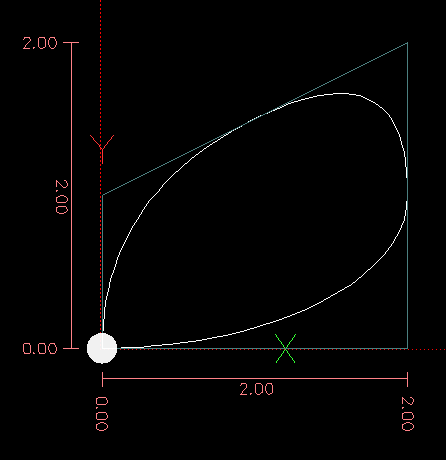

Machinekit Introduction
- Machinekit User Introduction
- Important User Concepts
- User Interfaces
- CONFIGURATION SELECTOR
- AXIS GUI
- NGCGUI
- GMOCCAPY
- Touchy GUI
- TkLinuxcnc GUI
- MINI GUI
- KEYSTICK GUI
- Using Machinekit
- CNC Machine Overview
- Coordinate System
- Tool Compensation
- G Code Overview
- Overview
- Format of a line
- Block Delete
- Line Number
- Word
- Number
- Parameters
- Expressions
- Binary Operators
- Functions
- Repeated Items
- Item order
- Commands and Machine Modes
- Polar Coordinates
- Modal Groups
- Comments
- Messages
- Probe Logging
- Logging
- Debug Messages
- Print Messages
- Comment Parameters
- File Requirements
- File Size
- G Code Order of Execution
- G Code Best Practices
- Linear and Rotary Axis
- Common Error Messages
- Appendix A: Numbered Parameters persistence
- G Codes
- Conventions
- G Code Quick Reference Table
- G0 Rapid Move
- G1 Linear Move
- G2, G3 Arc Move
- G4 Dwell
- G5.1 Quadratic B-spline
- G5.2 G5.3 NURBs Block
- G7 Lathe Diameter Mode
- G8 Lathe Radius Mode
- G10 L1 Set Tool Table
- G10 L2 Set Coordinate System
- G10 L10 Set Tool Table
- G10 L11 Set Tool Table
- G10 L20 Set Coordinate System
- G17 - G19.1 Plane Selection
- G20, G21 Units
- G28, G28.1 Go to Predefined Position
- G30, G30.1 Go to Predefined Position
- G33 Spindle Synchronized Motion
- G33.1 Rigid Tapping
- G38.x Straight Probe
- G40 Compensation Off
- G41, G42 Cutter Compensation
- G41.1, G42.1 Dynamic Cutter Compensation
- G43 Tool Length Offset
- G43.1: Dynamic Tool Length Offset
- G49: Cancel Tool Length Compensation
- G53 Move in Machine Coordinates
- G54-G59.3 Select Coordinate System
- G61, G61.1 Exact Path Mode
- G64 Path Blending
- G73 Drilling Cycle with Chip Breaking
- G76 Threading Cycle
- Canned Cycles
- G80 Cancel Canned Cycle
- G81 Drilling Cycle
- G82 Drilling Cycle, Dwell
- G83 Peck Drilling Cycle
- G84 Right-Hand Tapping Cycle
- G85 Boring Cycle, Feed Out
- G86 Boring Cycle, Spindle Stop, Rapid Move Out
- G87 Back Boring Cycle
- G88 Boring Cycle, Spindle Stop, Manual Out
- G90, G91 Distance Mode
- G90.1, G91.1 Arc Distance Mode
- G92 Coordinate System Offset
- G92.1, G92.2 Reset Coordinate System Offsets
- G92.3 Restore Axis Offsets
- G93, G94, G95: Feed Rate Mode
- G96, G97 Spindle Control Mode
- G98, G99 Canned Cycle Return Level
- M Codes
- M Code Quick Reference Table
- M0, M1 Program Pause
- M2, M30 Program End
- M60 Pallet Change Pause
- M3, M4, M5 Spindle Control
- M6 Tool Change
- M7, M8, M9 Coolant Control
- M19 Orient Spindle
- M48, M49 Speed and Feed Override Control
- M50 Feed Override Control
- M51 Spindle Speed Override Control
- M52 Adaptive Feed Control
- M53 Feed Stop Control
- M61 Set Current Tool Number
- M62 to M65 Output Control
- M66 Wait on Input
- M67 Synchronized Analog Output
- M68 Analog Output
- M70 Save Modal State
- M71 Invalidate Stored Modal State
- M72 Restore Modal State
- M73 Save and Autorestore Modal State
- M100 to M199 User Defined Commands
- O Codes
- Other Codes
- G Code Examples
- Lathe User Information
- RS274/NGC Differences
- Image to G Code
- Glossary
- Legal Section
Machinekit User Introduction
This Manual
The focus of this manual is on 'using' Machinekit. It is intended to be used once Machinekit is installed and configured. For standard installations see the Getting Started Guide for step by step instructions to get you up and going. For detailed information on installation and configuration of Machinekit see the Integrator Manual.
How Machinekit Works
The Enhanced Machine Controller (Machinekit) is a lot more than just another CNC mill program. It can control machine tools, robots, or other automated devices. It can control servo motors, stepper motors, relays, and other devices related to machine tools.
There are four main components to the Machinekit software:
-
a motion controller (EMCMOT)
-
a discrete I/O controller (EMCIO)
-
a task executor which coordinates them (EMCTASK)
-
and one of several graphical user interfaces.
In addition there is a layer called HAL (Hardware Abstraction Layer) which allows configuration of Machinekit without the need of recompiling.

The above figure shows a simple block diagram showing what a typical 3-axis Machinekit system might look like. This diagram shows a stepper motor system. The PC, running Linux as its operating system, is actually controlling the stepper motor drives by sending signals through the printer port. These signals (pulses) make the stepper drives move the stepper motors. The Machinekit system can also run servo motors via servo interface cards or by using an extended parallel port to connect with external control boards. As we examine each of the components that make up an Machinekit system we will remind the reader of this typical machine.
Graphical User Interfaces
A user interface is the part of the Machinekit that the machine tool operator interacts with. The Machinekit comes with several types of user interfaces:
-
'Axis', the standard GUI interface.

-
'Touchy', a touch screen GUI.

-
'NGCGUI', a subroutine GUI that provides 'fill in the blanks' programming of G code. It also supports concatenation of subroutine files to enable you to build a complete G code file without programming.

-
'Mini', a Tcl/Tk-based GUI
-
'TkMachinekit', a Tcl/Tk-based GUI
-
'Keystick', a character-based screen graphics program suitable for minimal installations (without the X server running).

-
'Xemc', an X-Windows program. A simulator configuration of Xemc can be ran from the configuration picker.
-
'halui' - a HAL based user interface which allows to control Machinekit using knobs and switches. See the Integrators manual for more information on halui.
-
'machinekitrsh' - a telnet based user interface which allows commands to be sent to Machinekit from remote computers.
Virtual Control Panels
-
'PyVCP' a python based virtual control panel that can be added to the Axis GUI or be stand alone.
-
'GladeVCP' - a glade based virtual control panel that can be added to the Axis GUI or be stand alone.

See the Integrators manual for more information on Virtual Control Panels.
Languages
Machinekit uses translation files to translate Machinekit User Interfaces into many languages. You just need to log in with the language you intend to use and when you start up Machinekit it comes up in that language. If your language has not been translated contact the mailing list if you can assist in the translation.
Thinking Like a Machine Operator
This book will not even pretend that it can teach you to run a mill or a lathe. Becoming a machinist takes time and hard work. An author once said, "We learn from experience, if at all." Broken tools, gouged vices, and scars are the evidence of lessons taught. Good part finish, close tolerances, and careful work are the evidence of lessons learned. No machine, no computer program, can take the place of human experience.
As you begin to work with the Machinekit program, you will need to place yourself in the position of operator. You need to think of yourself in the role of the one in charge of a machine. It is a machine that is either waiting for your command or executing the command that you have just given it. Throughout these pages we will give information that will help you become a good operator of the Machinekit system. You will need some information right up front here so that the following pages will make sense to you.
Modes of Operation
When Machinekit is running, there are three different major modes used for inputting commands. These are 'Manual', 'Auto', and 'MDI'. Changing from one mode to another makes a big difference in the way that the Machinekit control behaves. There are specific things that can be done in one mode that cannot be done in another. An operator can home an axis in manual mode but not in auto or MDI modes. An operator can cause the machine to execute a whole file full of G-codes in the auto mode but not in manual or MDI.
In manual mode, each command is entered separately. In human terms a manual command might be 'turn on coolant' or 'jog X at 25 inches per minute'. These are roughly equivalent to flipping a switch or turning the hand wheel for an axis. These commands are normally handled on one of the graphical interfaces by pressing a button with the mouse or holding down a key on the keyboard. In auto mode, a similar button or key press might be used to load or start the running of a whole program of G-code that is stored in a file. In the MDI mode the operator might type in a block of code and tell the machine to execute it by pressing the <return> or <enter> key on the keyboard.
Some motion control commands are available and will cause the same changes in motion in all modes. These include 'abort', 'estop', and 'feed rate override'). Commands like these should be self explanatory.
The AXIS user interface hides some of the distinctions between Auto and the other modes by making Auto-commands available at most times. It also blurs the distinction between Manual and MDI because some Manual commands like Touch Off are actually implemented by sending MDI commands. It does this by automatically changing to the mode that is needed for the action the user has requested.
Important User Concepts
This chapter covers important user concepts that should be understood before attempting to run a CNC machine with g code.
Trajectory Control
Trajectory Planning
Trajectory planning, in general, is the means by which Machinekit follows the path specified by your G Code program, while still operating within the limits of your machinery.
A G Code program can never be fully obeyed. For example, imagine you specify as a single-line program the following move:
G1 X1 F10 (G1 is linear move, X1 is the destination, F10 is the speed)
In reality, the whole move can’t be made at F10, since the machine must accelerate from a stop, move toward X=1, and then decelerate to stop again. Sometimes part of the move is done at F10, but for many moves, especially short ones, the specified feed rate is never reached at all. Having short moves in your G Code can cause your machine to slow down and speed up for the longer moves if the 'naive cam detector' is not employed with G64 Pn.
The basic acceleration and deceleration described above is not complex and there is no compromise to be made. In the INI file the specified machine constraints such as maximum axis velocity and axis acceleration must be obeyed by the trajectory planner.
Path Following
A less straightforward problem is that of path following. When you program a corner in G Code, the trajectory planner can do several things, all of which are right in some cases: it can decelerate to a stop exactly at the coordinates of the corner, and then accelerate in the new direction. It can also do what is called blending, which is to keep the feed rate up while going through the corner, making it necessary to round the corner off in order to obey machine constraints. You can see that there is a trade off here: you can slow down to get better path following, or keep the speed up and have worse path following. Depending on the particular cut, the material, the tooling, etc., the programmer may want to compromise differently.
Rapid moves also obey the current trajectory control. With moves long enough to reach maximum velocity on a machine with low acceleration and no path tolerance specified, you can get a fairly round corner.
Programming the Planner
The trajectory control commands are as follows:
-
'G61' - (Exact Path Mode) visits the programmed point exactly, even though that means it might temporarily come to a complete stop in order to change direction to the next programmed point.
-
'G61.1' - (Exact Stop Mode) tells the planner to come to an exact stop at every segment’s end.
-
'G64' - (Blend Without Tolerance Mode) G64 is the default setting when you start Machinekit. G64 is just blending and the naive cam detector is not enabled. G64 and G64 P0 tell the planner to sacrifice path following accuracy in order to keep the feed rate up. This is necessary for some types of material or tooling where exact stops are harmful, and can work great as long as the programmer is careful to keep in mind that the tool’s path will be somewhat more curvy than the program specifies. When using G0 (rapid) moves with G64 use caution on clearance moves and allow enough distance to clear obstacles based on the acceleration capabilities of your machine.
-
'G64 P- Q-' - (Blend With Tolerance Mode) This enables the 'naive cam detector' and enables blending with a tolerance. If you program G64 P0.05, you tell the planner that you want continuous feed, but at programmed corners you want it to slow down enough so that the tool path can stay within 0.05 user units of the programmed path. The exact amount of slowdown depends on the geometry of the programmed corner and the machine constraints, but the only thing the programmer needs to worry about is the tolerance. This gives the programmer complete control over the path following compromise. The blend tolerance can be changed throughout the program as necessary. Beware that a specification of G64 P0 has the same effect as G64 alone (above), which is necessary for backward compatibility for old G Code programs. See the G Code Chapter for more information on G64 P- Q-.
-
'Blending without tolerance' - The controlled point will touch each specified movement at at least one point. The machine will never move at such a speed that it cannot come to an exact stop at the end of the current movement (or next movement, if you pause when blending has already started). The distance from the end point of the move is as large as it needs to be to keep up the best contouring feed.
-
'Naive Cam Detector' - Successive G1 moves that involve only the XYZ axes that deviate less than Q- from a straight line are merged into a single straight line. This merged movement replaces the individual G1 movements for the purposes of blending with tolerance. Between successive movements, the controlled point will pass no more than P- from the actual endpoints of the movements. The controlled point will touch at least one point on each movement. The machine will never move at such a speed that it cannot come to an exact stop at the end of the current movement (or next movement, if you pause when blending has already started) On G2/3 moves in the G17 (XY) plane when the maximum deviation of an arc from a straight line is less than the G64 Q- tolerance the arc is broken into two lines (from start of arc to midpoint, and from midpoint to end). those lines are then subject to the naive cam algorithm for lines. Thus, line-arc, arc-arc, and arc-line cases as well as line-line benefit from the 'naive cam detector'. This improves contouring performance by simplifying the path.
In the following figure the blue line represents the actual machine velocity. The red lines are the acceleration capability of the machine. The horizontal lines below each plot is the planned move. The upper plot shows how the trajectory planner will slow the machine down when short moves are encountered to stay within the limits of the machines acceleration setting to be able to come to an exact stop at the end of the next move. The bottom plot shows the effect of the Naive Cam Detector to combine the moves and do a better job of keeping the velocity as planned.

Planning Moves
Make sure moves are 'long enough' to suit your machine/material. Principally because of the rule that the machine will never move at such a speed that it cannot come to a complete stop at the end of the current movement, there is a minimum movement length that will allow the machine to keep up a requested feed rate with a given acceleration setting.
The acceleration and deceleration phase each use half the ini file MAX_ACCELERATION. In a blend that is an exact reversal, this causes the total axis acceleration to equal the ini file MAX_ACCELERATION. In other cases, the actual machine acceleration is somewhat less than the ini file acceleration
To keep up the feed rate, the move must be longer than the distance it takes to accelerate from 0 to the desired feed rate and then stop again. Using A as 1/2 the ini file MAX_ACCELERATION and F as the feed rate in units per second, the acceleration time is ta = F/A and the acceleration distance is da = F*ta/2. The deceleration time and distance are the same, making the critical distance d = da + dd = 2 * da = F2/A.
For example, for a feed rate of 1 inch per second and an acceleration of 10 inches/sec2, the critical distance is 12/10 = 1/10 = 0.1 inches.
For a feed rate of 0.5 inch per second, the critical distance is 52/100 = 25/10 = 0.025 inches.
G Code
Defaults
When Machinekit first starts up many G and M codes are loaded by default. The current active G and M codes can be viewed on the MDI tab in the 'Active G-Codes:' window in the AXIS interface. These G and M codes define the behavior of Machinekit and it is important that you understand what each one does before running Machinekit. The defaults can be changed when running a G-Code file and left in a different state than when you started your Machinekit session. The best practice is to set the defaults needed for the job in the preamble of your G-Code file and not assume that the defaults have not changed.
Feed Rate
How the feed rate is applied depends on if an axis involved with the move is a rotary axis. Read and understand the Feed Rate section if you have a rotary axis or a lathe.
Tool Radius Offset
Tool Radius Offset (G41/42) requires that the tool be able to touch somewhere along each programmed move without gouging the two adjacent moves. If that is not possible with the current tool diameter you will get an error. A smaller diameter tool may run without an error on the same path. This means you can program a cutter to pass down a path that is narrower than the cutter without any errors. See the Cutter Compensation Section for more information.
Homing
After starting Machinekit each axis must be homed prior to running a program or running a MDI command.
If your machine does not have home switches a match mark on each axis can aid in homing the machine coordinates to the same place each time.
Once homed your soft limits that are set in the ini file will be used.
If you want to deviate from the default behavior, or want to use the Mini interface you will need to set the option NO_FORCE_HOMING = 1 in the [TRAJ] section of your ini file. More information on homing can be found in the Integrator Manual.
Tool Changes
There are several options when doing manual tool changes. See the [EMCIO] section of the Integrator Manual for information on configuration of these options. Also see the G28 and G30 section of the User Manual.
Coordinate Systems
The Coordinate Systems can be confusing at first. Before running a CNC machine you must understand the basics of the coordinate systems used by Machinekit. In depth information on the Machinekit Coordinate Systems is in the Coordinate System Section of this manual.
G53 Machine Coordinate
When you home Machinekit you set the G53 Machine Coordinate System to 0 for each axis homed.
-
No other coordinate systems or tool offsets are changed by homing.
The only time you move in the G53 machine coordinate system is when you program a G53 on the same line as a move. Normally you are in the G54 coordinate system.
G54-59.3 User Coordinates
Normally you use the G54 Coordinate System. When an offset is applied to a current user coordinate system a small blue ball with lines will be at the machine origin when your DRO is displaying 'Position: Relative Actual' in Axis. If your offsets are temporary use the Zero Coordinate System from the Machine menu or program 'G10 L2 P1 X0 Y0 Z0' at the end of your G Code file. Change the 'P' number to suit the coordinate system you wish to clear the offset in.
-
Offsets stored in a user coordinate system are retained when Machinekit is shut down.
-
Using the 'Touch Off' button in Axis sets an offset for the chosen User Coordinate System.
When You’re Lost
If you’re having trouble getting 0,0,0 on the DRO when you think you should, you may have some offsets programmed in and need to remove them.
-
Move to the Machine origin with G53 G0 X0 Y0 Z0
-
Clear any G92 offset with G92.1
-
Use the G54 coordinate system with G54
-
Set the G54 coordinate system to be the same as the machine coordinate system with G10 L2 P1 X0 Y0 Z0 R0
-
Turn off tool offsets with G49
-
Turn on the Relative Coordinate Display from the menu
Now you should be at the machine origin X0 Y0 Z0 and the relative coordinate system should be the same as the machine coordinate system.
Machine Configurations
The following diagram shows a typical mill showing direction of travel of the tool and the mill table and limit switches. Notice how the mill table moves in the opposite direction of the Cartesian coordinate system arrows shown by the 'Tool Direction' image. This makes the 'tool' move in the correct direction in relation to the material.

The following diagram shows a typical lathe showing direction of travel of the tool and limit switches.

User Interfaces
CONFIGURATION SELECTOR
The Configuraton Selector gui is activated from the system main menu when CNC / Machinekit is selected.
The Configuration Selector offers a selection of configurations organized:
My Configurations -------- User configurations
Sample Configurations ---- Sample configurations that
can be copied to 'My Configurations'
sim ------------------- simulation configurations. These
can be used for testing or learning
by_interface ---------- configurations organized by interface
by_machine ------------ configurations organized by machine
ARM ------------------ configurations for BeagleBone Black
and other ARM boards
apps ------------------ applications that do not require
starting machinekit but may be useful
for testing or trying applications
like pyvcp or gladevcp
attic ----------------- obsolete or historical configurations
hm2_stepper ---------- example config using 5i25 PCI board
in a stepper configuration
pru-examples ---------- examples using hal_pru_generic driver
stepper -------------- generic 3 axis stepper mill config
The sim configurations are often the most useful starting point for new users and are organized around supported guis:
axis gmoccapy gscreen low_graphics tklinuxcnc touchy
A gui configuration directory may contain subdirectories with configurations that illustrate special situations or the embedding of other applications.
The by_interface configurations are organized around common, supported interfaces like:
general mechatronics mesa parport pico pluto servotogo vigilant vitalsystems
Related hardware may be required to use these configurations as starting points for a system.
The by_machine configurations are organized around complete, known systems like:
boss cooltool sherline smithy tormach
A complete system may be required to use these configurations.
The apps items are typically 1) utilities that don’t require starting machinekit or 2) demonstrations of applications that can be used with machinekit:
info ------ creates a file with system information that
may be useful for problem diagnosis
gladevcp -- example gladevcp applications
halrun --- starts halrun in an terminal
latency --- applications to investigate latency
parport --- applications to test parport
pyvcp ----- example pyvcp applications
xhc-hb04 -- applications to test an xhc-hb04 USB wireless MPG
The attic directory stores obsolete or historical configurations.
When started, the Configuration Selector allows the user to pick one of their existing configurations (My Configurations) or select a new one (from the Sample Configurations) to be copied to their home directory. Copied configurations will appear under My Configurations on the next invocation of the Configuration Selector.
|
Note
|
Under the Apps directory, only applications that are usefully modified by the user are offered for copying to the user’s directory. |
AXIS GUI
Introduction
AXIS is a graphical front-end for Machinekit which features a live preview and backplot. It is written in Python and uses Tk and OpenGL to display its user interface.
Getting Started
If your configuration is not currently set up to use AXIS, you can change it by editing the .ini file. In the section '[DISPLAY]' change the 'DISPLAY' line to read 'DISPLAY = axis'.
The sample configuration 'sim/axis.ini' is already configured to use AXIS as its front-end.
A Typical Session
-
Start Machinekit.
-
Reset E-STOP (F1) and turn the Machine Power (F2) on.
-
Home all axes.
-
Load the g-code file.
-
Use the preview plot to verify that the program is correct.
-
Load the material.
-
Set the proper offset for each axis by jogging and using the Touch Off button as needed.
-
Run the program.
|
Note
|
To run the same program again depends on your setup and requirements. You might need to load more material and set offsets or move over and set an offset then run the program again. If your material is fixtured then you might need to only run the program again. See the Machine Menu for more information on the run command. |
AXIS Display
The AXIS window contains the following elements:
-
A display area that shows one of the following:
-
a preview of the loaded file (in this case, 'axis.ngc'), as well as the current location of the CNC machine’s 'controlled point'. Later, this area will display the path the CNC machine has moved through, called the 'backplot'
-
a large readout showing the current position and all offsets.
-
-
A menu bar and toolbar that allow you to perform various actions
-
'Manual Control Tab' - which allows you to make the machine move, turn the spindle on or off, and turn the coolant on or off if included in the ini file.
-
'MDI Tab' - where G-code programs can be entered manually, one line at a time. This also shows the 'Active G Codes' which shows which modal G Codes are in effect.
-
'Feed Override' - which allows you to scale the speed of programmed motions. The default maximum is 120% and can be set to a different value in the ini file. See the Integrator Manual for more information on this setting.
-
'Spindle Override' - which allows you to scale the spindle speed up or down.
-
'Jog Speed' - which allows you to set the jog speed within the limits set in the ini file. See the Integrator Manual for more information on the ini file.
-
'Max Velocity' - which allows you to restrict the maximum velocity of all programmed motions (except spindle synchronized motion).
-
A text display area that shows the loaded G-Code.
-
A status bar which shows the state of the machine. In this screen shot, the machine is turned on, does not have a tool inserted, and the displayed position is 'Relative' (showing all offsets), and 'Actual' (showing feedback position).
Menu Items
Some menu items might be grayed out depending on how you have your .ini file configured. For more information on configuration see the Integrator Manual.
File Menu
-
'Open…' - Opens a standard dialog box to open a g code file to load in AXIS. If you have configured Machinekit to use a filter program you can also open it up. See the Integrator manual for more information on filter programs.
-
'Recent Files' - Displays a list of recently opened files.
-
'Edit…' - Open the current g code file for editing if you have an editor configured in your ini file. See the Integrator Manual for more information on specifying an editor to use.
-
'Reload' - Reload the current g code file. If you edited it you must reload it for the changes to take affect. If you stop a file and want to start from the beginning then reload the file. The toolbar reload is the same as the menu.
-
'Save gcode as…' - Save the current file with a new name.
-
'Properties' - The sum of the rapid and feed moves. Does not factor in acceleration, blending or path mode so time reported will never be less than the actual run time.
-
'Edit tool table…' - Same as Edit if you have defined an editor you can open the tool table and edit it.
-
'Reload tool table' - After editing the tool table you must reload it.
-
'Ladder editor' - If you have loaded Classic Ladder you can edit it from here. See the Integrator Manual on setting up Classic Ladder
-
'Quit' - Terminates the current Machinekit session.
-
'Toggle Emergency Stop F1' - Change the state of the Emergency Stop.
-
'Toggle Machine Power F2' - Change the state of the Machine Power if the Emergency Stop is not on.
-
'Run Program' - Run the currently loaded program from the beginning.
-
'Run From Selected Line' - Select the line you want to start from first. Use with caution as this will move the tool to the expected position before the line first then it will execute the rest of the code.
|
Warning
|
Do not use 'Run From Selected Line' if your g code program contains subroutines. |
-
'Step' - Single step through a program.
-
'Pause' - Pause a program.
-
'Resume' - Resume running from a pause.
-
'Stop' - Stop a running program. When run is selected after a stop the program will start from the beginning.
-
'Stop at M1' - If an M1 is reached, and this is checked, program execution will stop on the M1 line. Press Resume to continue.
-
'Skip lines with "/"' - If a line begins with '/' and this is checked, the line will be skipped.
-
'Clear MDI history' - Clears the MDI history window.
-
'Copy from MDI history' - Copies the MDI history to the clipboard
-
'Paste to MDI history' - Paste from the clipboard to the MDI history window
-
'Calibration' - Starts a PID tuning assistant, which is mainly for servo systems. Some things can be changed on a stepper system.
-
'Show HAL Configuration' - Opens the HAL Configuration window where you can monitor HAL Components, Pins, Parameters, Signals, Functions, and Threads.
-
'HAL Meter' - Opens a window where you can monitor a single HAL Pin, Signal, or Parameter.
-
'HAL Scope' - Opens a virtual oscilloscope that allows plotting HAL values vs. time.
-
'Show Machinekit Status' - Opens a window showing Machinekit’s status.
-
'Set Debug Level' - Opens a window where debug levels can be viewed and some can be set.
-
'Homing' - Home one or all axes.
-
'Unhoming' - Unhome one or all axes.
-
'Zero Coordinate System' - Clear (set to zero) a chosen offset.
-
'Tool touch off to workpiece' - When performing Touch Off, the value entered is relative to the current workpiece ('G5x') coordinate system, as modified by the axis offset ('G92'). When the Touch Off is complete, the Relative coordinate for the chosen axis will become the value entered. See G10 L10 in the G code chapter.
-
'Tool touch off to fixture' - When performing Touch Off, the value entered is relative to the ninth ('G59.3') coordinate system, with the axis offset ('G92') ignored. This is useful when there is a tool touch-off fixture at a fixed location on the machine, with the ninth ('G59.3') coordinate system set such that the tip of a zero-length tool is at the fixture’s origin when the Relative coordinates are 0. See G10 L11 in the G code chapter.
View Menu
-
'Top View' - The Top View (or Z view) displays the G code looking along the Z axis from positive to negative. This view is best for looking at X & Y.
-
'Rotated Top View' - The Rotated Top View (or rotated Z view) also displays the G code looking along the Z axis from positive to negative. But sometimes it’s convenient to display the X & Y axes rotated 90 degrees to fit the display better. This view is also best for looking at X & Y.
-
'Side View' - The Side View (or X view) displays the G code looking along the X axis from positive to negative. This view is best for looking at Y & Z.
-
'Front View' - The Front View (or Y view) displays the G code looking along the Y axis from negative to positive. This view is best for looking at X & Z.
-
'Perspective View' - The Perspective View (or P view) displays the G code looking at the part from an adjustable point of view, defaulting to X+, Y-, Z+. The position is adjustable using the mouse and the drag/rotate selector. This view is a compromise view, and while it does do a good job of trying to show three (to nine!) axes on a two-dimensional display, there will often be some feature that is hard to see, requiring a change in viewpoint. This view is best when you would like to see all three (to nine) axes at once.
-
'Display Inches' - Set the AXIS display scaling for inches.
-
'Display MM' - Set the AXIS display scaling for millimeters.
-
'Show Program' - The preview display of the loaded G code program can be entirely disabled if desired.
-
'Show Program Rapids' - The preview display of the loaded G code program will always show the feedrate moves (G1,G2,G3) in white. But the display of rapid moves (G0) in cyan can be disabled if desired.
-
'Alpha-blend Program' - This option makes the preview of complex programs easier to see, but may cause the preview to display more slowly.
-
'Show Live Plot' - The highlighting of the feedrate paths (G1,G2,G3) as the tool moves can be disabled if desired.
-
'Show Tool' - The display of the tool cone/cylinder can be disabled if desired.
-
'Show Extents' - The display of the extents (maximum travel in each axis direction) of the loaded G code program can be disabled if desired.
-
'Show Offsets' - The selected fixture offset (G54-G59.3) origin location can be shown as a set of three orthogonal lines, one each of red, blue, and green. This offset origin (or fixture zero) display can be disabled if desired.
-
'Show Machine Limits' - The machine’s maximum travel limits for each axis, as set in the ini file, are shown as a rectangular box drawn in red dashed lines. This is useful when loading a new G code program, or when checking for how much fixture offset would be needed to bring the G code program within the travel limits of your machine. It can be shut off if not needed.
-
'Show Velocity' - A display of velocity is sometimes useful to see how close your machine is running to its design velocities. It can be disabled if desired.
-
'Show Distance to Go' - Distance to go is a very handy item to know when running an unknown G code program for the first time. In combination with the rapid override and feedrate override controls, unwanted tool and machine damage can be avoided. Once the G code program has been debugged and is running smoothly, the Distance to Go display can be disabled if desired.
-
'Clear Live Plot' - As the tool travels in the Axis display, the G code path is highlighted. To repeat the program, or to better see an area of interest, the previously highlighted paths can be cleared.
-
'Show Commanded Position' - This is the position that Machinekit will try to go to. Once motion has stopped, this is the position Machinekit will try to hold.
-
'Show Actual Position' - Actual Position is the measured position as read back from the system’s encoders or simulated by step generators. This may differ slightly from the Commanded Position for many reasons including PID tuning, physical constraints, or position quantization.
-
'Show Machine Position' - This is the position in unoffset coordinates, as established by Homing.
-
'Show Relative Position' - This is the Machine Position modified by 'G5x', 'G92', and 'G43' offsets.
User Menu
-
'User0' - User defined command number 1 - to
-
'User9' - User defined command number 10
This menu will be shown but disabled unless activated in the ini file Ten user commands can be specified in the ini file.
-
'#' precedes a halcmd This will be sent and the return waited for before continuing
-
'$' precedes a system command This will be spawned to a new process and return immediately
-
No prefix before a gcode instruction
The commands can optionally be bound to the 0 - 9 keys on the keyboard Full details in the INI file docs
Help Menu
-
'About Axis' - We all know what this is.
-
'Quick Reference' - Shows the keyboard shortcut keys.
Toolbar buttons
From left to right in the Axis display, the toolbar buttons (keyboard shortcuts shown [in brackets]) are:
-
 Toggle Emergency Stop [F1] (also called E-Stop)
Toggle Emergency Stop [F1] (also called E-Stop) -
 Toggle Machine Power [F2]
Toggle Machine Power [F2] -
Open G Code file [O]
-
 Reload current file [Ctrl-R]
Reload current file [Ctrl-R] -
Begin executing the current file [R]
-
 Execute next line [T]
Execute next line [T] -
 Pause Execution [P] Resume Execution[S]
Pause Execution [P] Resume Execution[S] -
 Stop Program Execution [ESC]
Stop Program Execution [ESC] -
 Toggle Skip lines with "/" [Alt-M-/]
Toggle Skip lines with "/" [Alt-M-/] -
 Toggle Optional Pause [Alt-M-1]
Toggle Optional Pause [Alt-M-1] -
 Zoom In
Zoom In -
 Zoom Out
Zoom Out -
Top view
-
 Rotated Top view
Rotated Top view -
 Side view
Side view -
 Front view
Front view -
 Perspective view
Perspective view -
 Toggle between Drag and Rotate Mode [D]
Toggle between Drag and Rotate Mode [D] -
 Clear live backplot [Ctrl-K]
Clear live backplot [Ctrl-K]
Graphical Display Area
In the upper-left corner of the program display is the coordinate display. It shows the position of the machine. To the left of the axis name, an origin symbol is shown if the axis has been homed.
A limit symbol is shown if the axis is on one of its limit switches.

To properly interpret these numbers, refer to the 'Position:' indicator in the status bar. If the position is 'Absolute', then the displayed number is in the machine coordinate system. If it is 'Relative', then the displayed number is in the offset coordinate system. When the coordinates displayed are relative and an offset has been set, the display will include a cyan 'machine origin' marker.

If the position is 'Commanded', then it is the ideal position --for instance, the exact coordinate given in a 'G0' command. If it is 'Actual', then it is the position the machine has actually moved to. These values can differ for several reasons: Following error, dead band, encoder resolution, or step size. For instance, if you command a movement to X 0.0033 on your mill, but one step of your stepper motor or one encoder count is 0.00125, then the 'Commanded' position might be 0.0033, but the 'Actual' position will be 0.0025 (2 steps) or 0.00375 (3 steps).
When a file is loaded, a preview of it is shown in the display area. Fast moves (such as those produced by the 'G0' command) are shown as cyan lines. Moves at a feed rate (such as those produced by the 'G1' command) are shown as solid white lines. Dwells (such as those produced by the 'G4' command) are shown as small pink 'X' marks.
G0 (Rapid) moves prior to a feed move will not show on the preview plot. Rapid moves after a T<n> (Tool Change) will not show on the preview until after the first feed move. To turn either of these features off program a G1 without any moves prior to the G0 moves.
The 'extents' of the program in each axis are shown. At the ends, the least and greatest coordinate values are indicated. In the middle, the difference between the coordinates is shown.
When some coordinates exceed the 'soft limits' in the .ini file, the relevant dimension is shown in a different color and enclosed by a box. In figure below the maximum soft limit is exceeded on the X axis as indicated by the box surrounding the coordinate value. The minimum X travel of the program is -1.95, the maximum X travel is 1.88, and the program requires 3.83 inches of X travel. To move the program so it’s within the machine’s travel in this case, jog to the left and Touch Off X again.

When no tool is loaded, the location of the tip of the tool is indicated by the 'tool cone'. The 'tool cone' does not provide guidance on the form, length, or radius of the tool.
When a tool is loaded (for instance, with the MDI command 'T1 M6' ), the cone changes to a cylinder which shows the diameter of the tool given in the tool table file.
When the machine moves, it leaves a trail called the backplot. The color of the line indicates the type of motion: Yellow for jogs, faint green for rapid movements, red for straight moves at a feed rate, and magenta for circular moves at a feed rate.
Axis can optionally display a grid when in orthogonal views. Enable
or disable the grid using the 'Grid' menu under 'View'. When
enabled, the grid is shown in the top and rotated top views; when
coordinate system is not rotated, the grid is shown in the front and
side views as well. The presets in the 'Grid' menu are controlled
by the inifile item [DISPLAY]GRIDS; if unspecified, the default is
10mm 20mm 50mm 100mm 1in 2in 5in 10in.
Specifying a very small grid may decrease performance.
By left-clicking on a portion of the preview plot, the line will be highlighted in both the graphical and text displays. By left-clicking on an empty area, the highlighting will be removed.
By dragging with the left mouse button pressed, the preview plot will be shifted (panned).
By dragging with shift and the left mouse button pressed, or by dragging with the mouse wheel pressed, the preview plot will be rotated. When a line is highlighted, the center of rotation is the center of the line. Otherwise, the center of rotation is the center of the entire program.
By rotating the mouse wheel, or by dragging with the right mouse button pressed, or by dragging with control and the left mouse button pressed, the preview plot will be zoomed in or out.
By clicking one of the 'Preset View' icons, or by pressing 'V', several preset views may be selected.
Text Display Area
By left-clicking a line of the program, the line will be highlighted in both the graphical and text displays.
When the program is running, the line currently being executed is highlighted in red. If no line has been selected by the user, the text display will automatically scroll to show the current line.

Manual Control
While the machine is turned on but not running a program, the items in the 'Manual Control' tab can be used to move the machine or control its spindle and coolant.
When the machine is not turned on, or when a program is running, the manual controls are unavailable.
Many of the items described below are not useful on all machines. When AXIS detects that a particular pin is not connected in HAL, the corresponding item in the Manual Control tab is removed. For instance, if the HAL pin 'motion.spindle-brake' is not connected, then the 'Brake' button will not appear on the screen. If the environment variable 'AXIS_NO_AUTOCONFIGURE' is set, this behavior is disabled and all the items will appear.
'Axis' allows you to manually move the machine. This action is known as 'jogging'. First, select the axis to be moved by clicking it. Then, click and hold the '+' or '-' button depending on the desired direction of motion. The first four axes can also be moved by the arrow keys (X and Y), PAGE UP and PAGE DOWN keys (Z), and the [ and ] keys (A).
If 'Continuous' is selected, the motion will continue as long as the button or key is pressed. If another value is selected, the machine will move exactly the displayed distance each time the button is clicked or the key is pressed. By default, the available values are '0.1000, 0.0100, 0.0010, 0.0001'
See the Configure section of the Integrator Manual for more information on setting the increments.
If your machine has home switches and a homing sequence defined for all axes the button will read 'Home All'. The 'Home All' button or the Ctrl-HOME key will home all axes using the homing sequence. Pressing the HOME key will home the current axis, even if a homing sequence is defined.
If your machine has home switches and no homing sequence is defined or not all axes have a homing sequence the button will read 'Home' and will home the selected axis only. Each axis must be selected and homed separately.
If your machine does not have home switches defined in the configuration the 'Home' button will set the current selected axis current position to be the absolute position 0 for that axis and will set the 'is-homed' bit for that axis.
See the Integrator Manual for more information on homing.
By pressing 'Touch Off' or the END key, the 'G54 offset' for the current axis is changed so that the current axis value will be the specified value. Expressions may be entered using the rules for rs274ngc programs, except that variables may not be referred to. The resulting value is shown as a number.
See also the 'Tool touch off to workpiece' and 'Tool touch off to fixture' options in the Machine menu.
By pressing Override Limits, the machine will temporarily be allowed to jog off of a physical limit switch. This check box is only available when a limit switch is tripped. The override is reset after one jog. If the axis is configured with separate positive and negative limit switches, Machinekit will allow the jog only in the correct direction. Override Limits will not allow a jog past a soft limit. The only way to disable a soft limit on an axis is to Unhome it.
The buttons on the first row select the direction for the spindle to rotate: Counterclockwise, Stopped, Clockwise. Counterclockwise will only show up if the pin 'motion.spindle-reverse' is in the HAL file (it can be 'net trick-axis motion.spindle-reverse' ). The buttons on the next row increase or decrease the rotation speed. The checkbox on the third row allows the spindle brake to be engaged or released. Depending on your machine configuration, not all the items in this group may appear. Pressing the spindle start button sets the 'S' speed to 1.
The two buttons allow the 'Mist' and 'Flood' coolants to be turned on and off. Depending on your machine configuration, not all the items in this group may appear.
MDI
MDI allows G-code commands to be entered manually. When the machine is not turned on, or when a program is running, the MDI controls are unavailable.

-
'History' - This shows MDI commands that have been typed earlier in this session.
-
'MDI Command' - This allows you to enter a g-code command to be executed. Execute the command by pressing Enter or by clicking 'Go'.
-
'Active G-Codes' - This shows the 'modal codes' that are active in the interpreter. For instance, 'G54' indicates that the 'G54 offset' is applied to all coordinates that are entered. When in Auto the Active G-Codes represent the codes after any read ahead by the interpreter.
Feed Override
By moving this slider, the programmed feed rate can be modified. For instance, if a program requests 'F60' and the slider is set to 120%, then the resulting feed rate will be 72.
Spindle Speed Override
By moving this slider, the programmed spindle speed can be modified. For instance, if a program requests S8000 and the slider is set to 80%, then the resulting spindle speed will be 6400. This item only appears when the HAL pin 'motion.spindle-speed-out' is connected.
Jog Speed
By moving this slider, the speed of jogs can be modified. For instance, if the slider is set to 1 in/min, then a .01 inch jog will complete in about .6 seconds, or 1/100 of a minute. Near the left side (slow jogs) the values are spaced closely together, while near the right side (fast jogs) they are spaced much further apart, allowing a wide range of jog speeds with fine control when it is most important.
On machines with a rotary axis, a second jog speed slider is shown. This slider sets the jog rate for the rotary axes (A, B and C).
Max Velocity
By moving this slider, the maximum velocity can be set. This caps the maximum velocity for all programmed moves except spindle-synchronized moves.
Keyboard Controls
Almost all actions in AXIS can be accomplished with the keyboard. A full list of keyboard shortcuts can be found in the AXIS Quick Reference, which can be displayed by choosing Help > Quick Reference. Many of the shortcuts are unavailable when in MDI mode.
The Feed Override keys behave differently when in Manual Mode. The keys '12345678 will select an axis if it is programed. If you have 3 axis then ' will select axis 0, 1 will select axis 1, and 2 will select axis 2. The remainder of the number keys will still set the Feed Override. When running a program '1234567890 will set the Feed Override to 0% - 100%.
The most frequently used keyboard shortcuts are shown in the following Table
Show Machinekit Status
AXIS includes an option which shows some of the details of Machinekit’s state. You can run this program by invoking Machine > Show Machinekit Status

The name of each item is shown in the left column. The current value is shown in the right column. If the value has recently changed, it is shown on a red background.
MDI interface
AXIS includes a program called mdi which allows text-mode entry of
MDI commands to a running Machinekit session. You can run this program by
opening a terminal and typing
mdi
Once it is running, it displays the prompt 'MDI>'. When a blank line is entered, the machine’s current position is shown. When a command is entered, it is sent to Machinekit to be executed.
This is a sample session of mdi.
$ mdi MDI> (0.0, 0.0, 0.0, 0.0, 0.0, 0.0) MDI> G1 F5 X1 MDI> (0.5928500000000374, 0.0, 0.0, 0.0, 0.0, 0.0) MDI> (1.0000000000000639, 0.0, 0.0, 0.0, 0.0, 0.0)
axis-remote
AXIS includes a program called 'axis-remote' which can send certain commands to a running AXIS. The available commands are shown by running 'axis-remote --help' and include checking whether AXIS is running ('--ping'), loading a file by name, reloading the currently loaded file ('--reload'), running the loaded file ('--run') and making AXIS exit ('--quit').
Manual Tool Change
Machinekit includes a userspace HAL component called 'hal_manualtoolchange', which shows a window prompt telling you what tool is expected when a 'M6' command is issued. After the OK button is pressed, execution of the program will continue.
The HAL configuration file 'configs/sim/axis_manualtoolchange.hal' shows the HAL commands necessary to use this component.
hal_manualtoolchange can be used even when AXIS is not used as the GUI. This component is most useful if you have presettable tools and you use the tool table.
|
Note
|
Important Note: Rapids will not show on the preview after a T<n> is issued until the next feed move after the M6. This can be very confusing to most users. To turn this feature off for the current tool change program a G1 with no move after the T<n>. |
Python modules
AXIS includes several Python modules which may be useful to others. For more information on one of these modules, use 'pydoc <module name>' or read the source code. These modules include:
-
'linuxcnc' provides access to the Machinekit command, status, and error channels
-
'gcode' provides access to the rs274ngc interpreter
-
'rs274' provides additional tools for working with rs274ngc files
-
'hal' allows the creation of userspace HAL components written in Python
-
'_togl' provides an OpenGL widget that can be used in Tkinter applications
-
'minigl' provides access to the subset of OpenGL used by AXIS
To use these modules in your own scripts, you must ensure that the directory where they reside is on Python’s module path. When running an installed version of Machinekit, this should happen automatically. When running 'in-place', this can be done by using 'scripts/rip-environment'.
Using AXIS in Lathe Mode
By including the line 'LATHE = 1' in the [DISPLAY] section of the ini file, AXIS selects lathe mode. The 'Y' axis is not shown in coordinate readouts, the view is changed to show the Z axis extending to the right and the X axis extending towards the bottom of the screen, and several controls (such as those for preset views) are removed. The coordinate readouts for X are replaced with diameter and radius.
Pressing 'V' zooms out to show the entire file, if one is loaded.
When in lathe mode, the shape of the loaded tool (if any) is shown.

Advanced Configuration
For more information on ini file settings that can change how AXIS works see the INI File/Sections/[DISPLAY] Section of Configuration chapter in the Integrator manual.
Program Filters
AXIS has the ability to send loaded files through a 'filter program'. This filter can do any desired task: Something as simple as making sure the file ends with 'M2', or something as complicated as generating G-Code from an image.
The '[FILTER]' section of the ini file controls how filters work. First, for each type of file, write a 'PROGRAM_EXTENSION' line. Then, specify the program to execute for each type of file. This program is given the name of the input file as its first argument, and must write rs274ngc code to standard output. This output is what will be displayed in the text area, previewed in the display area, and executed by Machinekit when 'Run'. The following lines add support for the 'image-to-gcode' converter included with Machinekit:
[FILTER] PROGRAM_EXTENSION = .png,.gif Greyscale Depth Image png = image-to-gcode gif = image-to-gcode
It is also possible to specify an interpreter:
PROGRAM_EXTENSION = .py Python Script py = python
In this way, any Python script can be opened, and its output is treated as g-code. One such example script is available at 'nc_files/holecircle.py'. This script creates g-code for drilling a series of holes along the circumference of a circle.

If the environment variable AXIS_PROGRESS_BAR is set, then lines written to stderr of the form
FILTER_PROGRESS=%d
will set the AXIS progress bar to the given percentage. This feature should be used by any filter that runs for a long time.
The X Resource Database
The colors of most elements of the AXIS user interface can be customized through the X Resource Database. The sample file 'axis_light_background' changes the colors of the backplot window to a 'dark lines on white background' scheme, and also serves as a reference for the configurable items in the display area. The sample file 'axis_big_dro' changes the position readout to a larger size font. To use these files:
xrdb -merge /usr/share/doc/emc2/axis_light_background xrdb -merge /usr/share/doc/emc2/axis_big_dro
For information about the other items which can be configured in Tk applications, see the Tk man pages.
Because modern desktop environments automatically make some settings in the X Resource Database that adversely affect AXIS, by default these settings are ignored. To make the X Resource Database items override AXIS defaults, include the following line in your X Resources:
*Axis*optionLevel: widgetDefault
this causes the built-in options to be created at the option level 'widgetDefault', so that X Resources (which are level 'userDefault') can override them.
Physical jog wheels
To improve the interaction of AXIS with physical jog wheels, the axis currently selected in the GUI is also reported on a pin with a name like 'axisui.jog.x'. One of these pins is 'TRUE' at one time, and the rest are 'FALSE'. These are meant to control motion’s jog-enable pins.
After AXIS has created these HAL pins, it executes the HAL file named in '[HAL]POSTGUI_HALFILE'. Unlike '[HAL]HALFILE', only one such file may be used.
~./axisrc
If it exists, the contents of '~/.axisrc' are executed as Python source code just before the AXIS GUI is displayed. The details of what may be written in the axisrc are subject to change during the development cycle.
The following adds Control-Q as a keyboard shortcut for Quit.
root_window.bind("<Control-q>", "destroy .")
help2.append(("Control-Q", "Quit"))
axisui
Upon initialisation, Axis creates several HAL pins which can be used externally.
-
axisui.jog.x (also y z a b c u v w) is an OUT bit pin set TRUE if that axis is currently the selected axis for jogging in the Axis GUI
-
axisui.jog.increment is an OUT float pin set true if in incremental jog mode, set 0 if in continous mode. If in incremental mode, the value of the pin is the increment selected eg. In metric mode, value of 5.000000 = 5mm increments, 0.500000 = 0.5mm increments
-
axisui.notifications-clear-info is an IN bit pin, which if set TRUE will clear all info text from the Axis GUI notification area (bottom right corner)
-
axisui.notifications-clear-error is an IN bit pin, which if set TRUE will clear all error text from the Axis GUI notification area (bottom right corner)
-
axisui.notifications-clear is an IN bit pin, which if set TRUE will clear ALL text from the Axis GUI notification area (bottom right corner) Same as using Ctrl Space from the keyboard
-
axisui.run-disable is an IN bit pin, which if set TRUE will prevent Axis running a program. An example of its use would be to connect it to a machine safety screen interlocks, thereby allowing jogging, touch off etc. but preventing a program running until the screens are back in place.
Some of these pins can be useful in synchronising pyvcp or gladevcp panels which duplicate some of the functions of Axis.
External Editor
The menu options File > Edit… and File > Edit Tool Table… become available after defining the editor in the ini section [DISPLAY]. Useful values include EDITOR=gedit and EDITOR=gnome-terminal -e vim. For more information, see the DISPLAY section of the INI Configuration Chapter in the Integrator Manual.
Virtual Control Panel
AXIS can display a custom virtual control panel in the right-hand pane. You can program buttons, indicators, data displays and more. For more information, see the Integrator Manual.
Axis Preview Control
Special comments can be inserted into the G Code file to control how the preview of AXIS behaves. In the case where you want to limit the drawing of the preview use these special comments. Anything between the (AXIS,hide) and (AXIS,show) will not be drawn during the preview. The (AXIS,hide) and (AXIS,show) must be used in pairs with the (AXIS,hide) being first. Anything after a (AXIS,stop) will not be drawn during the preview.
These comments are useful to unclutter the preview display (for instance while debugging a larger g-code file, one can disable the preview on certain parts that are already working OK).
-
(AXIS,hide) Stops the preview (must be first)
-
(AXIS,show) Resumes the preview (must follow a hide)
-
(AXIS,stop) Stops the preview from here to the end of the file.
-
(AXIS,notify,the_text) Displays the_text as an info display This display can be useful in the Axis preview when (debug,message) comments are not displayed.
|
Note
|
The preview display can be completely disabled for all loaded files by an ini file field |
[USER_COMMANDS] DISABLE_DISPLAY = YES
See the INI file docs for full details
NGCGUI

Overview
-
'NGCGUI' is a tcl application for using Machinekit subroutines.
-
'NGCGUI' can run as a standalone application or can be embedded in multiple tab pages in the axis gui
-
'PYNGCGUI' is an alternate, python implementation of ngcgui.
-
'PYNGCGUI' can run as a standalone application or can be embedded as a tab page (with its own set of multiple subroutine tabs) in any gui that supports embedding of gladevcp applications. Example guis include: axis, touchy, gscreen and gmoccapy
Using NGCGUI or PYNGCGUI:
-
Tab pages are provided for subroutines specified in the INI file
-
New subroutines tab pages can be added using Custom tab pages
-
Each subroutine tab page provides entry boxes for all subroutine parameters
-
The entry boxes can have a default value and an label that are identified by special comments in the subroutine file
-
Subroutine invocations are concatenated together to form a multiple step program
-
Any single-file gcode subroutine that conforms to ngcgui conventions can be used
-
Any gcmc (Gcode-meta-compiler) program that conforms to ngcgui conventions for tagging variables can be used. (The gcmc executable must be installed separately, see: http://www.vagrearg.org/content/gcmc)
|
Note
|
NGCGUI and PYNGCGUI implement the same functions and both process .ngc and .gcmc files that conform to a few ngcgui-specific conventions. In this document, the tern NGCGUI generally refers to either application. |
Demonstration Configurations
A number of demonstration configurations are located in the sim directory of the Sample Configurations offered by the Machinekit configuration picker. The configuration picker is on the system’s main menu:
Applications > CNC > Machinekit
Examples are included for the axis, touchy, gscreen, and gmoccapy guis. These examples demonstrate both 3-axis (XYZ) cartesian configurations (like mills) and lathe (XZ) setups. Some examples show the use of a popupkeyboard for touch screen systems and other examples demonstrate the use of files created for the gcmc (Gcode Meta Compiler) application. The touchy examples also demonstrate incorporation of a gladevcp backplot viewer (gremlin_view).
The simplest application is found as:
Sample Configurations / sim / axis / ngcgui /ngcgui_simple
A comprehensive example showing gcmc compatibility is at:
Sample Configurations / sim / axis / ngcgui / ngcgui_gcmc
A comprehensive example embedded as a gladevcp app and using gcmc is at:
Sample Configurations / sim / gscreen / ngcgui / pyngcgui_gcmc
The example sim configurations make use of library files that provide example gcode subroutine (.ngc) files and Gcode-meta-compiler (.gcmc) files:
-
'nc_files/ngcgui_lib'
-
'arc1.ngc' - basic arc using cutter radius compensation
-
'arc2.ngc' - arc speced by center, offset, width, angle (calls arc1)
-
'backlash.ngc' - routine to measure an axis backlash with dial indicator
-
'db25.ngc' - creates a DB25 plug cutout
-
'gosper.ngc' - a recursion demo (flowsnake)
-
'helix.ngc' - helix or D-hole cutting
-
'helix_rtheta.ngc' - helix or D-hole positioned by radius and angle
-
'hole_circle.ngc' - equally spaced holes on a circle
-
'ihex.ngc' - internal hexagon
-
'iquad.ngc' - internal quadrilateral
-
'ohex.ngc' - outside hexagon
-
'oquad.ngc' - outside quadrilateral
-
'qpex_mm.ngc' - demo of qpockets (mm based)
-
'qpex.ngc' - demo of qpockets (inch based)
-
'qpocket.ngc' - quadrilateral pocket
-
'rectangle_probe.ngc' - probe a rectangular area
-
'simp.ngc' - a simple subroutine example that creates two circles
-
'slot.ngc' - slot from connecting two endpoints
-
'xyz.ngc' - machine exerciser constrained to a box shape
-
-
'nc_files/ngcgui_lib/lathe'
-
'g76base.ngc' - gui for g76 threading
-
'g76diam.ngc' - threading speced by major, minor diameters
-
'id.ngc' - bores the inside diameter
-
'od.ngc' - turns the outside diameter
-
'taper-od.ngc' - turns a taper on the outside diameter
-
-
'nc_files/gcmc_lib'
-
'drill.gcmc' - drill holes in rectangle pattern
-
'square.gcmc' - simple demo of variable tags for gcmc files
-
'star.gcmc' - gcmc demo illustrating functions and arrays
-
'wheels.gcmc' - gcmc demo of complex patterns
-
To try a demonstration, select a sim configuration and start the linuxCNC program.
If using the axis gui, press the 'E-Stop'
then 'Machine Power'
then 'Home All'. Pick a ngcgui tab, fill in
any empty blanks with sensible values and press
'Create Feature' then 'Finalize'. Finally press the 'Run'
button to watch it run. Experiment
by creating multiple features and features from different tab pages.
Other guis will have similar functionality but the buttons and names may be different.
|
Note
|
Notes
The demonstration configs create tab pages for just a few of the provided
examples. Any gui with a Custom tab page can open any of the library
example subroutines or any user file if it is in the linuxCNC subroutine
path.
|
To see special key bindings, click inside an ngcgui tab page to get focus and then presss Control-k.
The demonstration subroutines should run on the simulated machine configurations included in the distribution. A user should always understand the behavior and purpose of a program before running on a real machine.
Library Locations
In linuxCNC installations installed from deb packages, the simulation configs for ngcgui use symbolic links to non-user-writable Machinekit libraries for:
-
'nc_files/ngcgui_lib' ngcgui-compatible subfiles
-
'nc_files/ngcgui_lib/lathe' ngcgui-compatible lathe subfiles
-
'nc_files/gcmc_lib' ngcgui-gcmc-compatible programs
-
'nc_files/ngcgui_lib/utilitysubs' Helper subroutines
-
'nc_files/ngcgui_lib/mfiles' User M files
These libraries are located by ini file items that specify the search paths used by linuxCNC (and ngcgui):
[RS274NGC] SUBROUTINE_PATH = ../../nc_files/ngcgui_lib:../../nc_files/gcmc_lib:../../nc_files/ngcgui_lib/utilitysubs USER_M_PATH = ../../nc_files/ngcgui_lib/mfiles
|
Note
|
These are long lines (not continued on multiple lines) that specify the directories used in a search patch. The directory names are separated by colons (:). No spaces should occur between directory names. |
A user can create new directories for their own subroutines and M-files and add them to the search path(s).
For example, a user could create directories from the terminal with the commands:
mkdir /home/myusername/mysubs mkdir /home/myusername/mymfiles
And then create or copy system-provided files to these user-writable directories. For instance, a user might create a ngcgui-compatible subfile named:
/home/myusername/mysubs/example.ngc
To use files in new directories, the ini file must be edited to include the new subfiles and to augment the search path(s). For this example:
[RS274NGC] ... SUBROUTINE_PATH = /home/myusername/mysubs:../../nc_files/ngcgui_lib:../../nc_files/gcmc_lib:../../nc_files/ngcgui_lib/utilitysubs USER_M_PATH = /home/myusername/mymfiles:../../nc_files/ngcgui_lib/mfiles [DISPLAY] ... NGCGUI_SUBFILE = example.ngc ...
Machinekit (and ngcgui) use the first file found when searching directories in the search path. With this behavior, you can supersede an ngcgui_lib subfile by placing a subfile with an identical name in a directory that is found earlier in the path search. More information can be found in the INI chapter of the Integrators Manual.
Standalone Usage
Standalone NGCGUI
For usage, type in a terminal:
ngcgui --help
Usage:
ngcgui --help | -?
ngcgui [Options] -D nc_files_directory_name
ngcgui [Options] -i Machinekit_inifile_name
ngcgui [Options]
Options:
[-S subroutine_file]
[-p preamble_file]
[-P postamble_file]
[-o output_file]
[-a autosend_file] (autosend to axis default:auto.ngc)
[--noauto] (no autosend to axis)
[-N | --nom2] (no m2 terminator (use %))
[--font [big|small|fontspec]] (default: "Helvetica -10 normal")
[--horiz|--vert] (default: --horiz)
[--cwidth comment_width] (width of comment field)
[--vwidth varname_width] (width of varname field)
[--quiet] (fewer comments in outfile)
[--noiframe] (default: frame displays image)
|
Note
|
As a standalone application, ngcgui handles a single subroutine file which can be invoked multiple times. Multiple standalone ngcgui applications can be started independently. |
Standalone PYNGCGUI
For usage, type in a terminal:
pyngcgui --help
Usage:
pyngcgui [Options] [sub_filename]
Options requiring values:
[-d | --demo] [0|1|2] (0: DEMO standalone toplevel)
(1: DEMO embed new notebook)
(2: DEMO embed within existing notebook)
[-S | --subfile sub_filename]
[-p | --preamble preamble_filename]
[-P | --postamble postamble_filename]
[-i | --ini inifile_name]
[-a | --autofile autoauto_filename]
[-t | --test testno]
[-H | --height height_of_entry widget] (typ 20-40)
[-K | --keyboardfile glade_file] (use custom popupkeyboard glade file)
Solo Options:
[-v | --verbose]
[-D | --debug]
[-N | --nom2] (no m2 terminator (use %))
[-n | --noauto] (save but do not automatically send result)
[-k | --keyboard] (use default popupkeybaord)
[-s | --sendtoaxis] (send generated ngc file to axis gui)
Notes:
A set of files is comprised of a preamble, subfile, postamble.
The preamble and postamble are optional.
One set of files can be specified from cmdline.
Multiple sets of files can be specified from an inifile.
If --ini is NOT specified:
search for a running linuxCNC and use it's inifile
|
Note
|
As a standalone application, pyngcgui can read an ini file (or a running linuxCNC application) to create tab pages for multiple subfiles. |
Embedding NGCGUI
Embedding NGCGUI in Axis
The following INI file items go in the [DISPLAY] section. (See additional sections below for additional items needed)
-
'TKPKG = Ngcgui 1.0' - the NGCGUI package
-
'TKPKG = Ngcguittt 1.0' - the True Type Tracer package for generating text for engraving (optional, must follow TKPKG = Ngcgui).
-
'TTT = truetype-tracer' - name of the truetype tracer program (it must be in user PATH)
-
'TTT_PREAMBLE = in_std.ngc' - Optional, specifies filename for preamble used for ttt created subfiles. (alternate: mm_std.ngc)
|
Note
|
The optional truetype tracer items are used to specify an ngcgui-compatible tab page that uses the application truetype-tracer. The truetype-tracer application must be installed independently and located in the user PATH. |
Embedding PYNGCGUI as a gladevcp tab page in a gui
The following INI file items go in the [DISPLAY] section for use with the axis, gscreen, or touchy guis. (See additional sections below for additional items needed)
EMBED_TAB_NAME = Pyngcgui - name to appear on embedded tab
EMBED_TAB_COMMAND = gladevcp -x {XID} pyngcgui_axis.ui - invokes gladevcp
EMBED_TAB_LOCATION = name_of_location - where the embeded page is located
|
Note
|
The EMBED_TAB_LOCATION specifier is not used for the axis gui. While pyngcgui can be embedded in axis, integration is more complete when using ngcgui (using TKPKG = Ngcgui 1.0). To specify the EMBED_TAB_LOCATION for other guis, see the example ini files. |
|
Note
|
The truetype tracer gui front-end is not currently available for gladevcp applications. |
Additional INI File items required for ngcgui or pyngcgui
The following INI file items go in the [DISPLAY] section for any gui that embeds either ngcgui or pyngcgui.
-
'NGCGUI_FONT = Helvetica -12 normal' - specifices the font name,size, normal|bold
-
'NGCGUI_PREAMBLE = in_std.ngc' - the preamble file to be added in front of the subroutines. When concatenating several common subroutine invocations, this preamble is only added once. For mm-based machines, use mm_std.ngc
-
'NGCGUI_SUBFILE = filename1.ngc' - creates a tab from the filename1 subroutine
-
'NGCGUI_SUBFILE = filename2.ngc' - creates a tab from the filename2 subroutine
-
'… etc'
-
'NGCGUI_SUBFILE = gcmcname1.gcmc' - creates a tab from the gcmcname1 file
-
'NGCGUI_SUBFILE = gcmcname2.gcmc' - creates a tab from the gcmcname2 file
-
'… etc'
-
'NGCGUI_SUBFILE = ""' - creates a custom tab that can open any subroutine in the search path
-
'NGCGUI_OPTIONS = opt1 opt2 …' - NGCGUI options
-
'nonew' - disallow making a new custom tab
-
'noremove' - disallow removing any tab page
-
'noauto' - no autosend (use makeFile, then save or manually send)
-
'noiframe' - no internal image, display images on separate top level widget
-
'nom2' - do not terminate with m2, use % terminator. This option eliminates all the side effects of m2 termination
-
-
'GCMC_INCLUDE_PATH = dirname1:dirname2' - search directories for gcmc include files
This is an example of embedding NGCGUI into Axis. The subroutines need to be in a directory specified by the [RS274NGC]SUBROUTINE_PATH. Some example subroutines use other subroutines so check to be sure you have the dependences, if any, in a SUBROUTINE_PATH directory. Some subroutines may use custom Mfiles which must be in a directory specified by the [RS274NGC]USER_M_PATH.
The Gcode-meta-compiler (gcmc) can include statements like: include("filename.inc.gcmc"); By default, gcmc includes the current directory which, for linuxCNC, will be the directory containing the linuxCNC ini file. Additional directories can be prepended to the gcmc search order with the GCMC_INCLUDE_PATH item.
[RS274NGC] ... SUBROUTINE_PATH = ../../nc_files/ngcgui_lib:../../ngcgui_lib/utilitysubs USER_M_PATH = ../../nc_files/ngcgui_lib/mfiles [DISPLAY] TKPKG = Ngcgui 1.0 TKPKG = Ngcguittt 1.0 # Ngcgui must precede Ngcguittt NGCGUI_FONT = Helvetica -12 normal # specify filenames only, files must be in [RS274NGC]SUBROUTINE_PATH NGCGUI_PREAMBLE = in_std.ngc NGCGUI_SUBFILE = simp.ngc NGCGUI_SUBFILE = xyz.ngc NGCGUI_SUBFILE = iquad.ngc NGCGUI_SUBFILE = db25.ngc NGCGUI_SUBFILE = ihex.ngc NGCGUI_SUBFILE = gosper.ngc # specify "" for a custom tab page NGCGUI_SUBFILE = "" #NGCGUI_SUBFILE = "" use when image frame is specified if # opening other files is required # images will be put in a top level window NGCGUI_OPTIONS = #NGCGUI_OPTIONS = opt1 opt2 ... # opt items: # nonew -- disallow making a new custom tab # noremove -- disallow removing any tab page # noauto -- no auto send (makeFile, then manually send) # noiframe -- no internal image, image on separate top level GCMC_INCLUDE_PATH = /home/myname/gcmc_includes TTT = truetype-tracer TTT_PREAMBLE = in_std.ngc PROGRAM_PREFIX = ../../nc_files
|
Note
|
The above is not a complete axis gui INI — the items show are those used by ngcgui. Many additional items are required by Machinekit to have a complete INI file. |
Truetype Tracer
Ngcgui_ttt provides support for truetype-tracer (v4). It creates an axis tab page which allows a user to create a new ngcgui tab page after entering text and selecting a font and other parameters. (Truetype-tracer must be installed independently).
To embed ngcgui_ttt in axis, specify the following items in addition to ngcgui items:
Item: [DISPLAY]TKPKG = Ngcgui_ttt version_number
Example: [DISPLAY]TKPKG = Ngcgui_ttt 1.0
Note: Mandatory, specifies loading of ngcgui_ttt in an axis tab page named ttt.
Must follow the TKPKG = Ngcgui item.
Item: [DISPLAY]TTT = path_to_truetype-tracer
Example: [DISPLAY]TTT = truetype-tracer
Note: Optional, if not specified, attempt to use /usr/local/bin/truetype-tracer.
Specify with absolute pathname or as a simple executable name
in which case the user PATH environment will used to find the program.
Item: [DISPLAY]TTT_PREAMBLE = preamble_filename
Example: [DISPLAY]TTT_PREAMBLE = in_std.ngc
Note: Optional, specifies filename for preamble used for ttt created subfiles.
INI File Path Specifications
Ngcgui uses the linuxCNC search path to find files.
The search path begins with the standard directory specified by:
[DISPLAY]PROGRAM_PREFIX = directory_name
followed by multiple directories specfied by:
[RS274NGC]SUBROUTINE_PATH = directory1_name:directory1_name:directory3_name ...
Directories may be specifed as absolute paths or relative paths.
Example: [DISPLAY]PROGRAM_PREFIX = /home/myname/machinekit/nc_files Example: [DISPLAY]PROGRAM_PREFIX = ~/machinekit/nc_files Example: [DISPLAY]PROGRAM_PREFIX = ../../nc_files
An absolute path beginning with a "/" specifies a complete filesystem location. A path beginning with a "\~/" specifies a path starting from the user’s home directory. A path beginning with "~username/" specifies a path starting in username’s home directory.
Relative paths are based on the startup directory which is the directory containing the INI file. Using relative paths can facilitate relocation of configurations but requires a good understanding of linux path specifiers.
./d0 is the same as d0, e.g., a directory named d0 in the startup directory ../d1 refers to a directory d1 in the parent directory ../../d2 refers to a directory d2 in the parent of the parent directory ../../../d3 etc.
Multiple directories can be specified with [RS274NGC]SUBROUTINE_PATH by separating them with colons. The following example illustrates the format for multiple directories and shows the use of relative and absolute paths.
[RS274NGC]SUBROUTINE_PATH = ../../nc_files/ngcgui_lib:../../nc_files/ngcgui_lib/utilitysubs:/tmp/tmpngc`
This is one long line, do not continue on multiple lines. When linuxCNC and/or ngcgui searches for files, the first file found in the search is used.
Machinekit (and ngcgui) must be able to find all subroutines including helper routines that are called from within ngcgui subfiles. It is convenient to place utility subs in a separate directory as indicated in the example above.
The distribution includes the ngcgui_lib directory and demo files for preambles, subfiles, postambles and helper files. To modify the behavior of the files, you can copy any file and place it in an earlier part of the search path. The first directory searched is [DISPLAY]PROGRAM_PREFIX. You can use this directory but it is better practice to create dedicated directory(ies) and put them at the beginning of the [RS274NGC]SUBROUTINE_PATH.
In the following example, files in /home/myname/machinekit/mysubs will be found before files in ../../nc_files/ngcgui_lib.
[RS274NGC]SUBROUTINE_PATH = /home/myname/machinekit/mysubs:../../nc_files/ngcgui_lib:../../nc_files/ngcgui_lib/utilitysubs`
New users may inadvertently try to use files that are not structured to be compatible with ngcgui requirements. Ngcgui will likely report numerous errors if the files are not coded per its conventions. Good practice suggests that ngcgui-compatible subfiles should be placed in a directory dedicated to that purpose and that preamble, postamble, and helper files should be in separate directory(ies) to discourage attempts to use them as subfiles. Files not intended for use as subfiles can include a special comment: "(not_a_subfile)" so that ngcgui will reject them automatically with a relevant message.
Summary of INI File item details for NGCGUI usage
Item: [RS274NGC]SUBROUTINE_PATH = dirname1:dirname2:dirname3 ...
Example: [RS274NGC]SUBROUTINE_PATH = ../../nc_files/ngcgui_lib:../../nc_files/ngcgui_lib/utilitysubs
Note: Optional, but very useful to organize subfiles and utility files
Item: [RS274NGC]USER_M_PATH = dirname1:dirname2:dirname3 ...
Example: [RS274NGC]USER_M_PATH = ../../nc_files/ngcgui_lib/mfiles
Note: Optional, needed to locate custom user mfiles
Item: [DISPLAY]EMBED_TAB_NAME = name to display on embedded tab page
Example: [DISPLAY]EMBED_TAB_NAME = Pyngcgui
Note: The entries: EMBED_TAB_NAME,EMBED_TAB_COMMAND,EMBED_TAB_LOCATION
define an embedded application for several linuxCNC guis
Item: [DISPLAY]EMBED_TAB_COMMAND = programname followed by arguments
Example: [DISPLAY]EMBED_TAB_COMMAND = gladevcp -x {XID} pyngcgui_axis.ui
Note: For gladevcp applications, see the man page for gladevcp
Item: [DISPLAY]EMBED_TAB_LOCATION = name_of_location
Example: [DISPLAY]EMBED_TAB_LOCATION = notebook_main
Note: See example INI files for possible locations
Not required for the axis gui
Item: [DISPLAY]PROGRAM_PREFIX = dirname
Example: [DISPLAY]PROGRAM_PREFIX = ../../nc_files
Note: Mandatory and needed for numerous linuxCNC functions
It is the first directory used in the search for files
item: [DISPLAY]TKPKG = Ngcgui version_number
Example: [DISPLAY]TKPKG = Ngcgui 1.0
Note: Required only for axis gui embedding, specifies loading of ngcgui axis tab pages
Item: [DISPLAY]NGCGUI_FONT = font_descriptor
Example: [DISPLAY]NGCGUI_FONT = Helvetica -12 normal
Note: Optional, font_descriptor is a tcl-compatible font specifier
with items for fonttype -fontsize fontweight
Default is: Helvetica -10 normal
Smaller font sizes may be useful for small screens
Larger font sizes may be helpful for touch screen applications
Item: [DISPLAY]NGCGUI_SUBFILE = subfile_filename
Example: [DISPLAY]NGCGUI_SUBFILE = simp.ngc
Example: [DISPLAY]NGCGUI_SUBFILE = square.gcmc
Example: [DISPLAY]NGCGUI_SUBFILE = ""
Note: Use one or more items to specify ngcgui-compatible
subfiles or gcmc programs that require a tab page on startup.
A "Custom" tab will be created when the filename is "".
A user can use a "Custom" tab to browse the file system
and identify preamble, subfile, and postamble files.
Item: [DISPLAY]NGCGUI_PREAMBLE = preamble_filename
Example: [DISPLAY]NGCGUI_PREAMBLE = in_std.ngc
Note: Optional, when specified, the file is prepended to a subfile.
Files created with "Custom" tab pages use the preamble specified
with the page.
Item: [DISPLAY]NGCGUI_POSTAMBLE = postamble_filename
Example: [DISPLAY]NGCGUI_POSTAMBLE = bye.ngc
Note: Optional, when specified, the file is appended to a subfiles.
Files created with "Custom" tab pages use the postamble specified
with the page.
Item: [DISPLAY]NGCGUI_OPTIONS = opt1 opt2 ...
Example: [DISPLAY]NGCGUI_OPTIONS = nonew noremove
Note: Multiple options are separated by blanks.
By default, ngcgui configures tab pages so that:
1) a user can make new tabs
2) a user can remove tabs (except for the last remaining one)
3) finalized files are automatically sent to linuxCNC
4) an image frame (iframe) is made available to display
an image for the subfile (if an image is provided)
5) the ngcgui result file sent to linuxCNC is terminated with
an m2 (and incurs m2 side-effects)
The options nonew, noremove, noauto, noiframe, nom2 respectively
disable these default behaviors.
By default, if an image (.png,.gif,jpg,pgm) file
is found in the same directory as the subfile, the
image is displayed in the iframe. Specifying
the noiframe option makes available additional buttons
for selecting a preamble, subfile, and postamble and
additional checkboxes. Selections of the checkboxes
are always available with special keys:
Ctrl-R Toggle "Retain values on Subfile read"
Ctrl-E Toggle "Expand subroutine"
Ctrl-a Toggle "Autosend"
(Ctrl-k lists all keys and functions)
If noiframe is specified and an image file is found,
the image is displayed in a separate window and
all functions are available on the tab page.
The NGCGUI_OPTIONS apply to all ngcgui tabs except that the
nonew, noremove, and noiframe options are not applicable
for "Custom" tabs. Do not use "Custom" tabs if you want
to limit the user's ability to select subfiles or create
additional tab pages.
Item: [DISPLAY]GCMC_INCLUDE_PATH = dirname1:dirname2:...
Example: [DISPLAY]GCMC_INCLUDE_PATH = /home/myname/gcmc_includes:/home/myname/gcmc_includes2
Note: Optional, each directory will be included when gcmc is invoked
using the option: --include dirname
File Requirements for NGCGUI Compatibility
Single-File Gcode (.ngc) Subroutine Requirements
An NGCGUI-compatible subfile contains a single subroutine definition. The name of the subroutine must be the same as the filename (not including the .ngc suffix). Machinekit supports named or numbered subroutines, but only named subroutines are compatible with NGCGUI. For more information see the O-Codes Chapter.
The first non-comment line should be a sub statement. The last non-comment line should be a endsub statement.
(info: info_text_to_appear_at_top_of_tab_page) ; comment line beginning with semicolon ( comment line using parentheses) o<examp> sub BODY_OF_SUBROUTINE o<examp> endsub ; comment line beginning with semicolon ( comment line using parentheses)
The body of the subroutine should begin with a set of statements that define local named parameters for each positional parameter expected for the subroutine call. These definitions must be consecutive beginning with #1 and ending with the last used parameter number. Definitions must be provided for each of these parameters (no omissions).
#<xparm> = #1 #<yparm> = #2 #<zparm> = #3
Machinekit considers all numbered parameters in the range #1 thru #30 to be calling parameters so ngcgui provides entry boxes for any occurence of parameters in this range. It is good practice to avoid use of numbered parameters #1 through #30 anywhere else in the subroutine. Using local, named parameters is recommended for all internal variables.
Each defining statement may optionally include a special comment and a default value for the parameter.
#<vname> = #n (=default_value) or #<vname> = #n (comment_text) or #<vname> = #n (=default_value comment_text)
#<xparm> = #1 (=0.0) #<yparm> = #2 (Ystart) #<zparm> = #3 (=0.0 Z start setting)
If a default_value is provided, it will be entered in the entry box for the parameter on startup.
If comment_text is included, it will be used to identify the input instead of the parameter name.
Notes on global named parameters and ngcgui:
(global named parameters have a leading underscore in the name, like #<_someglobalname>)
As in many programming languages, use of globals is powerful but can often lead to unexpected consequences. In Machinekit, existing global named parameters will be valid at subroutine execution and subroutines can modify or create global named parameters.
Passing information to subroutines using global named parameters is discouraged since such usage requires the establishment and maintenance of a well-defined global context that is difficult to maintain. Using numbered parameters #1 thru #30 as subroutine inputs should be sufficient to satisfy a wide range of design requirements.
While input global named parameters are discouraged, linuxCNC subroutines must use global named parameters for returning results. Since ngcgui-compatible subfiles are aimed at gui usage, return values are not a common requirement. However, ngcgui is useful as a testing tool for subroutines which do return global named parameters and it is common for ngcgui-compatible subfiles to call utility subroutine files that return results with global named parameters.
To support these usages, ngcgui ignores global named parameters that include a colon (:) character in their name. Use of the colon (:) in the name prevents ngcgui from making entryboxes for these parameters.
o<examp> sub ... #<_examp:result> = #5410 (return the current tool diameter) ... o<helper> call [#<x1>] [#<x2>] (call a subroutine) #<xresult> = #<_helper:answer> (immediately localize the helper global result) #<_helper:answer> = 0.0 (nullify global named parameter used by subroutine) ... o<examp> endsub
In the above example, the utility subroutine will be found in a separate file named helper.ngc. The helper routine returns a result in a global named parameter named #<_helper:answer.
For good practice, the calling subfile immediately localizes the result for use elsewhere in the subfile and the global named parameter used for returning the result is nullified in an attempt to mitigate its inadvertent use elsewhere in the global context. (A nullification value of 0.0 may not always be a good choice).
Ngcgui supports the creation and concatenation of multiple features for a subfile and for multiple subfiles. It is sometimes useful for subfiles to determine their order at runtime so ngcgui inserts a special global parameter that can be tested within subroutines. The parameter is named #<_feature:>. Its value begins with a value of 0 and is incremented for each added feature.
A special 'info' comment can be included anywhere in an ngcgui-compatible subfile. The format is:
(info: info_text)
The info_text is displayed near the top of the ngcgui tab page in axis.
Files not intended for use as subfiles can include a special comment so that ngcgui will reject them automatically with a relevant message.
(not_a_subfile)
An optional image file (.png,.gif,.jpg,.pgm) can accompany a subfile. The image file can help clarify the parameters used by the subfile. The image file should be in the same directory as the subfile and have the same name with an appropriate image suffix, e.g. the subfile example.ngc could be accompanied by an image file examp.png. Ngcgui attempts to resize large images by subsampling to a size with maximum width of 320 and maximum height of 240 pixels.
None of the conventions required for making an ngcgui-compatible subfile preclude its use as general purpose subroutine file for Machinekit.
The Machinekit distribution includes a library (ngcgui_lib directory) that includes both example ngcgui-compatible subfiles and utility files to illustrate the features of Machinekit subroutines and ngcgui usage. Another libary (gcmc_lib) provides examples for subroutine files for the Gcode meta compiler (gcmc)
Additional user sumitted subroutines can be found on the Forum in the Subroutines Section.
Gcode-meta-compiler (.gcmc) file requirements
Files for the Gcode-meta-compiler (gcmc) are read by ngcgui and it creates entry boxes for variables tagged in the file. When a feature for the file is finalized, ngcgui passes the file as input to the gcmc compiler and, if the compile is successful, the resulting gcode file is sent to linuxCNC for execution. The resulting file is formatted as single-file subroutine; .gcmc files and .ngc files can be intermixed by ngcgui.
The variables identified for inclusion in ngcgui are tagged with lines that will appear as comments to the gcmc compiler.
//ngcgui: varname1 = //ngcgui: varname2 = value2 //ngcgui: varname3 = value3, label3;
//ngcgui: zsafe = //ngcgui: feedrate = 10 //ngcgui: xl = 0, x limit
For these examples, the entry box for varname1 will have no default, the entry box for varname2 will have a default of value2, and the entry box for varname 3 will have a default of value 3 and a label label3 (instead of varname3). The default values must be numbers.
To make it easier to modify valid lines in a gcmc file, alternate tag line formats accepted. The alternate formats ignore trailing semicolons (;) and trailing comment markers (//) With this provision, it is often makes it possible to just add the //ngcgui: tag to existing lines in a .gcmc file.
//ngcgui: varname2 = value2; //ngcgui: varname3 = value3; //, label3;
//ngcgui: feedrate = 10; //ngcgui: xl = 0; //, x limit
An info line that will appear at the top of a tab page may be optionally included with a line tagged as:
//ngcgui: info: text_to_appear_at_top_of_tab_page
When required, options can be passed to the gcmc compiler with a line tagged:
//ngcgui: -option_name [ [=] option_value]
//ngcgui: -I //ngcgui: --imperial //ngcgui: --precision 5 //ngcgui: --precision=6
Options for gcmc are available with the terminal command:
gcmc --help
A gcmc program by default uses metric mode. The mode can be set to inches with the option setting:
//ngcgui: --imperial
A preamble file, if used, can set a mode (g20 or g21) that conflicts with the mode used by a gcmc file. To ensure that the gcmc program mode is in effect, include the following statement in the .gcmc file:
include("ensure_mode.gcmc")
and provide a proper path for gcmc include_files in the ini file, for example:
[DISPLAY] GCMC_INCLUDE_PATH = ../../nc_files/gcmc_lib


GMOCCAPY
Introduction
'GMOCCAPY' is a GUI for LinuxCNC, designed to be used with a touch screen, but can also be used on normal screens with a mouse or hardware buttons and MPG wheels, as it presents HAL Pins for the most common needs. Please find more information in the following.
It offers the possibility to display up to 4 axis, support a lathe mode for normal and back tool lathe and can be adapted to nearly every need, because gmoccapy supports embedded tabs and side panels. As a good example for that see gmoccapy_plasma
It has support for integrated virtual keyboard (onboard or matchbox-keyboard), so there is no need for a hardware keyboard or mouse, but it can also be used with that hardware. Gmoccapy offers a separate settings page to configure most settings of the GUI without editing files.
'GMOCCAPY' can be localized very easy, because the corresponding files are separated from the linuxcnc.po files, so there is no need to translate unneeded stuff. The files are placed in /src/po/gmoccapy. Just copy the gmoccapy.pot file to something like fr.po and translate that file with gtranslator or poedit. After a make you got the GUI in your preference language. Please publish your translation, so it can be included in the official packages and be published to other users. At the Moment it is available in English, German, Spanish, Polish, Serbian and Hungarian. Feel free to help me to introduce more languages, nieson@web.de. If you need help, don’t hesitate to ask.
Requirements
Gmoccapy has been tested on Ubuntu 10.04 and 12.04 and Debian Wheezy, with LinuxCNC 2.6 ,2.7, and master, if you use other versions, please inform about problems or solutions on the LinuxCNC forum or the German CNC Ecke Forum or LinuxCNC users mailing list
The minimum screen resolution for gmoccapy, using it without side panels is 979 x 750 Pixel, so it should fit to every standard screen.
How To Get gmoccapy
Beginning with LinuxCNC 2.6 gmoccapy is included in the standard installation. So the easiest way to get gmoccapy on you controlling PC, is just to get the ISO and install from the CD / DVD /USB-Stick.
If you do have already installed an earlier LinuxCNC version, check how to update here.
You will receive updates with the regular deb packages.
You will get a similar screen to the following: The design may variate depending on your config.
Basic Configuration
There is really not to much to configure just to run gmoccapy, but there are some points you should take care off if you want to use all the features of the GUI.
You will find the following INI files included, just to show the basics:
* gmoccapy.ini
* gmoccapy_4_axis.ini
* gmoccapy_lathe.ini
* gmoccapy_lathe_imperial.ini
* gmoccapy_left_panel.ini
* gmoccapy_right_panel.ini
* gmoccapy_messages.ini
* gmoccapy_pendant.ini
* gmoccapy_sim_hardware_button.ini
* gmoccapy_tool_sensor.ini
* gmoccapy_with_user_tabs.ini
The names should explain the main intention of the different INI Files.
If you use an existing configuration of your machine, just edit your INI according to this document.
|
Important
|
If you want to use MACROS, don’t forget to set the path to your macros or subroutines folder as described below. |
So let us take a closer look to the the INI file and what you need to include
to use gmoccapy on your machine:
The DISPLAY Section
[DISPLAY] DISPLAY = gmoccapy PREFERENCE_FILE_PATH = gmoccapy_preferences DEFAULT_LINEAR_VELOCITY = 166.666 MAX_LINEAR_VELOCITY = 166.666 MAX_FEED_OVERRIDE = 1.5 MAX_SPINDLE_OVERRIDE = 1.2 MIN_SPINDLE_OVERRIDE = 0.5 LATHE = 1 BACK_TOOL_LATHE = 1 PROGRAM_PREFIX = ../../nc_files/
The most important part is to tell LinuxCNC to use gmoccapy, editing the [DISPLAY] section.
[DISPLAY] DISPLAY = gmoccapy
PREFERENCE_FILE_PATH = gmoccapy_preferences
The line PREFERENCE_FILE_PATH gives the location and name of the preferences file to be used. In most cases this line will not be needed, it is used by gmoccapy to store your settings of the GUI, like themes, DRO units, colors, and keyboard settings, etc., see settings page for more details.
|
Note
|
If no path or file is given, gmoccapy will use as default <your_machinename>.pref, if no machine name is given in your INI File it will use gmoccapy.pref The file will be stored in your config directory, so the settings will not be mixed if you use several configs. If you only want to use one file for several machines, you need to include PREFERENCE_FILE_PATH in your INI. |
DEFAULT_LINEAR_VELOCITY = 166.666
Sets the default linear velocity in machine units per second.
|
Note
|
If no value is given, a value of 15 will be applied. If you don’t set max linear velocity, the default linear velocity will be reduced to the default value max linear velocity (60). |
If you don’t set max velocity in TRAJ, it may be reduced as well see TRAJ section
MAX_LINEAR_VELOCITY = 166.666
Sets the value of the max velocity for jogging in machine units per second.
[NOTE] If no value is given, a value of 60 will be applied.
MAX_FEED_OVERRIDE = 1.5
Sets the maximum feed override, in the example given, you will be allowed to override the feed by 150%.
MAX_SPINDLE_OVERRIDE = 1.2 MIN_SPINDLE_OVERRIDE = 0.5
Will allow you to change the spindle override within a limit from 50% to 120%.
LATHE = 1 BACK_TOOL_LATHE = 1
The first line set the screen layout to control a lathe.
The second line is optional and will switch the X axis in a way you need for a back tool lathe. Also the keyboard shortcuts will react in a different way.
|
Tip
|
See also the Lathe Specific Section |
-
PROGRAM_PREFIX = ../../nc_files/
Is the entry to tell linuxcnc/gmoccapy where to look for the ngc files.
|
Note
|
If not specified Gmoccapy will look in the following order for ngc files: linuxcnc/nc_files and then the users home directory. |
You can add embedded programs to gmoccapy like you can do in axis, touchy and gscreen. All is done by gmoccapy automatically if you include a few lines in your INI file in the DISPLAY section.
If you never used a glade panel, I recommend to read the excellent documentation. Glade VCP
EMBED_TAB_NAME = DRO
EMBED_TAB_LOCATION = ntb_user_tabs
EMBED_TAB_COMMAND = gladevcp -x {XID} dro.glade
EMBED_TAB_NAME = Second user tab
EMBED_TAB_LOCATION = ntb_preview
EMBED_TAB_COMMAND = gladevcp -x {XID} vcp_box.glade
All you have to take care off, is that you include for every tab or side panel the mentioned three lines,
-
EMBED_TAB_NAME = Represents the name of the tab or side panel, it is up to you what name you use, but it must be present!
-
EMBED_TAB_LOCATION = Is the place where your program will be placed in the GUI.
-
ntb_user_tabs (as main tab, covering the complete screen)'
-
ntb_preview (as tab on the preview side)'
-
box_left (on the left, complete high of the screen)
-
box_right (on the right, in between the normal screen and the button list)
-
box_coolant_and_spindle (will hide the coolant and spindle frames and introduce your glade file here)
-
box_cooling (will hide the cooling frame and introduce your glade file)
-
box_spindle (will hide the spindle frame and introduce your glade file)
-
box_vel_info (will hide the velocity frames and introduce your glade file)
-
box_custom_1 (will introduce your glade file left of vel_frame)
-
box_custom_2 (will introduce your glade file left of cooling_frame)
-
box_custom_3 (will introduce your glade file left of spindle_frame)
-
box_custom_4 (will introduce your glade file right of spindle_frame)
See the different INI files included to see the differences
-
EMBED_TAB_COMMAND = the command to execute, i.e.
gladevcp -x {XID} dro.glade
Includes a custom glade file called dro.glade in the mentioned location The file must be placed in the config folder of your machine.
gladevcp h_buttonlist.glade
Will just open a new user window called h_buttonlist.glade note the difference, this one is stand alone, and can be moved around independent from gmoccapy window.
camview-emc -w {XID}
Will add a live image from a web cam to the location you specified. Take care that camview-emc is installed, as it is not by default. Detailed information for camview and linuxcnc at: cam view
gladevcp -c gladevcp -u hitcounter.py -H manual-example.hal manual-example.ui
Will add a the panel manual-example.ui, include a custom python handler, hitcounter.py and make all connections after realizing the panel according to manual-example.hal.
Here are some examples:
Gmoccapy has the ability to create hal driven user messages. To use them you need to introduce some lines in the [DISPLAY] section of the INI file.
Here is how to set up 3 user pop up message dialogs the messages support pango markup language. Detailed information about the markup language can be found at Pango Markup
MESSAGE_TEXT = The text to be displayed, may be pango markup formated MESSAGE_TYPE = "status" , "okdialog" , "yesnodialog" MESSAGE_PINNAME = is the name of the hal pin group to be created
-
'status' : Will just display a message as pop up window, using the messaging system of gmoccapy
-
'okdialog' : Will hold focus on the message dialog and will activate a "-waiting" Hal_Pin OUT. Closing the message will reset the waiting pin
-
'yesnodialog' : Will hold focus on the message dialog and will activate a "-waiting" Hal_Pin bit OUT it will also give access to an "-response" Hal_Pin Bit Out, this pin will hold 1 if the user clicks OK, and in all other states it will be 0 Closing the message will reset the waiting pin The response Hal Pin will remain 1 until the dialog is called again
MESSAGE_TEXT = This is a <span background="#ff0000" foreground="#ffffff"> info-message</span> test MESSAGE_TYPE = status MESSAGE_PINNAME = statustest MESSAGE_TEXT = This is a yes no dialog test MESSAGE_TYPE = yesnodialog MESSAGE_PINNAME = yesnodialog MESSAGE_TEXT = Text can be <small>small</small>, <big>big</big>, <b>bold</b <i>italic</i>, and even be <span color="red">colored</span>. MESSAGE_TYPE = okdialog MESSAGE_PINNAME = okdialog
The specific hal pin conventions for these can be found under the User Messages hal pin section.
The RS274NGC Section
[RS274NGC] SUBROUTINE_PATH = macros
Sets the path to search for macros and other subroutines.
The MACRO Section
You can add macros to gmoccapy, similar to touchy’s way. A macro is nothing else than a ngc-file. You are able to execute complete CNC programs in MDI mode, by just pushing one button. To do so, you have to add a section like so:
[MACROS] MACRO = i_am_lost MACRO = hello_world MACRO = jog_around MACRO = increment xinc yinc MACRO = go_to_position X-pos Y-pos Z-pos
This will add 5 macros to the MDI button list. Please note, that maximal 9 macros will appear in the GUI, due to place reasons. But it is no error placing more in your INI file.
The name of the file must be exactly the same as the name given in the MACRO line. So the macro 'i_am_lost' will call the file 'i_am_lost.ngc'.
-
the name of the file need to be the same as the name mentioned in the macro line, just with the ngc extension
-
The file must contain a subroutine like so: 'O<i_am_lost> sub', the name of the sub must match exactly (case sensitive) the name of the macro
-
the file must end with an endsub 'O<i_am_lost> endsub' followed by an 'M2' command
-
the files need to be placed in a folder specified in your INI file in the RS274NGC section (see RS274NGC)
The code in between sub and endsub will be executed by pushing the corresponding macro button.
|
Note
|
You will find the sample macros in macros folder placed in the gmoccapy sim folder. |
Gmoccapy will also accept macros asking for parameters like:
go_to_position X-pos Y-pos Z-pos
The parameters must be separated by spaces. This calls a file 'go_to_position.ngc' with the following content:
; Test file go to position ; will jog the machine to a given position O<go_to_position> sub G17 G21 G54 G61 G40 G49 G80 G90 ;#1 = <X-Pos> ;#2 = <Y-Pos> ;#3 = <Z-Pos> (DBG, Will now move machine to X = #1 , Y = #2 , Z = #3) G0 X #1 Y #2 Z #3 O<go_to_position> endsub M2
After pushing the 'execute macro button', you will be asked to enter the values for 'X-pos Y-pos Z-pos' and the macro will only run if all values have been given.
The TRAJ Section
MAX_VELOCITY = 230.000
Sets the maximal velocity of the machine, this value will also take influence to default velocity.
HAL Pins
gmoccapy exports several hal pin to be able to react to hardware devices. The goal is to get a GUI that may be operated in a tool shop, completely/mostly without mouse or keyboard.
|
Note
|
You will have to do all connections to gmoccapy pins in your postgui.hal file, because they are not available before loading the GUI completely. |
Right And Bottom Button Lists
The screen has two main button lists, one on the right side an one on the bottom. The right handed buttons will not change during operation, but the bottom button list will change very often. The buttons are count from up to down and from left to right beginning with "0".
In hal_show you will see the right (vertical) buttons are:
-
gmoccapy.v-button-0
-
gmoccapy.v-button-1
-
gmoccapy.v-button-2
-
gmoccapy.v-button-3
-
gmoccapy.v-button-4
-
gmoccapy.v-button-5
-
gmoccapy.v-button-6
and the bottom (horizontal) buttons are:
-
gmoccapy.h-button-0
-
gmoccapy.h-button-1
-
gmoccapy.h-button-2
-
gmoccapy.h-button-3
-
gmoccapy.h-button-4
-
gmoccapy.h-button-5
-
gmoccapy.h-button-6
-
gmoccapy.h-button-7
-
gmoccapy.h-button-8
-
gmoccapy.h-button-9
As the buttons in the bottom list will change according the mode and other influences, the hardware buttons will activate different functions, and you don’t have to take care about switching functions around in hal, because that is done completely by gmoccapy!
These pins are made available to be able to use the screen without an touch panel, or protect it from excessive use by placing hardware buttons around the panel.
Velocities And Overrides
All sliders from gmoccapy can be connected to hardware encoder or hardware potentiometers.
To connect encoders the following pin are exported:
-
gmoccapy.jog-speed.counts = HAL_S32 Jog velocity
-
gmoccapy.jog-speed.count-enable = HAL_BIT Must be True, to enable counts
-
gmoccapy.feed-override.counts = HAL_S32 feed override
-
gmoccapy.feed-override.count-enable = HAL_BIT Must be True, to enable counts
-
gmoccapy.reset-feed-override = HAL_BIT reset the feed override to 100 %
-
gmoccapy.spindle-override.counts = HAL_S32 spindle override
-
gmoccapy.spindle-override.count-enable = HAL_BIT Must be True, to enable counts
-
gmoccapy.reset-spindle-override = HAL_BIT reset the spindle override to 100 %
-
gmoccapy.max-velocity.counts = HAL_S32 Maximal Velocity of the machine
-
gmoccapy.max-velocity.count-enable = HAL_BIT Must be True, to enable counts
To connect potmeters, use the following hal pin:
-
gmoccapy.jog-speed.direct-value = HAL_FLOAT To adjust the jog velocity slider
-
gmoccapy.jog-speed.analog-enable = HAL_BIT Must be True, to allow analog inputs
-
gmoccapy.feed-override.direct-value = HAL_FLOAT To adjust the feed override slider
-
gmoccapy.feed-override.analog-enable = HAL_BIT Must be True, to allow analog inputs
-
gmoccapy.spindle-override.direct-value = HAL_FLOAT To adjust the spindle override slider
-
gmoccapy.spindle-override.analog-enable = HAL_BIT Must be True, to allow analog inputs
-
gmoccapy.max-velocity.direct-value = HAL_FLOAT To adjust the max velocity slider
-
gmoccapy.max-velocity.analog-enable = HAL_BIT Must be True, to allow analog inputs
The float pin do accept values from 0.0 to 1.0, being the percentage value you want to set the slider value.
[WARNING] If you use both connection types, do not connect the same slider to both pin, as the influences between the two has not been tested! Different sliders may be connected to the one or other hal connection type.
[IMPORTANT] Please be aware, that for the jog velocity depends on the turtle button state, it will lead to different slider scales depending on the mode (turtle or rabbit). Please take also a look to jog velocities and turtle-jog hal pin for more details.
Spindle Override Min Value = 20 % Spindle Override Max Value = 120 % gmoccapy.analog-enable = 1 gmoccapy.spindle-override-value = 0.25 value to set = Min Value + (Max Value - Min Value) * gmoccapy.spindle-override-value value to set = 20 + (120 - 20) * 0.25 value to set = 45 %
Jog Hal Pins
All axis given in the INI File have a jog-plus and a jog-minus pin, so hardware momentary switches can be used to jog the axis.
For the standard config following hal Pin will be available:
-
gmoccapy.jog-x-plus
-
gmoccapy.jog-x-minus
-
gmoccapy.jog-y-plus
-
gmoccapy.jog-y-minus
-
gmoccapy.jog-z-plus
-
gmoccapy.jog-z-minus
If you use a 4 axis INI file, there will be two additional pins
-
gmoccapy.jog-<your fourth axis letter >-plus
-
gmoccapy.jog-<your fourth axis letter >-minus
For a "C" axis you will see:
-
gmoccapy.jog-c-plus
-
gmoccapy.jog-c-minus
Jog Velocities And Turtle-Jog Hal Pin
The jog velocity can be selected with the corresponding slider. The scale of the slider will be modified if the turtle button (the one showing a rabbit or a turtle) has been toggled. If the button is not visible, it might have been disabled on the settings page. If the button shows the rabbit-icon, the scale is from min to max machine velocity. If it shows the turtle, the scale will reach only 1/20 of max velocity by default. The used divider can be set on the settings page.
So using a touch screen it is much easier to select smaller velocities.
Jog Increment Hal Pins
The jog increments are selectable through hal pins, so a select hardware switch can be used to select the increment to use. There will be a maximum of 10 hal pin for the increments given in the INI File, if you give more increments in your INI File, they will be not reachable from the GUI as they will not be displayed.
If you have 6 increments in your hal you will get 7 pins:
-
gmoccapy.jog-inc-0
-
gmoccapy.jog-inc-1
-
gmoccapy.jog-inc-2
-
gmoccapy.jog-inc-3
-
gmoccapy.jog-inc-4
-
gmoccapy.jog-inc-5
-
gmoccapy.jog-inc-6
jog-inc-0 is unchangeable and will represent continuous jogging.
Hardware Unlock Pin
To be able to use a key switch to unlock the settings page the following pin is exported.
-
gmoccapy.unlock-settings
The settings page is unlocked if the pin is high. To use this pin, you need to activate it on the settings page.
Error Pins
-
gmoccapy.error
-
gmoccapy.delete-message
gmoccapy.error is an bit out pin, to indicate an error, so a light can lit or even the machine may be stopped. It will be reseted with the pin gmoccapy.delete-message. gmoccapy.delete-message will delete the first error and reset the gmoccapy.error pin to False after the last error has been cleared.
|
Note
|
Messages or user infos will not affect the gmoccapy.error pin, but the gmoccapy.delete-message pin will delete the last message if no error is shown! |
User Created Message HAL Pins
gmoccapy may react to external errors, using 3 different user messages: All are HAL_BIT pin.
'Status'
-
gmoccapy.messages.statustest
'Yesnodialog'
-
gmoccapy.messages.yesnodialog
-
gmoccapy.messages.yesnodialog-waiting
-
gmoccapy.messages.yesnodialog-responce
'Okdialog'
-
gmoccapy.messages.okdialog
-
gmoccapy.messages.okdialog-waiting
To add user created message you need to add the message to the INI file in the [DISPLAY] section. Here are a couple of examples.
MESSAGE_BOLDTEXT = LUBE SYSTEM FAULT MESSAGE_TEXT = LUBE FAULT MESSAGE_TYPE = okdialog MESSAGE_PINNAME = lube-fault MESSAGE_BOLDTEXT = NONE MESSAGE_TEXT = X SHEAR PIN BROKEN MESSAGE_TYPE = status MESSAGE_PINNAME = xpin
To 'connect' new pins to and input you need to do this in the postgui HAL file. Here are some example connections that have the signal connected to an input some place else in the HAL file.
net gmoccapy-lube-fault gmoccapy.messages.lube-fault net gmoccapy-lube-fault-waiting gmoccapy.messages.lube-fault-waiting net gmoccapy-xpin gmoccapy.messages.xpin
For more information on HAL files and the net command see the Basic HAL Reference.
Spindle Feedback Pins
There are two pins for spindle feedback
-
gmoccapy.spindle_feedback_bar
-
gmoccapy.spindle_at_speed_led
'gmoccapy.spindle_feedback_bar' will accept an float input to show the spindle speed. 'gmoccapy.spindle_at_speed_led' is an bit-pin to lit the GUI led if spindle is at speed.
Pins To Indicate Program Progress Information
There are three pins giving information over the program progress
-
gmoccapy.program.length HAL_S32 showing the total number of lines of the program
-
gmoccapy.program.current-line HAL_S32 indicating the current working line of the program
-
gmoccapy.program.progress HAL_FLOAT giving the program progress in percentage
The values may not be very accurate, if you are working with subroutines or large remap procedures, also loops will cause different values.
Tool related pin
This pin are provided to use gmoccapy’s internal tool change dialog, similar to the one known from axis, but with several modifications, so you will not only get the message to change to 'tool number 3', but also the description of that tool like '7.5 mm 3 flute cutter'. The information is taken from the tool table, so it is up to you what to display.
-
gmoccapy.toolchange-number HAL_S32 The number of the tool to be changed
-
gmoccapy.toolchange-change HAL_BIT Indicate that a tool has to be changed
-
gmoccapy.toolchange-changed HAL_BIT Indicate toll has been changed
Usually they are connected like this for a manual tool change:
net tool-change gmoccapy.toolchange-change <= iocontrol.0.tool-change net tool-changed gmoccapy.toolchange-changed <= iocontrol.0.tool-changed net tool-prep-number gmoccapy.toolchange-number <= iocontrol.0.tool-prep-number net tool-prep-loop iocontrol.0.tool-prepare <= iocontrol.0.tool-prepared
This pins allows you to show the active tool offset values for X and Z in the tool information frame. You should know that they are only active after G43 has been sent.
-
gmoccapy.tooloffset-x
-
gmoccapy.tooloffset-z
Connect them in your postgui hal.
net tooloffset-x gmoccapy.tooloffset-x <= motion.tooloffset.x net tooloffset-z gmoccapy.tooloffset-z <= motion.tooloffset.z
Please note, that gmoccapy takes care of its own to update the offsets, sending an G43 after any tool change, but not in auto mode!
|
Important
|
So writing a program makes you responsible to include an G43 after each tool change! |
Auto Tool Measurement
Gmoccapy offers an integrated auto tool measurement. To use this feature, you will need to do some additional settings and you may want to use the offered hal pin to get values in your own ngc remap procedure.
[IMPORTANT] Before starting the first test, do not forget to enter the probe height and probe velocities on the settings page! See Settings Page Tool Measurement
It might be also a good idea to take a look at the tool measurement video: see tool measurement related videos
Tool Measurement in gmoccapy is done a little bit different to many other GUI. You should follow these steps:
-
touch of you workpiece in X and Y
-
measure the hight of your block from the base where your tool switch is located, to the upper face of the block (including chuck etc.)
-
Push the button block height and enter the measured value
-
Go to auto mode and start your program
here is a small sketch:

With the first given tool change the tool will be measured and the offset will be set automatically to fit the block height. The advantage of the gmoccapy way is, that you do not need a reference tool.
|
Note
|
Your program must contain a tool change at the beginning! The tool will be measured, even it has been used before, so there is no danger, if the block height has changed. There are several videos showing the way to do that on you tube. |
Tool Measurement Pins
Gmoccapy offers 5 pins for tool measurement purpose. The pins are mostly used to be read from a gcode subroutine, so the code can react to different values.
-
gmoccapy.toolmeasurement HAL_BIT enable or not tool measurement
-
gmoccapy.blockheight HAL_FLOAT the measured value of the top face of the workpiece
-
gmoccapy.probeheight HAL_FLOAT the probe switch height
-
gmoccapy.searchvel HAL_FLOAT the velocity to search for the tool probe switch
-
gmoccapy.probevel HAL_FLOAT the velocity to probe tool length
Tool Measurement INI File Modifications
Modify your INI File to include the following:
[RS274NGC] # Enables the reading of INI and HAL values from gcode FEATURES=12 # is the sub, with is called when a error during tool change happens ON_ABORT_COMMAND=O <on_abort> call # The remap code REMAP=M6 modalgroup=6 prolog=change_prolog ngc=change epilog=change_epilog
The position of the tool sensor and the start position of the probing movement, all values are absolute coordinates, except MAXPROBE, what must be given in relative movement.
[TOOLSENSOR] X = 10 Y = 10 Z = -20 MAXPROBE = -20
This is not named TOOL_CHANGE_POSITION on purpose - canon uses that name and will interfere otherwise. The position to move the machine before giving the change tool command. All values are in absolute coordinates.
[CHANGE_POSITION] X = 10 Y = 10 Z = -2
The Python plug ins serves interpreter and task.
[PYTHON] # The path to start a search for user modules PATH_PREPEND = python # The start point for all. TOPLEVEL = python/toplevel.py
Needed Files
You must copy the following files to your config directory
First make a directory 'python' in your config folder from 'your_linuxcnc-dev_directory/configs/sim/gmoccapy/python' copy 'toplevel.py' to your 'config_dir/python' folder. Copy 'remap.py' to your 'config_dir/python' folder Copy 'stdglue.py' to your 'config_dir/python' folder.
From 'your_linuxcnc-dev_directory/configs/sim/gmoccapy/macros' copy 'on_abort.ngc' to the directory specified in the SUBROUTINE_PATH see RS274NGC Section. From 'your_linuxcnc-dev_directory/configs/sim/gmoccapy/macros' copy 'change.ngc' to the directory specified as SUBROUTINE_PATH see RS274NGC Section. Open 'change.ngc' with a editor and uncomment the following lines (49 and 50):
F #<_hal[gmoccapy.probevel]> G38.2 Z-4
You may want to modify this file to fit more your needs.
Needed Hal Connections
Connect the tool probe in your hal file like so:
net probe motion.probe-input <= <your_input_pin>
The line might look like this:
net probe motion.probe-input <= parport.0.pin-15-in
In your postgui.hal file add:
# The next lines are only needed if the pins had been connected before unlinkp iocontrol.0.tool-change unlinkp iocontrol.0.tool-changed unlinkp iocontrol.0.tool-prep-number unlinkp iocontrol.0.tool-prepared # link to gmoccapy toolchange, so you get the advantage of tool description on change dialog net tool-change gmoccapy.toolchange-change <= iocontrol.0.tool-change net tool-changed gmoccapy.toolchange-changed <= iocontrol.0.tool-changed net tool-prep-number gmoccapy.toolchange-number <= iocontrol.0.tool-prep-number net tool-prep-loop iocontrol.0.tool-prepare <= iocontrol.0.tool-prepared
The Settings Page
To enter the page you will have to click on and give an unlock code, witch is 123 as default. If you want to change it at this time you will have to edit the hidden preference file, see the display section for details.
The page looks at the moment like so:
The page is separated in three main tabs:
Appearance
On this tab you will find the following options:
- Main Window
-
Here you can select how you wish the GUI to start. The main reason for this was the wish to get an easy
way for the user to set the starting options without the need to touch code.
+ You have three options:-
start as full screen
-
start maximized
-
start as window + If you select start as window the spinboxes to set the position and size will get active.
One time set, the GUI will start every time on the place and with the size selected.
Nevertheless the user can change the size and position using the mouse, but that will
not have any influence on the settings.
-
'hide the cursor' does allow to hide the cursor, what is very useful if you use a touch screen.
- Keyboard
-
The check-boxes allows the user to select if he want the on board keyboard to be shown immediately,
when entering the MDI Mode, when entering the offset page, the tooledit widget or when open a program
in the EDIT mode. The keyboard button on the bottom button list will not been affected by this settings,
so you be able to show or hide the keyboard by pressing the button. The default behavior will be set by
the check-boxes.
+ Default are :-
show keyboard on offset = True
-
show keyboard on tooledit = False
-
show keyboard on MDI = True
-
show keyboard on EDIT = True
-
show keyboard on load file = False
-
If the keyboard layout is not correct, i.e. clicking X gives Z, than the layout has not been set properly, related to your locale settings. For onboard it can be solved with a small batch file with the following content:
|
Note
|
If this section is not sensitive, you have not installed a virtual keyboard, + supported are 'onboard' and 'matchbox-keyboard'. |
#!/bin/bash setxkbmap -model pc105 -layout de -variant basic
The letters "de" are for German, you will have to set them according to your locale settings. Just execute this file before starting LinuxCNC, it can be done also adding a starter to your local folder.
./config/autostart
So that the layout is set automatically on starting.
For matchbox-keyboard you will have to make your own layout, for a German layout ask in the forum.
|
Note
|
If this section is not sensitive, you have not installed a virtual keyboard, supported are 'onboard' and 'matchbox-keyboard'. |
- On Touch Off
-
give the option to show the preview tab or the offset page tab if you enter the touch off mode by clicking the corresponding bottom button.
-
show preview
-
show offsets
-
As the notebook tabs are shown, you are able to switch between both views in any case.
- Show Aux Display
-
By clicking this button a additional window will be opened. This button is only sensitive, if a file named 'gmoccapy2.glade' is located in your config folder. You can build the Aux Screen using Glade.
|
Warning
|
'The main window of the aux screen must be named window2' |
- DRO Options
-
You have the option to select the background colors of the different DRO states. So users suffering from protanopia (red/green weakness) are able to select proper colors
By default the backgrounds are:
-
Relative mode = black
-
Absolute mode = blue
-
Distance to go = yellow
The foreground color of the DRO can be selected with:
-
homed color = green
-
unhomed color = red
'show dro in preview'
the DRO will be shown in the preview window +
'show offsets'+
the Offsets will be shown in the preview window +
'show DTG'
the distance to go will be shown in the preview window +
'show DRO Button'
will allow you to display additional buttons on the left side of the DRO.
It will display:
* one button to switch from relative to absolute coordinates,
* one button to toggle between distance to go and the other states
* and one button to toggle the units from metric to imperial and vice versa.
[WARNING] It is not recommended to use this option, because the user will loose the auto unit option, which will toggle the units according to the active gcode G20 / G21.
[NOTE] You can change through the DRO modes (absolute, relative, distance to go) by clicking on the DRO!
'Use Auto Units'
allows to disable the auto units option of the display, so you can run a program in inches and watch the DRO in mm. +
'size'
allows to set the size of the DRO font, default is 28, if you use a bigger screen you may want to increase the size up to 56.
If you do use 4 axis, the DRO font size will be 3/4 of the value, because of space reason. +
'digits'
sets the number of digits of the DRO from 1 to 5.
|
Note
|
Imperial will show one digit more that metric. So if you are in imperial machine units and set the digit value to 1, you will get no digit at all in metric. |
'toggle DRO mode'
if not active, a mouse click on the DRO will not take any action.
By default this checkbox is active, so every click on any DRO will toogle the DRO readout from actual to relative to DTG (distance to go). +
- Preview
-
'Grid Size' Sets the grid size of the preview window. Unfortunately the size has to be set in inches, even if your machine units are metric. We do hope to fix that in a future release.
[NOTE] The grid will not be shown in perspective view.
'Show DRO'
Will show the a DRO also in the preview window, it will be shown automatically in fullsize preview
'Show DTG' will show also the DTG (direct distance to end point) in the preview, only if Show DRO is active and not full size preview.
'Show Offsets' will show the offsets in the preview window.
[NOTE] If you only check this option and leave the others unchecked, you will get in full size preview a offset page
'Mouse Button Mode' this combobox you can select the button behavior of the mouse to rotate, move or zoom within the preview.
-
left rotate, middle move, right zoom
-
left zoom, middle move, right rotate
-
left move, middle rotate, right zoom
-
left zoom, middle rotate, right move
-
left move, middle zoom, right rotate
-
left rotate, middle zoom, right move
Default is left move, middle zoom, right rotate.
The mouse wheel will still zoom the preview in every mode.
|
Tip
|
If you select an element in the preview, the selected element will be taken as rotation center point. |
- File to load on start up
-
Select the file you want to be loaded on start up. In other GUI changing this was very cumbersome, because the users where forced to edit the INI File.
Select the file you want to be loaded on start up. If a file is loaded, it can be set by pressing the current button to avoid that any program is loaded at start up, just press the None button.
The file selection screen will use the filters you have set in the INI File, if there aren’t any filters given, you will only see ngc files. The path will be set according to the INI settings in [DISPLAY] PROGRAM_PREFIX
- Jump to dir
-
you can set here the directory to jump to if you press the corresponding button in the file selection dialog.
- Themes and Sounds
-
This lets the user select what desktop theme to apply and what error and messages sounds should be played. By default "Follow System Theme" is set.
Hardware
- Hardware MPG Scales
-
For the different Hal Pin to connect MPG Wheels to, you may select individual scales to be applied. The main reason for this was my own test to solve this through hal connections, resulting in a very complex hal file. Imagine a user having an MPG Wheel with 100 ipr and he wants to slow down the max vel from 14000 to 2000 mm/min, that needs 12000 impulses, resulting in 120 turns of the wheel! Or an other user having a MPG Wheel with 500 ipr and he wants to set the spindle override witch has limits from 50 to 120 % so he goes from min to max within 70 impulses, meaning not even 1/4 turn.
By default all scales are set using the calculation:
(MAX - MIN)/100
- Keyboard shortcuts
-
Some users want to jog there machine using the keyboard buttons and there are others that will never allow this. So everybody can select whether to use them or not.
Default is to use keyboard shortcuts.
Please take care if you use a lathe, than the shortcuts will be different. See the Lathe section
-
Arrow Left = X minus
-
Arrow Right = X plus
-
Arrow up = Y plus
-
Arrow Down = Y minus
-
Page Up = Z plus
-
Page Down = Z minus
-
F1 = Estop (will work even if keyboard shortcuts are disabled)
-
F2 = Machine on
-
ESC = Abort
There are additional keys for message handling, see Message behavior and appearance
-
WINDOWS = Delete last message
-
<STRG><SPACE> = Delete all messages
- Unlock options
-
There are three options to unlock the settings page:
-
use unlock code (the user must give a code to get in)
-
Do not use unlock code (There will be no security check)
-
Use hal pin to unlock (hardware pin must be high to unlock the settings, see hardware unlock pin
Default is use unlock code (default = 123)
- Spindle
-
The start RPM sets the rpm to be used if the spindle is started and no S value has been set.
The start RPM sets the rpm to be used if the spindle is started and no S value has been set.
With the MIN and MAX settings you set the limits of the spindle bar shown in the INFO frame on the main screen. It is no error giving wrong values. If you give a maximum of 2000 and your spindle makes 4000 rpm, only the bar level will be wrong on higher speeds than 2000 rpm.
default values are MIN = 0 MAX = 6000
- Turtle Jog
-
This settings will have influence on the jog velocities.
-
'hide turtle jog button' will hide the button right of the jog velocity slider, if you hide this button, please take care that it shows the rabbit icon, otherwise you will not be able to jog faster than the turtle jog velocity, which is calculated using the turtle jog factor.
-
'Turtle jog factor' sets the scale to apply for turtle jog mode. If you set a factor of 20, the max jog velocity will be 1/20 of max velocity of the machine if in turtle mode (button pressed, showing the turtle)
-
|
Note
|
This button can be activated using the turtle-jog hal pin. |
Advanced Settings
If this part is not sensitive, you do not have a valid INI file configuration to use tool measurement.
Please check Auto Tool Measurement
-
Use auto tool measurement : If checked, after each tool change, a tool measurement will be done, the result will be stored in the tool table and an G43 will be executed after the change.
The following informations are taken from your INI file and must be given in absolute coordinates
-
X Pos. = The X position of the tool switch
-
Y Pos. = The Y position of the tool switch
-
Z Pos. = The X position of the tool switch, we will go as rapid move to this coordinate
-
Max. Probe = is the distance to search for contact, an error will be launched, if no contact is given. The distance has to be given in relative coordinates, beginning the move from Z Pos., so you have to give a negative value to go down!
-
Probe Height = is the height of your probe switch, you can measure it. Just touch off the base where the probe switch is located and set that to zero. Then make a tool change and watch the tool_offset_z value, that is the hight you must enter here.
-
Search Vel. = The velocity to search for the tool switch, after contact the tool will go up again and then goes toward the probe again with probe vel, so you will get better results.
-
Probe Vel. = Is the velocity for the second movement to the switch, it should be slower to get better touch results.(In sim mode, this is commented out in macros/change.ngc, otherwise the user would have to click twice on the probe button)
If your 4’th axis is used in a tool changer, you may want to hide the DRO and all the other buttons related to that axis.
You can do that by checking the checkbox, that will hide:
-
4’th axis DRO
-
4’th axis Jog button
-
4’th axis home button
-
column of 4’th axis in the offsetpage
-
column of 4’th axis in the tolleditor
This will display small pop up windows displaying the message or error text, the behavior is very similar to the one axis uses. You can delete a specific message, by clicking on it’s close button, if you want to delete the last one, just hit the WINDOWS key on your keyboard, or delete all messages at ones with <STRG><SPACE>.
You are able to set some options:
-
X Pos = The position of the top left corner of the message in X counted in pixel from the top left corner of the screen.
-
Y Pos = The position of the top left corner of the message in Y counted in pixel from the top left corner of the screen.
-
Width = The width of the message box
-
max = The maximum messages you want to see at ones, if you set this to 10, the 11th message will delete the first one, so you will only see the last 10 ones.
-
Font = The font and size you want to use to display the messages
-
use frames = If you activate the checkbox, each message will be displayed in a frame, so it is much easier to distinguish the messages. But you will need a little bit more space.
-
The button launch test message will just do what it is supposed to, it will show a message, so you can see the changes of your settings without the need to generate an error.
You can allow or disallow the run from line. This will set the corresponding button insensitive (grayed out), so the user will not be able to use this option. The default is disable run from line.
|
Warning
|
It is not recommend to use run from line, as LinuxCNC will not take care of any previous lines in the code before the starting line. So errors or crashes are very probable. |
If this button is active, nearly every button press or relevant action of LinuxCNC will be logged in the ALARM history. This is very useful for debugging.
Lathe Specific Section
If in the INI File LATHE = 1 is given, the GUI will change its appearance to the special needs for a lathe. Mainly the Y axis will be hidden and the jog buttons will be arranged in a different order.
As you see the R DRO has a black background and the D DRO is gray. This will change according to the active G-Code G7 or G8. The active mode is visible by the black background, meaning in the shown images G8 is active.
The next difference to the standard screen is the location of the Jog Button. X and Z have changed places and Y is gone. You will note that the X+ and X- buttons changes there places according to normal or back tool lathe.
Also the keyboard behavior will change:
Normal Lathe:
-
Arrow Left = Z minus
-
Arrow Right = Z plus
-
Arrow up = X minus
-
Arrow Down = X plus
Back Tool Lathe:
-
Arrow Left = Z minus
-
Arrow Right = Z plus
-
Arrow up = X plus
-
Arrow Down = X minus
The tool information frame will show not only the Z offset, but also the X offset and the tool table is showing all lathe relevant information.
Plasma Specific Section
There is a very good WIKI, which is actually growing, maintained by Marius see Plasma wiki page
Video On You Tube
This are videos showing gmoccapy in action, unfortunately the videos don’t show the latest version of gmoccapy, but the way to use it will not change much in the future. I will try to actualize the videos as soon as possible.
Tool Measurement Video
Auto Tool Measurement Simulation = http://youtu.be/rrkMw6rUFdk
Auto Tool Measurement Screen = http://youtu.be/Z2ULDj9dzvk
Auto Tool Measurement Machine = http://youtu.be/1arucCaDdX4
Known problems
Strange numbers in the info area
If you get strange numbers in the info area of gmoccapy like:

You have made your config file using an older version of StepConfWizard. It has made a wrong entry in the INI file under the [TRAJ] named MAX_LINEAR_VELOCITY = xxx. Change that entry to MAX_VELOCITY = xxx
Touchy GUI
Touchy is a user interface for Machinekit meant for use on machine control panels, and therefore does not require keyboard or mouse.
It is meant to be used with a touch screen, and works in combination with a wheel/MPG and a few buttons and switches.

Panel Configuration
HAL connections
Touchy requires that you create a file named 'touchy.hal' in your configuration directory (the directory your ini file is in) to connect its controls. Touchy executes the HAL commands in this file after it has made its own pins available for connection.
Touchy has several output pins that are meant to be connected to the motion controller to control wheel jogging:
-
'touchy.jog.wheel.increment', which is to be connected to the 'axis.N.jog-scale' pin of each axis N.
-
'touchy.jog.wheel.N', which is to be connected to 'axis.N.jog-enable' for each axis N.
-
In addition to being connected to 'touchy.wheel-counts', the wheel counts should also be connected to 'axis.N.jog-counts' for each axis N. If you use HAL component 'ilowpass' to smooth wheel jogging, be sure to smooth only 'axis.N.jog-counts' and not 'touchy.wheel-counts'.
Required controls
-
Abort button (momentary contact) connected to the HAL pin 'touchy.abort'
-
Cycle start button (momentary contact) connected to 'touchy.cycle-start'
-
Wheel/MPG, connected to 'touchy.wheel-counts' and motion pins as described above
-
Single block (toggle switch) connected to 'touchy.single-block'
Optional controls
-
For continuous jog, one center-off bidirectional momentary toggle (or two momentary buttons) for each axis, hooked to 'touchy.jog.continuous.x.negative', 'touchy.jog.continuous.x.positive', etc.
-
If a quill up button is wanted (to jog Z to the top of travel at top speed), a momentary button connected to 'touchy.quill-up'.
Optional panel lamps
-
'touchy.jog.active' shows when the panel jogging controls are live
-
'touchy.status-indicator' is on when the machine is executing G-code, and flashes when the machine is executing but is in pause/feedhold.
Recommended for any setup
-
Estop button hardwired in the estop chain
Setup
Enabling Touchy
To use Touchy, in the '[DISPLAY]' section of your ini file change the display selector line to 'DISPLAY = touchy'
Preferences
When you start Touchy the first time, check the Preferences tab. If using a touchscreen, choose the option to hide the pointer for best results.
The Status Window is a fixed height, set by the size of a fixed font. This can be affected by the Gnome DPI, configured in System / Preferences / Appearance / Fonts / Details. If the bottom of the screen is cut off, reduce the DPI setting.
All other font sizes can be changed on the Preferences tab.
Macros
Touchy can invoke O-word macros using the MDI interface. To configure this, in the '[TOUCHY]' section of the ini file, add one or more 'MACRO' lines. Each should be of the format
'MACRO=increment xinc yinc'
In this example, increment is the name of the macro, and it accepts two parameters, named xinc and yinc.
Now, place the macro in a file named 'increment.ngc', in the 'PROGRAM_PREFIX' directory or any directory in the 'SUBROUTINE_PATH'.
It should look like:
O<increment> sub G91 G0 X#1 Y#2 G90 O<increment> endsub
Notice the name of the sub matches the file name and macro name exactly, including case.
When you invoke the macro by pressing the Macro button on the MDI tab in Touchy, you can enter values for xinc and yinc. These are passed to the macro as '#1' and '#2' respectively. Parameters you leave empty are passed as value 0.
If there are several different macros, press the Macro button repeatedly to cycle through them.
In this simple example, if you enter -1 for xinc and press cycle start, a rapid 'G0' move will be invoked, moving one unit to the left.
This macro capability is useful for edge/hole probing and other setup tasks, as well as perhaps hole milling or other simple operations that can be done from the panel without requiring specially-written gcode programs.
TkLinuxcnc GUI
Introduction
TkLinuxcnc is one of the first graphical front-ends for Machinekit. It is written in Tcl and uses the Tk toolkit for the display. Being written in Tcl makes it very portable (it runs on a multitude of platforms). A separate backplot window can be displayed as shown.
Getting Started
To select TkLinuxcnc as the front-end for Machinekit, edit the .ini file. In the section '[DISPLAY]' change the 'DISPLAY' line to read
DISPLAY = tklinuxcnc
Then, start Machinekit and select that ini file. The sample configuration 'sim/tklinuxcnc/tklinuxcnc.ini' is already configured to use TkLinuxcnc as its front-end.
A typical session with TkLinuxcnc
-
Start Machinekit and select a configuration file.
-
Clear the 'E-STOP' condition and turn the machine on (by pressing F1 then F2).
-
'Home' each axis.
-
Load the file to be milled.
-
Put the stock to be milled on the table.
-
Set the proper offsets for each axis by jogging and either homing again or right-clicking an axis name and entering an offset value. [1]
-
Run the program.
-
To mill the same file again, return to step 6. To mill a different file, return to step 4. When you’re done, exit Machinekit.
Elements of the TkLinuxcnc window
The TkLinuxcnc window contains the following elements:
-
A menubar that allows you to perform various actions
-
A set of buttons that allow you to change the current working mode, start/stop spindle and other relevant I/O
-
Status bar for various offset related displays
-
Coordinate display area
-
A set of sliders which control 'Jogging speed', 'Feed Override' , and 'Spindle speed Override' which allow you to increase or decrease those settings
-
Manual data input text box 'MDI'
-
Status bar display with active G-codes, M-codes, F- and S-words
-
Interpreter related buttons
-
A text display area that shows the G-code source of the loaded file
Main buttons
From left to right, the buttons are:
-
Machine enable: 'ESTOP' > 'ESTOP RESET' > 'ON'
-
Toggle mist coolant
-
Decrease spindle speed
-
Set spindle direction 'SPINDLE OFF' > 'SPINDLE FORWARD' . 'SPINDLE REVERSE'
-
Increase spindle speed
-
Abort
then on the second line:
-
Operation mode: 'MANUAL' > 'MDI' > 'AUTO'
-
Toggle flood coolant
-
Toggle spindle brake control
Offset display status bar
The Offset display status bar displays the currently selected tool (selected with Txx M6), the tool length offset (if active), and the work offsets (set by right-clicking the coordinates).
Coordinate Display Area
The main part of the display shows the current position of the tool. The color of the position readout depends on the state of the axis. If the axis is unhomed the axis will be displayed in yellow letters. Once homed it will be displayed in green letters. If there is an error with the current axis TkLinuxcnc will use red letter to show that. (for example if an hardware limit switch is tripped).
To properly interpret these numbers, refer to the radio boxes on the right. If the position is 'Machine', then the displayed number is in the machine coordinate system. If it is 'Relative', then the displayed number is in the offset coordinate system. Further down the choices can be 'actual' or 'commanded'. Actual refers to the feedback coming from encoders (if you have a servo machine), and the 'commanded' refers to the position command send out to the motors. These values can differ for several reasons: Following error, deadband, encoder resolution, or step size. For instance, if you command a movement to X 0.0033 on your mill, but one step of your stepper motor is 0.00125, then the 'Commanded' position will be 0.0033 but the 'Actual' position will be 0.0025 (2 steps) or 0.00375 (3 steps).
Another set of radio buttons allows you to choose between 'joint' and 'world' view. These make little sense on a normal type of machine (e.g. trivial kinematics), but help on machines with non-trivial kinematics like robots or stewart platforms. (you can read more about kinematics in the Integrator Manual).
Backplot
When the machine moves, it leaves a trail called the backplot. You can start the backplot window by selecting View→Backplot.
Automatic control
Buttons for control
The buttons in the lower part of TkLinuxcnc are used to control the execution of a program: 'Open' to load a program, 'Verify' to check it for errors, 'Run' to start the actual cutting, 'Pause' to stop it while running, 'Resume' to resume an already paused program, 'Step' to advance one line in the program and 'Optional Stop' to toggle the optional stop switch (if the button is green the program execution will be stopped on any M1 encountered).

Text Program Display Area
When the program is running, the line currently being executed is highlighted in white. The text display will automatically scroll to show the current line.
Manual Control
Implicit keys
TkLinuxcnc allows you to manually move the machine. This action is known as 'jogging'. First, select the axis to be moved by clicking it. Then, click and hold the '+' or '-' button depending on the desired direction of motion. The first four axes can also be moved by the keyboard arrow keys (X and Y), the PAGE UP and PAGE DOWN keys (Z) and the '[' and ']' keys (A/4th).
If 'Continuous' is selected, the motion will continue as long as the button or key is pressed. If another value is selected, the machine will move exactly the displayed distance each time the button is clicked or the key is pressed. The available values are: '1.0000, 0.1000, 0.0100, 0.0010, 0.0001'
By pressing 'Home' or the HOME key, the selected axis will be homed. Depending on your configuration, this may just set the axis value to be the absolute position 0.0, or it may make the machine move to a specific home location through use of 'home switches'. See the Integrator Manual for more information on homing.
By pressing 'Override Limits', the machine will temporarily be permitted to jog outside the limits defined in the .ini file. (Note: if 'Override Limits' is active the button will be displayed using a red color).

The Spindle group
The button on the first row selects the direction for the spindle to rotate: Counterclockwise, Stopped, Clockwise. The buttons next to it allow the user to increase or decrease the rotation speed. The button on the second row allows the spindle brake to be engaged or released. Depending on your machine configuration, not all the items in this group may have an effect.
The Coolant group
The two buttons allow the 'Mist' and 'Flood' coolants to be turned on and off. Depending on your machine configuration, not all the items in this group may appear.
Code Entry
Manual Data Input (also called MDI), allows G-code programs to be entered manually, one line at a time. When the machine is not turned on, and not set to MDI mode, the code entry controls are unavailable.

MDI:
This allows you to enter a g-code command to be executed. Execute the command by pressing Enter.
Active G-Codes
This shows the 'modal codes' that are active in the interpreter. For instance, 'G54' indicates that the 'G54 offset' is applied to all coordinates that are entered.
Jog Speed
By moving this slider, the speed of jogs can be modified. The numbers above refer to axis units / second. The text box with the number is clickable. Once clicked a popup window will appear, allowing for a number to be entered.
Feed Override
By moving this slider, the programmed feed rate can be modified. For instance, if a program requests 'F60' and the slider is set to 120%, then the resulting feed rate will be 72. The text box with the number is clickable. Once clicked a popup window will appear, allowing for a number to be entered.
Spindle speed Override
The spindle speed override slider works exactly like the feed override slider, but it controls to the spindle speed. If a program requested S500 (spindle speed 500 RPM), and the slider is set to 80%, then the resulting spindle speed will be 400 RPM. This slider has a minimum and maximum value defined in the ini file. If those are missing the slider is stuck at 100%. The text box with the number is clickable. Once clicked a popup window will appear, allowing for a number to be entered.
Keyboard Controls
Almost all actions in TkLinuxcnc can be accomplished with the keyboard. Many of the shortcuts are unavailable when in MDI mode.
The most frequently used keyboard shortcuts are shown in the following table.
MINI GUI
Introduction
Mini was designed to be a full screen graphical interface. It was first written for the Sherline CNC but is available for anyone to use, copy, and distribute under the terms of the GPL copyright.
Rather than popup new windows for each thing that an operator might want to do, Mini allows you to display these within the regular screen. Parts of this chapter are copied from the instructions that were written for that mill by Joe Martin and Ray Henry. [2]
Screen layout
The Mini screen is laid out in several sections. These include a menu across the top, a set of main control buttons just below the menu, and two rather large columns of information that show the state of your machine and allow you to enter commands or programs.
When you compare starting screen with run screen you will see many differences. In the second figure
-
each axis has been homed — the display numbers are dark green
-
the Machinekit mode is auto — the auto button has a light green background
-
the backplotter has been turned on — backplot is visible in the pop-in window
-
the tool path from the program is showing in the display.
Once you start working with Mini you will quickly discover how easily it shows the conditions of the Machinekit and allows you to make changes to it.
Menu Bar
The first row is the menu bar across the top. Here you can configure the screen to display additional information. Some of the items in this menu are very different from what you may be accustomed to with other programs. You should take a few minutes and look under each menu item in order to familiarize yourself with the features that are there.
The menu includes each of the following sections and subsections.
-
'Program' - This menu includes both reset and exit functions. Reset will return the Machinekit to the condition that it was in when it started. Some startup configuration items like the normal program units can be specified in the ini file.
-
'View' - This menu includes several screen elements that can be added so that you can see additional information during a run. These include
-
'Position_Type' - This menu item adds a line above the main position displays that shows whether the displays are in inches or metric and whether they are Machine or Relative location and if they are Actual positions or Commanded positions. These can be changed using the Settings menu described below.
-
'Tool_Info' - This adds a line immediately below the main position displays that shows which tool has been selected and the length of offset applied.
-
'Offset_Info' - adds a line immediately below the tool info that shows what offsets have been applied. This is a total distance for each axis from machine zero.
-
'Show_Restart' - adds a block of buttons to the right of the program display in auto mode. These allow the operator to restart a program after an abort or estop. These will pop in whenever estop or abort is pressed but can be shows by the operator anytime auto mode is active by selecting this menu item.
-
'Hide_Restart' - removes the block of buttons that control the restart of a program that has been aborted or estopped.
-
'Show_Split_Right' - changes the nature of the right hand column so that it shows both mode and pop-in information.
-
'Show_Mode_Full' - changes the right hand column so that the mode buttons or displays fill the entire right side of the screen. In manual mode, running with mode full you will see spindle and lube control buttons as well as the motion buttons.
-
'Show_Popin_Full' - changes the right hand column so that the popin fills the entire right side of the screen.
-
-
'Settings' - These menu items allow the operator to control certain parameters during a run.
-
'Actual_Position' - sets the main position displays to actual(machine based) values.
-
'Commanded_Position' - sets the main position displays to the values that they were commanded to.
-
'Machine_Position' - sets the main position displays to the absolute distance from where the machine was homed.
-
'Relative_Position' - sets the main position displays to show the current position including any offsets like part zeros that are active. For more information on offsets see the chapter on coordinate systems.
-
-
'Info' - lets you see a number of active things by writing their values into the MESSAGE pad.
-
'Program_File' - will write the currently active program file name.
-
'Editor_File' - will write the currently active file if the editor pop in is active and a file has been selected for editing.
-
'Parameter_File' - will write the name of the file being used for program parameters. You can find more on this in the chapters on offsets and using variables for programming.
-
'Tool_File' - will write the name of the tool file that is being used during this run.
-
'Active_G-Codes' - will write a list of all of the modal program codes that are active whenever this item is selected. For more information about modal codes see the introductory part programming chapter.
-
-
'Help' - opens a text window pop in that displays the contents of the help file.
You will notice between the info menu and the help menu there are a set of four buttons. These are called check buttons because they have a small box that shows red if they have been selected. These four buttons, Editor, Backplot, Tools, and Offsets pop in each of these screens. If more than one pop-in is active (button shown as red) you can toggle between these pop-ins by right clicking your mouse.
Control Button Bar
Below the menu line is a horizontal line of control buttons. These are the primary control buttons for the interface. Using these buttons you can change mode from [MANUAL] to [AUTO] to [MDI] (Manual Data Input). These buttons show a light green background whenever that mode is active.
You can also use the [FEEDHOLD], [ABORT], and [ESTOP] buttons to control a programmed move.
MANUAL
This button or pressing <F3> sets the Machinekit to Manual mode and displays an abbreviated set of buttons the operator can use to issue manual motion commands. The labels of the jog buttons change to match the active axis. Whenever Show_Mode_Full is active in in manual mode, you will see spindle and lube control buttons as well as the motion buttons. A keyboard <i> or <I> will switch from continuous jog to incremental jog. Pressing that key again will toggle the increment size through the available sizes.

AUTO
When the Auto button is pressed, or <F4> on the keyboard, and Machinekit is set to that mode, a set of the traditional auto operation buttons is displayed, and a small text window opens to show a part program. During run the active line will be displayed as white lettering on a red background.
In the auto mode, many of the keyboard keys are bound to controls. For example, the numbers above the qwerty keys are bound to feed rate override. The 0 sets 100%, 9 sets 90% and such. Other keys work much the same as they do with the tkMachinekit graphical interface.

Auto mode does not normally display the active or modal codes. If the operator wishes to check these, use menu Info→Active_G-Codes. This will write all modal codes onto the message scratch pad.
If abort or estop is pressed during a run, a set of buttons will display to the right of the text that allow the operator to shift the restart line forward or backward. If the restart line is not the last active line, it will be highlighted as white letters on a blue background. Caution, a very slow feed rate, and a finger poised over the pause button is advised during any program restart.
MDI
The MDI button or <F5> sets the Manual Data Input mode. This mode displays a single line of text for block entry and shows the currently active modal codes for the interpreter.
Since many of the keyboard keys are needed for entry, most of the bindings that were available in auto mode are not available here.
[FEEDHOLD] — [CONTINUE]
Feedhold is a toggle. When the Machinekit is ready to handle or is handling a motion command this button shows the feedhold label on a red background. If feedhold has been pressed then it will show the continue label. Using it to pause motion has the advantage of being able to restart the program from where you stopped it. Feedhold will toggle between zero speed and whatever feed rate override was active before it was pressed. This button and the function that it activates is also bound to the pause button on most keyboards.
[ABORT]
The abort button stops any motion when it is pressed. It also removes the motion command from the Machinekit. No further motions are cued up after this button is pressed. If you are in auto mode, this button removes the rest of the program from the motion cue. It also records the number of the line that was executing when it was pressed. You can use this line number to restart the program after you have cleared up the reasons for pressing it.
[ESTOP]
The estop button is also a toggle but it works in three possible settings.
-
When Mini starts up it will show a raised button with red background with black letters that say 'ESTOP PUSH'. This is the correct state of the machine when you want to run a program or jog an axis. Estop is ready to work for you when it looks like this.
-
If you push the estop button while a motion is being executed, you will see a recessed gray button that says 'ESTOPPED'. You will not be able to move an axis or do any work from the Mini gui when the estop button displays this way. Pressing it with your mouse will return Mini to normal ready condition.
-
A third view is possible here. A recessed green button means that estop has been take off but the machine has not been turned on. Normally this only happens when <F1> estop has been pressed but <F2> has not been pressed.
Joe Martin says, "When all else fails press a software [ESTOP]." This does everything that abort does but adds in a reset so that the Machinekit returns to the standard settings that it wakes up on. If you have an external estop circuit that watches the relevant parallel port or DIO pin, a software estop can turn off power to the motors.
Left Column
There are two columns below the control line. The left side of the screen displays information of interest to the operator. There are very few buttons to press here.
Axis Position Displays
The axis position displays work exactly like they do with tkMachinekit. The color of the letters is important.
-
Red indicates that the machine is sitting on a limit switch or the polarity of a min or max limit is set wrong in the ini file.
-
Yellow indicates that the machine is ready to be homed.
-
Green indicates that the machine has been homed.
The position can be changed to display any one of several values by using the menu settings. The startup or default settings can be changed in the ini file so these displays wake up just the way that you want them.
Feed rate Override
Immediately below the axis position displays is the feed rate override slider. You can operate feed rate override and feedhold in any mode of operation. Override will change the speed of jogs or feed rate in manual or MDI modes. You can adjust feed rate override by grabbing the slider with your mouse and dragging it along the groove. You can also change feed rate a percent at a time by clicking in the slider’s groove. In auto mode you can also set feed override in 10% increments by pressing the top row of numbers. This slider is a handy visual reference to how much override is being applied to programmed feed rate.
Messages
The message display located under the axis positions is a sort of scratch pad for Machinekit. If there are problems it will report them there. If you try to home or move an axis when the [ESTOP] button is pressed, you’ll get a message that says something about commanding motion when Machinekit is not ready. If an axis faults out for something like falling behind, the message pad will show what happened. If you want to remind an operator to change a tool, for example, you can add a line of code to your program that will display in the message box. An example might be (msg, change to tool #3 and press resume). This line of code, included in a program, will display 'change to tool #3 and press resume' in the message box. The word msg, (with comma included) is the command to make this happen; without 'msg,' the message wouldn’t be displayed. It will still show in the auto modes' display of the program file.
To erase messages simply click the message button at the top of the pad or, on the keyboard, hold down the [Alt] key and press the [m] key.
Right Column
The right column is a general purpose place to display and work. Here you can see the modal buttons and text entry or displays. Here you can view a plot of the tool path that will be commanded by your program. You can also write programs and control tools and offsets here. The modal screens have been described above. Each of the popin displays are described in detail below.
Program Editor
The editor is rather limited compared to many modern text editors. It does not have 'undo' nor 'paste' between windows with the clipboard. These were eliminated because of interaction with a running program. Future releases will replace these functions so that it will work the way you’ve come to expect from a text editor. It is included because it has the rather nice feature of being able to number and renumber lines in the way that the interpreter expects of a file. It will also allow you to cut and paste from one part of a file to another. In addition, it will allow you to save your changes and submit them to the Machinekit interpreter with the same menu click. You can work on a file in here for a while and then save and load if the Machinekit is in Auto mode. If you have been running a file and find that you need to edit it, that file will be placed in the editor when you click on the editor button on the top menu.
Backplot Display
Backplot [Backplot] will show the tool path that can be viewed from a chosen direction. '3-D' is the default. Other choices and controls are displayed along the top and right side of the pop-in. If you are in the middle of a cut when you press one of these control buttons the machine will pause long enough to re-compute the view.
Along the right side of the pop-in there is a small pyramid shaped graphic that tries to show the angle you are viewing the tool path from. Below it are a series of sliders that allow you to change the angle of view and the size of the plot. You can rotate the little position angle display with these. They take effect when you press the [Refresh] button. The [Reset] button removes all of the paths from the display and readies it for a new run of the program but retains your settings for that session.
If backplot is started before a program is started, it will try to use some color lines to indicate the kind of motion that was used to make it. A green line is a rapid move. A black line is a feed rate move. Blue and red indicate arcs in counterclockwise and clockwise directions.
The backplotter with Mini allows you to zoom and rotate views after you have run your program but it is not intended to store a tool path for a long period of time.
Tool Page
The tool page is pretty much like the others. You can set length and diameter values here and they become effective when you press the [Enter] key. You will need to set up your tool information before you begin to run a program. You can’t change tool offsets while the program is running or when the program is paused.

The [Add Tools] and [Remove Tools] buttons work on the bottom of the tool list so you will want to fill in tool information in descending order. Once a new tool has been added, you can use it in a program with the usual G-code commands. There is a 32 tool limit in the current Machinekit configuration files but you will run out of display space in Mini long before you get there.
|
Tip
|
You can use Menu > View > Show Popin Full to see more tools if you need. |
Offset Page
The offset page can be used to display and setup work offsets. The coordinate system is selected along the left hand side of the window. Once you have selected a coordinate system you can enter values or move an axis to a teach position.
You can also teach using an edgefinder by adding the radius and length to the offset_by widgets. When you do this you may need to add or subtract the radius depending upon which surface you choose to touch from. This is selected with the add or subtract radiobuttons below the offset windows.
The zero all for the active coordinate system button will remove any offsets that you have showing but they are not set to zero in the variable file until you press the write and load file button as well. This write and load file button is the one to use when you have set all of the axis values that you want for a coordinate system.
Keyboard Bindings
A number of the bindings used with tkMachinekit have been preserved with mini. A few of the bindings have been changed to extend that set or to ease the operation of a machine using this interface. Some keys operate the same regradless of the mode. Others change with the mode that Machinekit is operating in.
Common Keys
-
'Pause' - Toggle feedhold
-
'Escape' - abort motion
-
'F1' - toggle estop/estop reset state
-
'F2' - toggle machine off/machine on state
-
'F3' - manual mode
-
'F4' - auto mode
-
'F5' - MDI mode
-
'F6' - reset interpreter
The following only work for machines using auxiliary I/O
-
'F7' - toggle mist on/mist off
-
'F8' - toggle flood on/flood off
-
'F9' - toggle spindle forward/off
-
'F10' - toggle spindle reverse/off
-
'F11' - decrease spindle speed
-
'F12' - increase spindle speed
Manual Mode
-
'1-9 0' - set feed override to 10%-90%, 0 is 100%
-
'~' - set feed override to 0 or feedhold
-
'x' - select X axis
-
'y' - select Y axis
-
'z' - select Z axis
-
'a' - select A axis
-
'b' - select B axis
-
'c' - select C axis
-
'Left Right Arrow' - jog X axis
-
'Up Down Arrow' - jog Y axis
-
'Page Up Down' - jog Z axis
-
'- _' - jog the active axis in the minus direction
-
'+ =' - jog the active axis in the plus direction.
-
'Home' - home selected axis
-
'i I' - toggle through jog increments
The following only work with a machine using auxiliary I/O
-
'b' - take spindle brake off
-
'Alt-b' - put spindle brake on
Auto Mode
-
'1-9,0' - set feed override to 10%-90%, 0 is 100%
-
'~' - set feed override to 0 or feedhold
-
'o/O' - open a program
-
'r/R' - run an opened program
-
'p/P' - pause an executing program
-
's/S' - resume a paused program
-
'a/A' - step one line in a paused program
Misc
One of the features of Mini is that it displays any axis above number 2 as a rotary and will display degree units for it. It also converts to degree units for incremental jogs when a rotary axis has the focus.
KEYSTICK GUI

Installing
To use keystick change the 'DISPLAY' setting in the ini file setting to:
DISPLAY = keystick
Using
Keystick is very simple to use. In the MDI Mode you simply start typing the g code and it shows up in the bottom text area. The '?' key toggles help.
Using Machinekit
CNC Machine Overview
This section gives a brief description of how a CNC machine is viewed from the input and output ends of the Interpreter.
Mechanical Components
A CNC machine has many mechanical components that may be controlled or may affect the way in which control is exercised. This section describes the subset of those components that interact with the Interpreter. Mechanical components that do not interact directly with the Interpreter, such as the jog buttons, are not described here, even if they affect control.
Axes
Any CNC machine has one or more Axes. Different types of CNC machines have different combinations. For instance, a '4-axis milling machine' may have XYZA or XYZB axes. A lathe typically has XZ axes. A foam-cutting machine may have XYUV axes. In Machinekit, the case of a XYYZ 'gantry' machine with two motors for one axis is better handled by kinematics rather than by a second linear axis. [3]
The X, Y, and Z axes produce linear motion in three mutually orthogonal directions.
The U, V, and W axes produce linear motion in three mutually orthogonal directions. Typically, X and U are parallel, Y and V are parallel, and Z and W are parallel.
The A, B and C axes produce angular motion (rotation). Typically, A rotates around a line parallel to X, B rotates around a line parallel to Y, and C rotates around a line parallel to Z.
Spindle
A CNC machine typically has a spindle which holds one cutting tool, probe, or the material in the case of a lathe. The spindle may or may not be controlled by the CNC software.
Coolant
If a CNC machine has components to provide mist coolant and/or flood coolant they can be controlled by G codes.
Feed and Speed Override
A CNC machine can have separate feed and speed override controls, which let the operator specify that the actual feed rate or spindle speed used in machining at some percentage of the programmed rate.
Optional Program Stop Switch
A CNC machine can have an optional program stop switch. See the Optional Program Stop Section.
Control and Data Components
Linear Axes
The X, Y, and Z axes form a standard right-handed coordinate system of orthogonal linear axes. Positions of the three linear motion mechanisms are expressed using coordinates on these axes.
The U, V and W axes also form a standard right-handed coordinate system. X and U are parallel, Y and V are parallel, and Z and W are parallel (when A, B, and C are rotated to zero).
Rotational Axes
The rotational axes are measured in degrees as wrapped linear axes in which the direction of positive rotation is counterclockwise when viewed from the positive end of the corresponding X, Y, or Z-axis. By 'wrapped linear axis', we mean one on which the angular position increases without limit (goes towards plus infinity) as the axis turns counterclockwise and deceases without limit (goes towards minus infinity) as the axis turns clockwise. Wrapped linear axes are used regardless of whether or not there is a mechanical limit on rotation.
Clockwise or counterclockwise is from the point of view of the workpiece. If the workpiece is fastened to a turntable which turns on a rotational axis, a counterclockwise turn from the point of view of the workpiece is accomplished by turning the turntable in a direction that (for most common machine configurations) looks clockwise from the point of view of someone standing next to the machine. [4]
Controlled Point
The controlled point is the point whose position and rate of motion are controlled. When the tool length offset is zero (the default value), this is a point on the spindle axis (often called the gauge point) that is some fixed distance beyond the end of the spindle, usually near the end of a tool holder that fits into the spindle. The location of the controlled point can be moved out along the spindle axis by specifying some positive amount for the tool length offset. This amount is normally the length of the cutting tool in use, so that the controlled point is at the end of the cutting tool. On a lathe, tool length offsets can be specified for X and Z axes, and the controlled point is either at the tool tip or slightly outside it (where the perpendicular, axis-aligned lines touched by the 'front' and 'side' of the tool intersect).
Coordinated Linear Motion
To drive a tool along a specified path, a machining center must often coordinate the motion of several axes. We use the term 'coordinated linear motion' to describe the situation in which, nominally, each axis moves at constant speed and all axes move from their starting positions to their end positions at the same time. If only the X, Y, and Z axes (or any one or two of them) move, this produces motion in a straight line, hence the word 'linear' in the term. In actual motions, it is often not possible to maintain constant speed because acceleration or deceleration is required at the beginning and/or end of the motion. It is feasible, however, to control the axes so that, at all times, each axis has completed the same fraction of its required motion as the other axes. This moves the tool along same path, and we also call this kind of motion coordinated linear motion.
Coordinated linear motion can be performed either at the prevailing feed rate, or at traverse rate, or it may be synchronized to the spindle rotation. If physical limits on axis speed make the desired rate unobtainable, all axes are slowed to maintain the desired path.
Feed Rate
The rate at which the controlled point or the axes move is nominally a steady rate which may be set by the user. In the Interpreter, the interpretation of the feed rate is as follows unless 'inverse time feed' or 'feed per revolution' modes are being used see Section G93 G94 G95.
-
If any of XYZ are moving, F is in units per minute in the XYZ cartesian system, and all other axes (ABCUVW) move so as to start and stop in coordinated fashion.
-
Otherwise, if any of UVW are moving, F is in units per minute in the UVW cartesian system, and all other axes (ABC) move so as to start and stop in coordinated fashion.
-
Otherwise, the move is pure rotary motion and the F word is in rotary units in the ABC 'pseudo-cartesian' system.
Coolant
Flood coolant and mist coolant may each be turned on independently. The RS274/NGC language turns them off together see Section M7 M8 M9.
Dwell
A machining center may be commanded to dwell (i.e., keep all axes unmoving) for a specific amount of time. The most common use of dwell is to break and clear chips, so the spindle is usually turning during a dwell. Regardless of the Path Control Mode (see Section Path Control) the machine will stop exactly at the end of the previous programmed move, as though it was in exact path mode.
Units
Units used for distances along the X, Y, and Z axes may be measured in millimeters or inches. Units for all other quantities involved in machine control cannot be changed. Different quantities use different specific units. Spindle speed is measured in revolutions per minute. The positions of rotational axes are measured in degrees. Feed rates are expressed in current length units per minute, or degrees per minute, or length units per spindle revolution, as described in Section G93 G94 G95.
Current Position
The controlled point is always at some location called the 'current position', and the controller always knows where that is. The numbers representing the current position must be adjusted in the absence of any axis motion if any of several events take place:
-
Length units are changed.
-
Tool length offset is changed.
-
Coordinate system offsets are changed.
Selected Plane
There is always a 'selected plane', which must be the XY-plane, the YZ-plane, or the XZ-plane of the machining center. The Z-axis is, of course, perpendicular to the XY-plane, the X-axis to the YZ-plane, and the Y-axis to the XZ-plane.
Tool Carousel
Zero or one tool is assigned to each slot in the tool carousel.
Tool Change
A machining center may be commanded to change tools.
Pallet Shuttle
The two pallets may be exchanged by command.
Path Control Mode
The machining center may be put into any one of three path control modes: (1) exact stop mode, (2) exact path mode, or (3) continuous mode with optional tolerance. In exact stop mode, the machine stops briefly at the end of each programmed move. In exact path mode, the machine follows the programmed path as exactly as possible, slowing or stopping if necessary at sharp corners of the path. In continuous mode, sharp corners of the path may be rounded slightly so that the feed rate may be kept up (but by no more than the tolerance, if specified). See Sections G61/G61.1 and G64.
Interpreter Interaction with Switches
The Interpreter interacts with several switches. This section describes the interactions in more detail. In no case does the Interpreter know what the setting of any of these switches is.
Feed and Speed Override Switches
The Interpreter will interpret RS274/NGC commands which enable 'M48' or disable 'M49' the feed and speed override switches. For certain moves, such as the traverse out of the end of a thread during a threading cycle, the switches are disabled automatically.
Machinekit reacts to the speed and feed override settings when these switches are enabled.
See the M48 M49 Override section for more information.
Block Delete Switch
If the block delete switch is on, lines of G code which start with a slash (the block delete character) are not interpreted. If the switch is off, such lines are interpreted. Normally the block delete switch should be set before starting the NGC program.
Optional Program Stop Switch
If this switch is on and an M1 code is encountered, program execution is paused.
Tool Table
A tool table is required to use the Interpreter. The file tells which tools are in which tool changer slots and what the size and type of each tool is. The name of the tool table is defined in the ini file:
[EMCIO] # tool table file TOOL_TABLE = tooltable.tbl
The default filename probably looks something like the above, but you may prefer to give your machine its own tool table, using the same name as your ini file, but with a tbl extension:
TOOL_TABLE = acme_300.tbl
or
TOOL_TABLE = EMC-AXIS-SIM.tbl
For more information on the specifics of the tool table format, see the Tool Table Format Section.
Parameters
In the RS274/NGC language view, a machining center maintains an array of numerical parameters defined by a system definition (RS274NGC_MAX_PARAMETERS). Many of them have specific uses especially in defining coordinate systems. The number of numerical parameters can increase as development adds support for new parameters. The parameter array persists over time, even if the machining center is powered down. Machinekit uses a parameter file to ensure persistence and gives the Interpreter the responsibility for maintaining the file. The Interpreter reads the file when it starts up, and writes the file when it exits.
All parameters are available for use in G code programs.
The format of a parameter file is shown in the following table. The file consists of any number of header lines, followed by one blank line, followed by any number of lines of data. The Interpreter skips over the header lines. It is important that there be exactly one blank line (with no spaces or tabs, even) before the data. The header line shown in the following table describes the data columns, so it is suggested (but not required) that that line always be included in the header.
The Interpreter reads only the first two columns of the table. The third column, 'Comment', is not read by the Interpreter.
Each line of the file contains the index number of a parameter in the first column and the value to which that parameter should be set in the second column. The value is represented as a double-precision floating point number inside the Interpreter, but a decimal point is not required in the file. All of the parameters shown in the following table are required parameters and must be included in any parameter file, except that any parameter representing a rotational axis value for an unused axis may be omitted. An error will be signaled if any required parameter is missing. A parameter file may include any other parameter, as long as its number is in the range 1 to 5400. The parameter numbers must be arranged in ascending order. An error will be signaled if not. Any parameter included in the file read by the Interpreter will be included in the file it writes as it exits. The original file is saved as a backup file when the new file is written. Comments are not preserved when the file is written.
| Parameter Number | Parameter Value | Comment |
|---|---|---|
5161 |
0.0 |
G28 Home X |
5162 |
0.0 |
G28 Home Y |
See the Parameters section for more information.
Coordinate System
Introduction
You have seen how handy a tool length offset can be. Having this allows the programmer to ignore the actual tool length when writing a part program. In the same way, it is really nice to be able to find a prominent part of a casting or block of material and work a program from that point rather than having to take account of the location at which the casting or block will be held during the machining.
This chapter introduces you to offsets as they are used by the Machinekit. These include;
-
machine coordinates (G53)
-
nine fixture offsets (G54-G59.3)
-
global offsets (G92)
The Machine Position Command (G53)
Regardless of any offsets that may be in effect, putting a G53 in a block of code tells the interpreter to go to the real or absolute axis positions commanded in the block. For example
G53 G0 X0 Y0 Z0
will get you to the actual position where these three axes are zero. You might use a command like this if you have a favorite position for tool changes or if your machine has an auto tool changer. You might also use this command to get the tool out of the way so that you can rotate or change a part in a vice.
G53 is not a modal command. It must be used on each line where motion based upon absolute machine position is desired.
Fixture Offsets (G54-G59.3)

Work or fixture offset are used to make a part home that is different from the absolute, machine coordinate system. This allows the part programmer to set up home positions for multiple parts. A typical operation that uses fixture offsets would be to mill multiple copies of parts on multiple part holders or vises.
The values for offsets are stored in the VAR file that is requested by the INI file during the startup of an Machinekit. In our example below we’ll use G55. The values for each axis for G55 are stored as variable numbers.
| Variable | Value |
|---|---|
5241 |
0.000000 |
5242 |
0.000000 |
5243 |
0.000000 |
5244 |
0.000000 |
5245 |
0.000000 |
5246 |
0.000000 |
In the VAR file scheme, the first variable number stores the X offset, the second the Y offset and so on for all six axes. There are numbered sets like this for each of the fixture offsets.
Each of the graphical interfaces has a way to set values for these offsets. You can also set these values by editing the VAR file itself and then restarting Machinekit so that the Machinekit reads the new values however this is not the recommended way. G10, G92, G28.1, etc are better ways to affect variables. For our example let’s directly edit the file so that G55 takes on the following values.
| Variable | Value |
|---|---|
5241 |
2.000000 |
5242 |
1.000000 |
5243 |
-2.000000 |
5244 |
0.000000 |
5245 |
0.000000 |
5246 |
0.000000 |
You should read this as moving the zero positions of G55 to X = 2 units, Y= 1 unit, and Z = -2 units away from the absolute zero position.
Once there are values assigned, a call to G55 in a program block would shift the zero reference by the values stored. The following line would then move each axis to the new zero position. Unlike G53, G54 through G59.3 are modal commands. They will act on all blocks of code after one of them has been set. The program that might be run using fixture offsets would require only a single coordinate reference for each of the locations and all of the work to be done there. The following code is offered as an example of making a square using the G55 offsets that we set above.
G55 G0 X0 Y0 Z0 G1 F2 Z-0.2000 X1 Y1 X0 Y0 G0 Z0 G54 X0 Y0 Z0 M2
But, you say, why is there a G54 in there near the end. Many programmers leave the G54 coordinate system with all zero values so that there is a modal code for the absolute machine based axis positions. This program assumes that we have done that and use the ending command as a command to machine zero. It would have been possible to use g53 and arrive at the same place but that command would not have been modal and any commands issued after it would have returned to using the G55 offsets because that coordinate system would still be in effect.
G54 use preset work coordinate system 1 G55 use preset work coordinate system 2 G56 use preset work coordinate system 3 G57 use preset work coordinate system 4 G58 use preset work coordinate system 5 G59 use preset work coordinate system 6 G59.1 use preset work coordinate system 7 G59.2 use preset work coordinate system 8 G59.3 use preset work coordinate system 9
Default coordinate system
One other variable in the VAR file becomes important when we think about offset systems. This variable is named 5220. In the default files its value is set to 1.00000. This means that when the Machinekit starts up it should use the first coordinate system as its default. If you set this to 9.00000 it would use the ninth offset system as its default for start up and reset. Any value other than an integer (decimal really) between 1 and 9, or a missing 5220 variable will cause the Machinekit to revert to the default value of 1.00000 on start up.
Setting coordinate (fixture) offsets from G code
The G10 L2x command can be used to set coordinate (fixture) offsets: (these are just quick summaries, see the G code section for full details)
G92 Offsets
The G92 commands
This set of commands include;
-
'G92' - This command, when used with axis names, sets values to offset variables.
-
'G92.1' - This command sets zero values to the G92 variables.
-
'G92.2' - This command suspends but does not zero out the G92 variables.
-
'G92.3' - This command applies offset values that have been suspended.
When the commands are used as described above, they will work pretty much as you would expect.
To make the current point, what ever it is, have the coordinates X0, Y0, and Z0 you would use G92 X0 Y0 Z0. G92 does not work from absolute machine coordinates. It works from current location.
G92 also works from current location as modified by any other offsets that are in effect when the G92 command is invoked. While testing for differences between work offsets and actual offsets it was found that a G54 offset could cancel out a G92 and thus give the appearance that no offsets were in effect. However, the G92 was still in effect for all coordinates and did produce expected work offsets for the other coordinate systems.
It is a good practice to clear the G92 offsets at the end of their use with G92.1 or G92.2. When starting up Machinekit if any offsets are in the G92 variables they will be applied when an axis is homed.
Setting G92 values
There are at least two ways to set G92 values.
-
right mouse click on position displays of tkMachinekit will popup a window into which you can type a value.
-
the G92 command
Both of these work from the current location of the axis to which the offset is to be applied.
Issuing 'G92 X Y Z A B C U V W' does in fact set values to the G92 variables such that each axis takes on the value associated with its name. These values are assigned to the current position of the machine axis. These results satisfy paragraphs one and two of the NIST document.
G92 commands work from current axis location and add and subtract correctly to give the current axis position the value assigned by the G92 command. The effects work even though previous offsets are in.
So if the X axis is currently showing 2.0000 as its position a 'G92 X0' will set an offset of -2.0000 so that the current location of X becomes zero. A 'G92 X2' will set an offset of 0.0000 and the displayed position will not change. A 'G92 X5.0000' will set an offset of 3.0000 so that the current displayed position becomes 5.0000.
G92 Cautions
Sometimes the values of a G92 offset will remain in the VAR file. This can happen when a file is aborted during processing that has G92 offsets in effect. When this happens reset or a startup will cause them to become active again.
The variables are named:
| Variable | Value |
|---|---|
5211 |
0.000000 |
5212 |
0.000000 |
5213 |
0.000000 |
5214 |
0.000000 |
5215 |
0.000000 |
5216 |
0.000000 |
where 5211 is the X axis offset and so on. If you are seeing unexpected positions as the result of a commanded move, as a result of storing an offset in a previous program and not clearing them at the end then issue a G92.1 in the MDI window to clear the stored offsets.
If G92 values exist in the VAR file when Machinekit starts up, the G92 values in the var file will be applied to the values of the current location of each axis. If this is home position and home position is set as machine zero everything will be correct. Once home has been established using real machine switches, or by moving each axis to a known home position and issuing an axis home command, any G92 offsets will be applied. If you have a G92 X1 in effect when you home the X axis the DRO will read 'X: 1.000' instead of the expected 'X: 0.000' because the G92 was applied to the machine origin. If you issue a G92.1 and the DRO now reads all zeros then you had a G92 offset in effect when you last ran Machinekit.
Unless your intention is to use the same G92 offsets in the next program, the best practice is to issue a G92.1 at the end of any G Code files where you use G92 offsets.
Sample Program Using Offsets
This sample engraving project mills a set of four .1 radius circles in roughly a star shape around a center circle. We can setup the individual circle pattern like this.
G10 L2 P1 X0 Y0 Z0 (ensure that G54 is set to machine zero) G0 X-0.1 Y0 Z0 G1 F1 Z-0.25 G3 X-0.1 Y0 I0.1 J0 G0 Z0 M2
We can issue a set of commands to create offsets for the four other circles like this.
G10 L2 P2 X0.5 (offsets G55 X value by 0.5 inch) G10 L2 P3 X-0.5 (offsets G56 X value by -0.5 inch) G10 L2 P4 Y0.5 (offsets G57 Y value by 0.5 inch) G10 L2 P5 Y-0.5 (offsets G58 Y value by -0.5 inch)
We put these together in the following program:
(a program for milling five small circles in a diamond shape) G10 L2 P1 X0 Y0 Z0 (ensure that G54 is machine zero) G10 L2 P2 X0.5 (offsets G55 X value by 0.5 inch) G10 L2 P3 X-0.5 (offsets G56 X value by -0.5 inch) G10 L2 P4 Y0.5 (offsets G57 Y value by 0.5 inch) G10 L2 P5 Y-0.5 (offsets G58 Y value by -0.5 inch) G54 G0 X-0.1 Y0 Z0 (center circle) G1 F1 Z-0.25 G3 X-0.1 Y0 I0.1 J0 G0 Z0 G55 G0 X-0.1 Y0 Z0 (first offset circle) G1 F1 Z-0.25 G3 X-0.1 Y0 I0.1 J0 G0 Z0 G56 G0 X-0.1 Y0 Z0 (second offset circle) G1 F1 Z-0.25 G3 X-0.1 Y0 I0.1 J0 G0 Z0 G57 G0 X-0.1 Y0 Z0 (third offset circle) G1 F1 Z-0.25 G3 X-0.1 Y0 I0.1 J0 G0 Z0 G58 G0 X-0.1 Y0 Z0 (fourth offset circle) G1 F1 Z-0.25 G3 X-0.1 Y0 I0.1 J0 G54 G0 X0 Y0 Z0 M2
Now comes the time when we might apply a set of G92 offsets to this program. You’ll see that it is running in each case at Z0. If the mill were at the zero position, a G92 Z1.0000 issued at the head of the program would shift everything down an inch. You might also shift the whole pattern around in the XY plane by adding some X and Y offsets with G92. If you do this you should add a G92.1 command just before the m2 that ends the program. If you do not, other programs that you might run after this one will also use that G92 offset. Furthermore it would save the G92 values when you shut down the Machinekit and they will be recalled when you start up again.
Tool Compensation
Tool Length Offsets
Touch Off
Using the Touch Off Screen in the AXIS interface you can update the tool table automatically.
Typical steps for updating the tool table:
-
After homing load a tool with 'Tn M6' where 'n' is the tool number.
-
Move tool to an established point using a gauge or take a test cut and measure.
-
Click the "Touch Off" button in the Manual Control tab (or hit the End button on your keyboard).
-
Select 'Tool Table' in the Coordinate System drop down box.
-
Enter the gauge or measured dimension and select OK.
The Tool Table will be changed with the correct Z length to make the DRO display the correct Z position and a G43 command will be issued so the new tool Z length will be in effect. Tool table touch off is only available when a tool is loaded with 'Tn M6'.
Using G10 L1/L10/L11
The G10 L1/L10/L11 commands can be used to set tool table offsets: (these are just quick summaries, see the G code section for full details)
-
'G10 L1 Pn' - Set offset(s) to a value. Current position irrelevant. (see G10 L1 for details)
-
'G10 L10 Pn' - Set offset(s) so current position w/ fixture 1-8 becomes a value. (see G10 L10 for details)
-
'G10 L11 Pn' - Set offset(s) so current position w/ fixture 9 becomes a value. (see G10 L11 for details)
Tool Table
The 'Tool Table' is a text file that contains information about each tool. The file is located in the same directory as your configuration and is called 'tool.tbl'. The tools might be in a tool changer or just changed manually. The file can be edited with a text editor or be updated using G10 L1. See the Lathe Tool Table Section for an example of the lathe tool table format. The maximum number of entries in the tool table is 56. The maximum tool and pocket number is 99999.
The Tool Editor or a text editor can be used to edit the tool table. If you use a text editor make sure you reload the tool table in the GUI.
Tool Table Format
| T# | P# | X | Y | Z | A | B | C | U | V | W | Dia | FA | BA | Ori | Rem |
|---|---|---|---|---|---|---|---|---|---|---|---|---|---|---|---|
; |
(no data after opening semicolon) |
||||||||||||||
T1 |
P17 |
X0 |
Y0 |
Z0 |
A0 |
B0 |
C0 |
U0 |
V0 |
W0 |
D0 |
I0 |
J0 |
Q0 |
;rem |
T2 |
P5 |
X0 |
Y0 |
Z0 |
A0 |
B0 |
C0 |
U0 |
V0 |
W0 |
D0 |
I0 |
J0 |
Q0 |
;rem |
T3 |
P12 |
X0 |
Y0 |
Z0 |
A0 |
B0 |
C0 |
U0 |
V0 |
W0 |
D0 |
I0 |
J0 |
Q0 |
;rem |
In general, the new tool table line format is:
-
; - opening semicolon, no data
-
T - tool number, 0-99999 (tool numbers must be unique)
-
P - pocket number, 1-99999 (pocket numbers must be unique)
-
X..W - tool offset on specified axis - floating-point
-
D - tool diameter - floating-point, absolute value
-
I - front angle (lathe only) - floating-point
-
J - back angle (lathe only) - floating-point
-
Q - tool orientation (lathe only) - integer, 0-9
-
; - beginning of comment or remark - text
The file consists of one opening semicolon on the first line, followed by up to a maximum of 56 tool entries. [5]
Earlier versions of Machinekit had two different tool table formats for mills and lathes, but since the 2.4.x release, one tool table format is used for all machines. Just ignore the parts of the tool table that don’t pertain to your machine, or which you don’t need to use.
Each line of the tool table file after the opening semicolon contains the data for one tool. One line may contain as many as 16 entries, but will likely contain much fewer.
The units used for the length, diameter, etc., are in machine units.
You will probably want to keep the tool entries in ascending order, especially if you are going to be using a randomizing tool changer. Although the tool table does allow for tool numbers in any order.
Each line may have up to 16 entries. The first two entries are required. The last entry (a remark or comment, preceded by a semicolon) is optional. It makes reading easier if the entries are arranged in columns, as shown in the table, but the only format requirement is that there be at least one space or tab after each of the entries on a line and a newline character at the end of each entry.
The meanings of the entries and the type of data to be put in each are as follows.
The 'T' column contains the number (unsigned integer) which represents a code number for the tool. The user may use any code for any tool, as long as the codes are unsigned integers.
The 'P' column contains the number (unsigned integer) which represents the pocket number (slot number) of the tool changer slot where the tool can be found. The entries in this column must all be different.
The pocket numbers will typically start at 1 and go up to the highest available pocket on your tool changer. But not all tool changers follow this pattern. Your pocket numbers will be determined by the numbers that your tool changer uses to refer to the pockets. So all this is to say that the pocket numbers you use will be determined by the numbering scheme used in your tool changer, and the pocket numbers you use must make sense on your machine.
The 'Data Offset' columns (XYZABCUVW) contain real numbers which represent tool offsets in each axis. This number will be used if tool length offsets are being used and this tool is selected. These numbers can be positive, zero, or negative, and are in fact completely optional. Although you will probably want to make at least one entry here, otherwise there would be little point in making an entry in the tool table to begin with.
In a typical mill, you probably want an entry for Z (tool length offset). In a typical lathe, you probably want an entry for X (X tool offset) and Z (Z tool offset). In a typical mill using cutter diameter compensation (cutter comp), you probably also want to add an entry for D (cutter diameter). In a typical lathe using tool nose diameter compensation (tool comp), you probably also want to add an entry for D (tool nose diameter).
A lathe also requires some additional information to describe the shape and orientation of the tool. So you probably want to have entries for I (tool front angle) and J (tool back angle). You probably also want an entry for Q (tool orientation).
A complete description of the lathe entries can be found in the lathe section of the user manual here.
The 'Diameter' column contains a real number. This number is used only if cutter compensation is turned on using this tool. If the programmed path during compensation is the edge of the material being cut, this should be a positive real number representing the measured diameter of the tool. If the programmed path during compensation is the path of a tool whose diameter is nominal, this should be a small number (positive or negative, but near zero) representing only the difference between the measured diameter of the tool and the nominal diameter. If cutter compensation is not used with a tool, it does not matter what number is in this column.
The 'Comment' column may optionally be used to describe the tool. Any type of description is OK. This column is for the benefit of human readers only. The comment must be preceded by a semicolon.
Tool Changers
Machinekit supports three types of tool changers: 'manual', 'random location' and 'fixed location'. Information about configuring an Machinekit tool changer is in the Integrator Manual.
Manual tool changer (you change the tool by hand) is treated like a fixed location tool changer and the P number is ignored. Using the manual tool changer only makes sense if you have tool holders that remain with the tool (Cat, NMTB, Kwik Switch etc.) when changed thus preserving the location of the tool to the spindle. Machines with R-8 or router collet type tool holders do not preserve the location of the tool and the manual tool changer should not be used.
Fixed location tool changers always return the tools to a fixed position in the tool changer. This would also include designs like lathe turrets. When Machinekit is configured for a fixed location tool changer the 'P' number is ignored (but read, preserved and rewritten) by Machinekit, so you can use P for any bookkeeping number you want.
Random location tool changers swap the tool in the spindle with the one in the changer. With this type of tool changer the tool will always be in a different pocket after a tool change. When a tool is changed Machinekit rewrites the pocket number to keep track of where the tools are. T can be any number but P must be a number that makes sense for the machine.
Cutter Compensation
Cutter Compensation allows the programmer to program the tool path without knowing the exact tool diameter. The only caveat is the programmer must program the lead in move to be at least as long as the largest tool radius that might be used.
There are two possible paths the cutter can take while cutter compensation is on to the left or right side of a line when facing the direction of cutter motion from behind the cutter. To visualize this imagine you were standing on the part walking behind the tool as it progresses across the part. G41 is your left side of the line and G42 is the right side of the line.
The end point of each move depends on the next move. If the next move creates an outside corner the move will be to the end point of the compensated cut line. If the next move creates in an inside corner the move will stop short so to not gouge the part. The following figure shows how the compensated move will stop at different points depending on the next move.
Overview
Cutter compensation uses the data from the tool table to determine the offset needed. The data can be set at run time with G10 L1.
Any move that is long enough to perform the compensation will work as the entry move. The minimum length is the cutter radius. This can be a rapid move above the work piece. If several rapid moves are issued after a G41/42 only the last one will move the tool to the compensated position.
In the following figure you can see that the entry move is compensated to the right of the line. This puts the center of the tool to the right of X0 in this case. If you were to program a profile and the end is at X0 the resulting profile would leave a bump due to the offset of the entry move.
Z axis motion may take place while the contour is being followed in the XY plane. Portions of the contour may be skipped by retracting the Z axis above the part and by extending the Z-axis at the next start point.
Rapid moves may be programed while compensation is turned on.
-
Start a program with G40 to make sure compensation is off.
G Code Overview
Overview
The Machinekit G Code language is based on the RS274/NGC language. The G Code language is based on lines of code. Each line (also called a 'block') may include commands to do several different things. Lines of code may be collected in a file to make a program.
A typical line of code consists of an optional line number at the beginning followed by one or more 'words'. A word consists of a letter followed by a number (or something that evaluates to a number). A word may either give a command or provide an argument to a command. For example, 'G1 X3' is a valid line of code with two words. 'G1' is a command meaning 'move in a straight line at the programmed feed rate to the programmed end point', and 'X3' provides an argument value (the value of X should be 3 at the end of the move). Most Machinekit G Code commands start with either G or M (for General and Miscellaneous). The words for these commands are called 'G codes' and 'M codes.'
The Machinekit language has no indicator for the start of a program. The Interpreter, however, deals with files. A single program may be in a single file, or a program may be spread across several files. A file may demarcated with percents in the following way. The first non-blank line of a file may contain nothing but a percent sign, '%', possibly surrounded by white space, and later in the file (normally at the end of the file) there may be a similar line. Demarcating a file with percents is optional if the file has an 'M2' or 'M30' in it, but is required if not. An error will be signaled if a file has a percent line at the beginning but not at the end. The useful contents of a file demarcated by percents stop after the second percent line. Anything after that is ignored.
The Machinekit G Code language has two commands ('M2' or 'M30'), either of which ends a program. A program may end before the end of a file. Lines of a file that occur after the end of a program are not to be executed. The interpreter does not even read them.
Format of a line
A permissible line of input code consists of the following, in order, with the restriction that there is a maximum (currently 256) to the number of characters allowed on a line.
-
an optional block delete character, which is a slash '/'.
-
an optional line number.
-
any number of words, parameter settings, and comments.
-
an end of line marker (carriage return or line feed or both).
Any input not explicitly allowed is illegal and will cause the Interpreter to signal an error.
Spaces and tabs are allowed anywhere on a line of code and do not change the meaning of the line, except inside comments. This makes some strange-looking input legal. The line 'G0X +0. 12 34Y 7' is equivalent to 'G0 x+0.1234 Y7', for example.
Blank lines are allowed in the input. They are to be ignored.
Input is case insensitive, except in comments, i.e., any letter outside a comment may be in upper or lower case without changing the meaning of a line.
Block Delete
The optional block delete character the slash '/' when placed first on a line can be used by some user interfaces to skip lines of code when needed. In Axis the key combination Alt-m-/ toggles block delete on and off. When block delete is on any lines starting with the slash '/' are skipped.
Line Number
A line number is the letter N followed by an unsigned integer,
optionally followed by a period and another unsigned integer. For
example, N1234 and N56.78 are valid line numbers. They may be
repeated or used out of order, although normal practice is to avoid
such usage. Line numbers may also be skipped, and that is normal
practice. A line number is not required to be used, but must be in the
proper place if used.
Word
A word is a letter other than N followed by a real value.
Words may begin with any of the letters shown in the following Table. The table includes N for completeness, even though, as defined above, line numbers are not words. Several letters (I, J, K, L, P, R) may have different meanings in different contexts. Letters which refer to axis names are not valid on a machine which does not have the corresponding axis.
| Letter | Meaning |
|---|---|
A |
A axis of machine |
B |
B axis of machine |
C |
C axis of machine |
D |
Tool radius compensation number |
F |
Feed rate |
G |
General function (See table Modal Groups) |
H |
Tool length offset index |
I |
X offset for arcs and G87 canned cycles |
J |
Y offset for arcs and G87 canned cycles |
K |
Z offset for arcs and G87 canned cycles. |
Spindle-Motion Ratio for G33 synchronized movements. |
|
L |
generic parameter word for G10, M66 and others |
M |
Miscellaneous function (See table Modal Groups) |
N |
Line number |
P |
Dwell time in canned cycles and with G4. |
Key used with G10. |
|
Q |
Feed increment in G73, G83 canned cycles |
R |
Arc radius or canned cycle plane |
S |
Spindle speed |
T |
Tool selection |
U |
U axis of machine |
V |
V axis of machine |
W |
W axis of machine |
X |
X axis of machine |
Y |
Y axis of machine |
Z |
Z axis of machine |
Number
The following rules are used for (explicit) numbers. In these rules a digit is a single character between 0 and 9.
-
A number consists of (1) an optional plus or minus sign, followed by (2) zero to many digits, followed, possibly, by (3) one decimal point, followed by (4) zero to many digits - provided that there is at least one digit somewhere in the number.
-
There are two kinds of numbers: integers and decimals. An integer does not have a decimal point in it; a decimal does.
-
Numbers may have any number of digits, subject to the limitation on line length. Only about seventeen significant figures will be retained, however (enough for all known applications).
-
A non-zero number with no sign as the first character is assumed to be positive.
Notice that initial (before the decimal point and the first non-zero digit) and trailing (after the decimal point and the last non-zero digit) zeros are allowed but not required. A number written with initial or trailing zeros will have the same value when it is read as if the extra zeros were not there.
Numbers used for specific purposes in RS274/NGC are often restricted to some finite set of values or some to some range of values. In many uses, decimal numbers must be close to integers; this includes the values of indexes (for parameters and carousel slot numbers, for example), M codes, and G codes multiplied by ten. A decimal number which is supposed be close to an integer is considered close enough if it is within 0.0001 of an integer.
Parameters
(Variables)
The RS274/NGC language supports 'parameters' - what in other programming languages would be called 'variables'. There are several types of parameter of different purpose and appearance, each described in the following sections. The only value type supported by parameters is floating-point; there are no string, boolean or integer types in G-code like in other programming languages. However, logic expressions can be formulated with boolean operators ( 'AND', 'OR', 'XOR', and the comparison operators 'EQ','NE','GT','GE','LT','LE'), and the 'MOD', 'ROUND', 'FUP' and 'FIX' operators support integer arithmetic.
Parameters differ in syntax, scope, behavior when not yet initialized, mode, persistence and intended use.
- Syntax
-
There are three kinds of syntactic appearance:
-
'numbered' - #4711
-
'named local' - #<localvalue>
-
'named global' - #<_globalvalue>
-
- Scope
-
The scope of a parameter is either global, or local within a subroutine. Subroutine parameters and local named variables have local scope. Global named parameters and numbered parameters starting from number 31 are global in scope. RS274/NGC uses 'lexical scoping' - in a subroutine only the local variables defined therein, and any global variables are visible. The local variables of a calling procedure are not visible in a called procedure.
- Behavior of uninitialized parameters
-
-
unitialized global parameters, and unused subroutine parameters return the value zero when used in an expression.
-
unitialized named parameters signal an error when used in an expression.
-
- Mode
-
Most parameters are read/write and may be assigned to within an assignment statement. However, for many predefined parameters this does not make sense, so they are are read-only - they may appear in expressions, but not on the left-hand side of an assignment statement.
- Persistence
-
When Machinekit is shut down, volatile parameters lose their values. All parameters except numbered parameters in the current persistent range [6] are volatile. Persistent parameters are saved in the .var file and restored to their previous values when Machinekit is started again. Volatile numbered parameters are reset to zero.
- Intended Use
- . user parameters
-
numbered parameters in the range 31..5000, and named global and local parameters except predefined parameters. These are available for general-purpose storage of floating-point values, like intermediate results, flags etc, throughout program execution. They are read/write (can be assigned a value).
-
subroutine parameters - these are used to hold the actual parameters passed to a subroutine.
-
numbered parameters - most of these are used to access offsets of coordinate systems.
-
system parameters - used to determine the current running version. They are read-only.
-
Numbered Parameters
A numbered parameter is the pound character '#' followed by an integer between 1 and (currently) 5602 [7]. The parameter is referred to by this integer, and its value is whatever number is stored in the parameter.
A value is stored in a parameter with the = operator; for example:
#3 = 15 (set parameter 3 to 15)
A parameter setting does not take effect until after all parameter values on the same line have been found. For example, if parameter 3 has been previously set to 15 and the line '#3=6 G1 X#3' is interpreted, a straight move to a point where X equals 15 will occur and the value of parameter 3 will be 6.
The '#' character takes precedence over other operations, so that, for example, '\#1+2' means the number found by adding 2 to the value of parameter 1, not the value found in parameter 3. Of course, '\#[1+2]' does mean the value found in parameter 3. The '#' character may be repeated; for example '##2' means the value of the parameter whose index is the (integer) value of parameter 2.
- 31-5000
-
G-Code user parameters. These parameters are global in the G Code file, and available for general use. Volatile.
- 5061-5069
-
Coordinates of a "G38.2" Probe result - X, Y, Z, A, B, C, U, V & W. Volatile.
- 5070
-
"G38" probe result - 1 if success, 0 if probe failed to close. Used with G38.3 and G38.5. Volatile.
- 5161-5169
-
"G28" Home for X, Y, Z, A, B, C, U, V & W. Persistent.
- 5181-5189
-
"G30" Home for X, Y, Z, A, B, C, U, V & W. Persistent.
- 5211-5219
-
"G92" offset for X, Y, Z, A, B, C, U, V & W. Persistent.
- 5210
-
1 if "G92" offset is currently applied, 0 otherwise. Persistent.
- 5211-5219
-
'G92' offset (X Y Z A B C U V W).
- 5220
-
Coordinate System number 1 - 9 for G54 - G59.3. Persistent.
- 5221-5230
-
Coordinate System 1, G54 for X, Y, Z, A, B, C, U, V, W & R. R denotes the XY rotation angle around the Z axis. Persistent.
- 5241-5250
-
Coordinate System 2, G55 for X, Y, Z, A, B, C, U, V, W & R. Persistent.
- 5261-5270
-
Coordinate System 3, G56 for X, Y, Z, A, B, C, U, V, W & R. Persistent.
- 5281-5290
-
Coordinate System 4, G57 for X, Y, Z, A, B, C, U, V, W & R. Persistent.
- 5301-5310
-
Coordinate System 5, G58 for X, Y, Z, A, B, C, U, V, W & R. Persistent.
- 5321-5330
-
Coordinate System 6, G59 for X, Y, Z, A, B, C, U, V, W & R. Persistent.
- 5341-5350
-
Coordinate System 7, G59.1 for X, Y, Z, A, B, C, U, V, W & R. Persistent.
- 5361-5370
-
Coordinate System 8, G59.2 for X, Y, Z, A, B, C, U, V, W & R. Persistent.
- 5381-5390
-
Coordinate System 9, G59.3 for X, Y, Z, A, B, C, U, V, W & R. Persistent.
- 5399
-
Result of M66 - Check or wait for input. Volatile.
- 5400
-
Tool Number. Volatile.
- 5401-5409
-
Tool Offsets for X, Y, Z, A, B, C, U, V & W. Volatile.
- 5410
-
Tool Diameter. Volatile.
- 5411
-
Tool Front Angle. Volatile.
- 5412
-
Tool Back Angle. Volatile.
- 5413
-
Tool Orientation. Volatile.
- 5420-5428
-
Current Position including all offsets and in the current program units for X, Y, Z, A, B, C, U, V & W, volatile.
- 5599
-
flag for controlling the output of (DEBUG,) statements. 1=output, 0=no output; default=1. Volatile.
- 5600
-
toolchanger fault indicator. Used with the iocontrol-v2 component. 1: toolchanger faulted, 0: normal. Volatile.
- 5601
-
toolchanger fault code. Used with the iocontrol-v2 component. Reflects the value of the
toolchanger-reasonHAL pin if a fault occured. Volatile.
Subroutine Parameters
- 1-30
-
Subroutine local parameters of call arguments. These parameters are local to the subroutine. Volatile. See also the chapter on O-Codes.
Named Parameters
Named parameters work like numbered parameters but are easier to read.
All parameter names are converted to lower case and have spaces and
tabs removed, so '<param>' and '<P a R am >' refer to the same
parameter. Named parameters must be enclosed with < > marks.
'#<named parameter here>' is a local named parameter. By default, a named parameter is local to the scope in which it is assigned. You can’t access a local parameter outside of its subroutine - this is so that two subroutines can use the same parameter names without fear of one subroutine overwriting the values in another.
'#<_global named parameter here>' is a global named parameter. They are accessible from within called subroutines and may set values within subroutines that are accessible to the caller. As far as scope is concerned, they act just like regular numeric parameters. They are not stored in files.
Examples:
-
Declaration of named global variable
#<_endmill_dia> = 0.049
-
Reference to previously declared global variable
#<_endmill_rad> = [#<_endmill_dia>/2.0]
-
Mixed literal and named parameters
o100 call [0.0] [0.0] [#<_inside_cutout>-#<_endmill_dia>] [#<_Zcut>] [#<_feedrate>]
Named parameters spring into existence when they are assigned a value for the first time. Local named parameters vanish when their scope is left: when a subroutine returns, all its local parameters are deleted and cannot be referred to anymore.
It is an error to use a non-existent named paramater within an expression, or at the right-hand side of an assignment. Printing the value of a non-existent named parameter with a DEBUG statement - like '(DEBUG, #<no_such_parameter>)' will display the string ######.
Global parameters, as well as local parameters assigned to at the global level, retain their value once assigned even when the program ends, and have these values when the program is run again.
The 'EXISTS' function tests whether a given named parameter exists.
Predefined Named Parameters
The following global read only named parameters are available to access internal state of the interpreter and machine state. They can be used in arbitrary expressions, for instance to control flow of the program with if-then-else statements. Note that new predefined named parameters can be added easily without changes to the source code.
-
#<_vmajor>- Major package version. If current version was 2.5.2 would return 2.5. -
#<_vminor>- Minor package version. If current version was 2.6.2 it would return 0.2. -
#<_line>- Sequence number. If running a G-Code file, this returns the current line number. -
#<_motion_mode>- Return the interpreter’s current motion mode:
Motion mode |
return value |
G1 |
10 |
G2 |
20 |
G3 |
30 |
G33 |
330 |
G38.2 |
382 |
G38.3 |
383 |
G38.4 |
384 |
G38.5 |
385 |
G5.2 |
52 |
G73 |
730 |
G76 |
760 |
G80 |
800 |
G81 |
810 |
G82 |
820 |
G83 |
830 |
G84 |
840 |
G85 |
850 |
G86 |
860 |
G87 |
870 |
G88 |
880 |
G89 |
890 |
-
#<_plane>- returns the value designating the current plane:
Plane |
return value |
G17 |
170 |
G18 |
180 |
G19 |
190 |
G17.1 |
171 |
G18.1 |
181 |
G19.1 |
191 |
-
#<_ccomp>- Status of cutter compensation. Return values:
Mode |
return value |
G40 |
400 |
G41 |
410 |
G41.1 |
411 |
G41 |
410 |
G42 |
420 |
G42.1 |
421 |
-
#<_metric>- Return 1 if G21 is on, else 0. -
#<_imperial>- Return 1 if G20 is on, else 0. -
#<_absolute>- Return 1 if G90 is on, else 0. -
#<_incremental>- Return 1 if G91 is on, else 0. -
#<_inverse_time>- Return 1 if inverse feed mode (G93) is on, else 0. -
#<_units_per_minute>- Return 1 if Units/minute feed mode (G94) is on, else 0. -
#<_units_per_rev>- Return 1 if Units/revolution mode (G95) is on, else 0. -
#<_coord_system>- Return index of the current coordinate system (G54..G59.3)
Mode |
return value |
G54 |
0 |
G55 |
1 |
G56 |
2 |
G57 |
3 |
G58 |
4 |
G59 |
5 |
G59.1 |
6 |
G59.2 |
7 |
G59.3 |
8 |
-
#<_tool_offset>- Return 1 if tool offset (G43) is on, else 0. -
#<_retract_r_plane>- Return 1 if G98 is set, else 0. -
#<_retract_old_z>- Return 1 if G99 is on, else 0.
System Parameters
-
#<_spindle_rpm_mode>- Return 1 if spindle rpm mode (G97) is on, else 0. -
#<_spindle_css_mode>- Return 1 if constant surface speed mode (G96) is on, else 0. -
#<_ijk_absolute_mode>- Return 1 if Absolute Arc distance mode (G90.1) is on, else 0. -
#<_lathe_diameter_mode>- Return 1 if this is a lathe configuration and diameter (G7) mode is on, else 0. -
#<_lathe_radius_mode>- Return 1 if this is a lathe configuration and radius (G8) mode is on, else 0. -
#<_spindle_on>- Return 1 if spindle currently running (M3 or M4) else 0. -
#<_spindle_cw>- Return 1 if spindle direction is clockwise (M3) else 0. -
#<_mist>- Return 1 if mist (M7) is on. -
#<_flood>- Return 1 if flood (M8) is on. -
#<_speed_override>- Return 1 if feed override (M48 or M50 P1) is on, else 0. -
#<_feed_override>- Return 1 if feed override (M48 or M51 P1) is on, else 0. -
#<_adaptive_feed>- Return 1 if adaptive feed (M52 or M52 P1) is on, else 0. -
#<_feed_hold>- Return 1 if feed hold switch is enabled (M53 P1), else 0. -
#<_feed>- Return the current feed value (F). -
#<_rpm>- Return the current spindle speed (S). -
#<_x>- Return current machine X coordinate. Same as #5420. -
#<_y>- Return current machine Y coordinate. Same as #5421. -
#<_z>- Return current machine Z coordinate. Same as #5422. -
#<_a>- Return current machine A coordinate. Same as #5423. -
#<_b>- Return current machine B coordinate. Same as #5424. -
#<_c>- Return current machine C coordinate. Same as #5425. -
#<_u>- Return current machine U coordinate. Same as #5426. -
#<_v>- Return current machine V coordinate. Same as #5427. -
#<_w>- Return current machine W coordinate. Same as #5428. -
#<_current_tool>- Return number of the current tool in spindle. Same as #5400. -
#<_current_pocket>- Return pocket number of the current tool. -
#<_selected_tool>- Return number of the selected tool post a T code. Default -1. -
#<_selected_pocket>- Return number of the selected pocket post a T code. Default -1 (no pocket selected). -
#<_value>- Return value from the last O-wordreturnorendsub. Default value 0 if no expression afterreturnorendsub. Initialized to 0 on program start. -
#<_value_returned>- 1.0 if the last O-wordreturnorendsubreturned a value, 0 otherwise. Cleared by the next O-word call. -
#<_task>- 1.0 if the executing interpreter instance is part of milltask, 0.0 otherwise. Sometimes it is necessary to treat this case specially to retain proper preview, for instance when testing the success of a probe (G38.x) by inspecting #5070, which will always fail in the preview interpreter (e.g. Axis). -
#<_call_level>- current nesting level of O-word procedures. For debugging. -
#<_remap_level>- current level of the remap stack. Each remap in a block adds one to the remap level. For debugging.
Expressions
An expression is a set of characters starting with a left bracket '[' and ending with a balancing right bracket ']' . In between the brackets are numbers, parameter values, mathematical operations, and other expressions. An expression is evaluated to produce a number. The expressions on a line are evaluated when the line is read, before anything on the line is executed. An example of an expression is '[1 + acos[0] - [#3 ** [4.0/2]]]'.
Binary Operators
Binary operators only appear inside expressions. There are four basic mathematical operations: addition ('+'), subtraction ('-'), multiplication ('*'), and division ('/'). There are three logical operations: non-exclusive or ('OR'), exclusive or ('XOR'), and logical and ('AND'). The eighth operation is the modulus operation ('MOD'). The ninth operation is the 'power' operation ('**') of raising the number on the left of the operation to the power on the right. The relational operators are equality ('EQ'), inequality ('NE'), strictly greater than ('GT'), greater than or equal to ('GE'), strictly less than ('LT'), and less than or equal to ('LE').
The binary operations are divided into several groups according to their precedence. (see table Operator-Precedence) If operations in different precedence groups are strung together (for example in the expression '[2.0 / 3 * 1.5 - 5.5 / 11.0]'), operations in a higher group are to be performed before operations in a lower group. If an expression contains more than one operation from the same group (such as the first '/' and '*' in the example), the operation on the left is performed first. Thus, the example is equivalent to: '[ [ [2.0 / 3] * 1.5] - [5.5 / 11.0] ]' , which is equivalent to to '[1.0 - 0.5]' , which is '0.5'.
The logical operations and modulus are to be performed on any real numbers, not just on integers. The number zero is equivalent to logical false, and any non-zero number is equivalent to logical true.
| Operators | Precedence |
|---|---|
** |
'highest' |
* / MOD |
|
+ - |
|
EQ NE GT GE LT LE |
|
AND OR XOR |
'lowest' |
Equality and floating-point values
The RS274/NGC language only supports floating-point values of finite
precision. Therefore, testing for equality or inequality of two
floating-point values is inherently problematic. The interpreter
solves this problem by considering values equal if their absolute
difference is less than 0.0001 (this value is defined as
TOLERANCE_EQUAL in src/emc/rs274ngc/interp_internal.hh).
Functions
A function is either 'ATAN' followed by one expression divided by another expression (for example 'ATAN[2]/[1+3]') or any other function name followed by an expression (for example 'SIN[90]'). The available functions are shown in table Functions. Arguments to unary operations which take angle measures ('COS', 'SIN', and 'TAN' ) are in degrees. Values returned by unary operations which return angle measures ('ACOS', 'ASIN', and 'ATAN') are also in degrees.
The 'FIX' function rounds towards the left (less positive or more negative) on a number line, so that 'FIX[2.8] =2' and 'FIX[-2.8] = -3', for example. The 'FUP' operation rounds towards the right (more positive or less negative) on a number line; 'FUP[2.8] = 3' and 'FUP[-2.8] = -2', for example.
The EXISTS function checks for the existence of a single named
parameter. It takes only one named parameter and returns 1 if it
exists and 0 if it does not exist. It is an error if you use a
numbered parameter or an expression. Here is an example for the usage
of the EXISTS function:
o<test> sub
o10 if [EXISTS[#<_global>]]
(debug, _global exists and has the value #<_global>)
o10 else
(debug, _global does not exist)
o10 endif
o<test> endsub
o<test> call
#<_global> = 4711
o<test> call
m2Repeated Items
A line may have any number of G words, but two G words from the same modal group may not appear on the same line See the Modal Groups Section for more information.
A line may have zero to four M words. Two M words from the same modal group may not appear on the same line.
For all other legal letters, a line may have only one word beginning with that letter.
If a parameter setting of the same parameter is repeated on a line, '#3=15 #3=6', for example, only the last setting will take effect. It is silly, but not illegal, to set the same parameter twice on the same line.
If more than one comment appears on a line, only the last one will be used; each of the other comments will be read and its format will be checked, but it will be ignored thereafter. It is expected that putting more than one comment on a line will be very rare.
Item order
The three types of item whose order may vary on a line (as given at the beginning of this section) are word, parameter setting, and comment. Imagine that these three types of item are divided into three groups by type.
The first group (the words) may be reordered in any way without changing the meaning of the line.
If the second group (the parameter settings) is reordered, there will be no change in the meaning of the line unless the same parameter is set more than once. In this case, only the last setting of the parameter will take effect. For example, after the line '#3=15 #3=6' has been interpreted, the value of parameter 3 will be 6. If the order is reversed to '#3=6 #3=15' and the line is interpreted, the value of parameter 3 will be 15.
If the third group (the comments) contains more than one comment and is reordered, only the last comment will be used.
If each group is kept in order or reordered without changing the meaning of the line, then the three groups may be interleaved in any way without changing the meaning of the line. For example, the line 'g40 g1 #3=15 (foo) #4=-7.0' has five items and means exactly the same thing in any of the 120 possible orders (such as '#4=-7.0 g1 #3=15 g40 (foo)') for the five items.
Commands and Machine Modes
Many commands cause the controller to change from one mode to another, and the mode stays active until some other command changes it implicitly or explicitly. Such commands are called 'modal'. For example, if coolant is turned on, it stays on until it is explicitly turned off. The G codes for motion are also modal. If a G1 (straight move) command is given on one line, for example, it will be executed again on the next line if one or more axis words is available on the line, unless an explicit command is given on that next line using the axis words or canceling motion.
'Non-modal' codes have effect only on the lines on which they occur. For example, G4 (dwell) is non-modal.
Polar Coordinates
Polar Coordinates can be used to specify the XY coordinate of a move. The @n is the distance and ^n is the angle. The advantage of this is for things like bolt hole circles which can be done very simply by moving to a point in the center of the circle, setting the offset and then moving out to the first hole then run the drill cycle. Polar Coordinates always are from the current XY zero position. To shift the Polar Coordinates from machine zero use an offset or select a coordinate system.
In Absolute Mode the distance and angle is from the XY zero position and the angle starts with 0 on the X Positive axis and increases in a CCW direction about the Z axis. The code G1 @1^90 is the same as G1 Y1.
In Relative Mode the distance and angle is also from the XY zero position but it is cumulative. This can be confusing at first how this works in incremental mode.
For example if you have the following program you might expect it to be a square pattern.
F100 G1 @.5 ^90 G91 @.5 ^90 @.5 ^90 @.5 ^90 @.5 ^90 G90 G0 X0 Y0 M2
You can see from the following figure that the output is not what you might expect. Because we added 0.5 to the distance each time the distance from the XY zero position increased with each line.

The following code will produce our square pattern.
F100 G1 @.5 ^90 G91 ^90 ^90 ^90 ^90 G90 G0 X0 Y0 M2
As you can see by only adding to the angle by 90 degrees each time the end point distance is the same for each line.

It is an error if:
-
An incremental move is started at the origin
-
A mix of Polar and and X or Y words are used
Modal Groups
Modal commands are arranged in sets called 'modal groups', and only one member of a modal group may be in force at any given time. In general, a modal group contains commands for which it is logically impossible for two members to be in effect at the same time - like measure in inches vs. measure in millimeters. A machining center may be in many modes at the same time, with one mode from each modal group being in effect. The modal groups are shown in the following Table.
For several modal groups, when a machining center is ready to accept commands, one member of the group must be in effect. There are default settings for these modal groups. When the machining center is turned on or otherwise re-initialized, the default values are automatically in effect.
Group 1, the first group on the table, is a group of G codes for motion. One of these is always in effect. That one is called the current motion mode.
It is an error to put a G-code from group 1 and a G-code from group 0 on the same line if both of them use axis words. If an axis word-using G-code from group 1 is implicitly in effect on a line (by having been activated on an earlier line), and a group 0 G-code that uses axis words appears on the line, the activity of the group 1 G-code is suspended for that line. The axis word-using G-codes from group 0 are G10, G28, G30, and G92.
It is an error to include any unrelated words on a line with 'O-' flow control.
Comments
Comments can be added to lines of G code to help clear up the intention of the programmer. Comments can be embedded in a line using parentheses () or for the remainder of a line using a semi-colon. The semi-colon is not treated as the start of a comment when enclosed in parentheses.
Comments may appear between words, but not between words and their corresponding parameter. So, 'S100(set speed)F200(feed)' is OK while 'S(speed)100F(feed)' is not.
G0 (Rapid to start) X1 Y1
G0 X1 Y1 (Rapid to start; but don't forget the coolant)
M2 ; End of program.There are several 'active' comments which look like comments but cause some action, like '(debug,..)' or '(print,..)'. If there are several comments on a line, only the last comment will be interpreted according to these rules. Hence, a normal comment following an active comment will in effect disable the active comment. For example, '(foo) (debug,#1)' will print the value of parameter '#1', however '(debug,#1)(foo)' will not.
A comment introduced by a semicolon is by definition the last comment on that line, and will always be interpreted for active comment syntax.
Messages
-
'(MSG,)' - displays message if 'MSG' appears after the left parenthesis and before any other printing characters. Variants of 'MSG' which include white space and lower case characters are allowed. The rest of the characters before the right parenthesis are considered to be a message. Messages should be displayed on the message display device of the user interface if provided.
(MSG, This is a message)
Probe Logging
-
'(PROBEOPEN filename.txt)' - will open filename.txt and store the 9-number coordinate consisting of XYZABCUVW of each successful straight probe in it.
-
'(PROBECLOSE)' - will close the open probelog file.
For more information on probing see the G38 Section.
Logging
-
'(LOGOPEN,filename.txt)' - opens the named log file. If the file already exists, it is truncated.
-
'(LOGAPPEND,filename)' - opens the named log file. If the file already exists, the data is appended.
-
'(LOGCLOSE)' - closes an open log file.
-
'(LOG,)' - everything past the ',' is written to the log file if it is open. Supports expansion of parameters as described below.
Debug Messages
-
'(DEBUG,)' - displays a message like '(MSG,)' with the addition of special handling for comment parameters as described below.
Print Messages
-
'(PRINT,)' - messages are output to 'stderr' with special handling for comment parameters as described below.
Comment Parameters
In the DEBUG, PRINT and LOG comments, the values of parameters in the message are expanded.
For example: to print a named global variable to stderr (the default console window) add a line to your G code like…
(print,endmill dia = #<_endmill_dia>) (print,value of variable 123 is: #123)
Inside the above types of comments, sequences like '#123' are replaced by the value of the parameter 123. Sequences like '\#<named parameter>' are replaced by the value of the named parameter. Named parameters will have white space removed from them. So, '#<named parameter>' will be converted to '#<namedparameter>'.
File Requirements
A G code file must contain one or more lines of G code and be terminated with a Program End. Any G code past the program end is not evaluated.
If a program end code is not used a pair of percent signs '%' with the first percent sign on the first line of the file followed by one or more lines of G code and a second percent sign. Any code past the second percent sign is not evaluated.
|
Note
|
The file must be created with a text editor like Gedit and not a word processor like Open Office Word Processor. |
File Size
The interpreter and task are carefully written so that the only limit on part program size is disk capacity. The TkMachinekit and Axis interface both load the program text to display it to the user, though, so RAM becomes a limiting factor. In Axis, because the preview plot is drawn by default, the redraw time also becomes a practical limit on program size. The preview can be turned off in Axis to speed up loading large part programs. In Axis sections of the preview can be turned off using preview control comments.
G Code Order of Execution
The order of execution of items on a line is defined not by the position of each item on the line, but by the following list:
-
O-word commands (optionally followed by a comment but no other words allowed on the same line)
-
Comment (including message)
-
Set feed rate mode (G93, G94).
-
Set feed rate (F).
-
Set spindle speed (S).
-
Select tool (T).
-
HAL pin I/O (M62-M68).
-
Change tool (M6) and Set Tool Number (M61).
-
Spindle on or off (M3, M4, M5).
-
Save State (M70, M73), Restore State (M72), Invalidate State (M71).
-
Coolant on or off (M7, M8, M9).
-
Enable or disable overrides (M48, M49,M50,M51,M52,M53).
-
User-defined Commands (M100-M199).
-
Dwell (G4).
-
Set active plane (G17, G18, G19).
-
Set length units (G20, G21).
-
Cutter radius compensation on or off (G40, G41, G42)
-
Cutter length compensation on or off (G43, G49)
-
Coordinate system selection (G54, G55, G56, G57, G58, G59, G59.1, G59.2, G59.3).
-
Set path control mode (G61, G61.1, G64)
-
Set distance mode (G90, G91).
-
Set retract mode (G98, G99).
-
Go to reference location (G28, G30) or change coordinate system data (G10) or set axis offsets (G92, G92.1, G92.2, G94).
-
Perform motion (G0 to G3, G33, G38.x, G73, G76, G80 to G89), as modified (possibly) by G53.
-
Stop (M0, M1, M2, M30, M60).
G Code Best Practices
Use an appropriate decimal precision
Use at least 3 digits after the decimal when milling in millimeters, and at least 4 digits after the decimal when milling in inches.
Use consistent white space
G-code is most legible when at least one space appears before words. While it is permitted to insert white space in the middle of numbers, there is no reason to do so.
Use Center-format arcs
Center-format arcs (which use 'I- J- K-' instead of 'R-' ) behave more consistently than R-format arcs, particularly for included angles near 180 or 360 degrees.
Put important modal settings at the top of the file
When correct execution of your program depends on modal settings, be sure to set them at the beginning of the part program. Modes can carry over from previous programs and from the MDI commands.
As a good preventative measure, put a line similar to the following at the top of all your programs:
G17 G20 G40 G49 G54 G80 G90 G94(XY plane, inch mode, cancel diameter compensation, cancel length offset, coordinate system 1, cancel motion, non-incremental motion, feed/minute mode)
Perhaps the most critical modal setting is the distance units—If you do not include G20 or G21, then different machines will mill the program at different scales. Other settings, such as the return mode in canned cycles may also be important.
Don’t put too many things on one line
Ignore everything in Section Order of Execution, and instead write no line of code that is the slightest bit ambiguous.
Don’t set & use a parameter on the same line
Don’t use and set a parameter on the same line, even though the semantics are well defined. Updating a variable to a new value, such as '#1=[#1+#2]' is OK.
Don’t use line numbers
Line numbers offer no benefits. When line numbers are reported in error messages, the numbers refer to the line number in the file, not the N-word value.
Linear and Rotary Axis
Because the meaning of an F-word in feed-per-minute mode varies depending on which axes are commanded to move, and because the amount of material removed does not depend only on the feed rate, it may be easier to use G93 inverse time feed mode to achieve the desired material removal rate.
Common Error Messages
-
'G code out of range' - A G code greater than G99 was used, the scope of G codes in Machinekit is 0 - 99. Not every number between 0 and 99 is a valid G code.
-
'Unknown g code used' - A G code was used that is not part of the Machinekit G code language.
-
'i,j,k word with no Gx to use it' - i, j and k words must be used on the same line as the G code.
-
'Cannot use axis values without a g code that uses them' - Axis values can not be used on a line without either a modal G code in effect or a G code on the same line.
-
'File ended with no percent sign or program end' - Every G code file must end in a M2 or M30 or be wrapped with the percent sign %.
Appendix A: Numbered Parameters persistence
The values of parameters in the persistent range are retained over time, even if the machining center is powered down. Machinekit uses a parameter file to ensure persistence. It is managed by the Interpreter. The Interpreter reads the file when it starts up, and writes the file when it exits.
The format of a parameter file is shown in Table Parameter File Format.
The Interpreter expects the file to have two columns. It skips any lines which do not contain exactly two numeric values. The first column is expected to contain an integer value (the parameter’s number). The second column contains a floating point number (this parameter’s last value). The value is represented as a double-precision floating point number inside the Interpreter, but a decimal point is not required in the file.
Parameters in the user-defined range (31-5000) may be added to this file. Such parameters will be read by the Interpreter and written to the file as it exits.
Missing Parameters in the persistent range will be initialized to zero and written with their current values on the next save operation.
The parameter numbers must be arranged in ascending order. An
Parameter file out of order error will be signaled if they are not in
ascending order.
The original file is saved as a backup file when the new file is written.
| Parameter Number | Parameter Value |
|---|---|
5161 |
0.0 |
5162 |
0.0 |
G Codes
Conventions
Conventions used in this section
In the G code prototypes the hyphen ('-') stands for a real value and ('<>') denotes an optional item.
If 'L-' is written in a prototype the '-' will often be referred to as the 'L number', and so on for any other letter.
In the G code prototypes the word 'axes' stands for any axis as defined in your configuration.
An optional value will be written like this '<L→'.
A real value may be:
-
An explicit number, '4'
-
An expression, '[2+2]'
-
A parameter value, '#88'
-
A unary function value, 'acos[0]'
In most cases, if 'axis' words are given (any or all of 'X Y Z A B C U V W'), they specify a destination point.
Axis numbers are in the currently active coordinate system, unless explicitly described as being in the absolute coordinate system.
Where axis words are optional, any omitted axes will retain their original value.
Any items in the G code prototypes not explicitly described as optional are required.
The values following letters are often given as explicit numbers. Unless stated otherwise, the explicit numbers can be real values. For example, 'G10 L2' could equally well be written 'G[2*5] L[1+1]'. If the value of parameter 100 were 2, 'G10 L#100' would also mean the same.
If 'L-' is written in a prototype the '-' will often be referred to as the 'L number', and so on for any other letter.
G Code Quick Reference Table
| Code | Description |
|---|---|
Coordinated Straight Motion Rapid Rate |
|
Coordinated Straight Motion Feed Rate |
|
Coordinated Helical Motion Feed Rate |
|
Dwell |
|
Quadratic B-Spline |
|
NURBs Block |
|
Diameter Mode (lathe) |
|
Radius Mode (lathe) |
|
Set Tool Table Entry |
|
Set Tool Table, Calculated, Workpiece |
|
Set Tool Table, Calculated, Fixture |
|
Coordinate System Origin Setting |
|
Coordinate System Origin Setting Calculated |
|
Plane Select |
|
Units of Measure |
|
Go to Predefined Position |
|
Go to Predefined Position |
|
Spindle Synchronized Motion |
|
Rigid Tapping |
|
Probing |
|
Cancel Cutter Compensation |
|
Cutter Compensation |
|
Dynamic Cutter Compensation |
|
Use Tool Length Offset from Tool Table |
|
Dynamic Tool Length Offset |
|
Cancel Tool Length Offset |
|
Motion in Machine Coordinate System |
|
Select Coordinate System (1 - 6) |
|
Select Coordinate System (7 - 9) |
|
Path Control Mode |
|
Path Control Mode with Optional Tolerance |
|
Drilling Cycle with Chip Breaking |
|
Multi-pass Threading Cycle (Lathe) |
|
Cancel Motion Modes |
|
Drilling Cycle |
|
Drilling Cycle with Dwell |
|
Drilling Cycle with Peck |
|
Boring Cycle, No Dwell, Feed Out |
|
Boring Cycle, Stop, Rapid Out |
|
Boring Cycle, Dwell, Feed Out |
|
Distance Mode |
|
Arc Distance Mode |
|
Coordinate System Offset |
|
Cancel Coordinate System Offsets |
|
Restore Axis Offsets |
|
Feed Modes |
|
Constant Surface Speed |
|
RPM Mode |
|
Canned Cycle Z Retract Mode |
G0 Rapid Move
G0 axes
For rapid linear (straight line) motion, program 'G0 'axes'', where all the axis words are optional. The 'G0' is optional if the current motion mode is 'G0'. This will produce coordinated linear motion to the destination point at the maximum rapid rate (or slower). It is expected that cutting will not take place when a 'G0' command is executing.
Rapid Velocity Rate
The MAX_VELOCITY setting in the ini file [TRAJ] section defines the maximum rapid traverse rate. The maximum rapid traverse rate can be higher than the individual axes MAX_VELOCITY setting during a coordinated move. The maximum rapid traverse rate can be slower than the MAX_VELOCITY setting in the [TRAJ] section if an axis MAX_VELOCITY or trajectory constraints limit it.
G90 (set absolute distance mode) G0 X1 Y-2.3 (Rapid linear move from current location to X1 Y-2.3) M2 (end program)
If cutter compensation is active, the motion will differ from the above; see the Cutter Compensation Section.
If 'G53' is programmed on the same line, the motion will also differ; see the G53 Section for more information.
The path of a G0 rapid motion can be rounded at direction changes and depends on the trajectory control settings and maximum acceleration of the axes.
It is an error if:
-
An axis letter is without a real value.
-
An axis letter is used that is not configured
G1 Linear Move
G1 axes
For linear (straight line) motion at programed feed rate (for cutting or not), program 'G1 'axes'', where all the axis words are optional. The 'G1' is optional if the current motion mode is 'G1'. This will produce coordinated linear motion to the destination point at the current feed rate (or slower if the machine will not go that fast).
G90 (set absolute distance mode) G1 X1.2 Y-3 F10 (linear move at a feed rate of 10 from current position to X1.2 Y-3) Z-2.3 (linear move at same feed rate from current position to Z-2.3) Z1 F25 (linear move at a feed rate of 25 from current position to Z1) M2 (end program)
If cutter compensation is active, the motion will differ from the above; see the Cutter Compensation Section.
If 'G53' is programmed on the same line, the motion will also differ; see the G53 Section for more information.
It is an error if:
-
No feed rate has been set.
-
An axis letter is without a real value.
-
An axis letter is used that is not configured
G2, G3 Arc Move
G2 or G3 axes offsets (center format) G2 or G3 axes R- (radius format) G2 or G3 offsets <P-> (full circles)
A circular or helical arc is specified using either 'G2' (clockwise arc) or 'G3' (counterclockwise arc) at the current feed rate. The direction (CW, CCW) is as viewed from the positive end of the axis about which the circular motion occurs.
The axis of the circle or helix must be parallel to the X, Y, or Z axis of the machine coordinate system. The axis (or, equivalently, the plane perpendicular to the axis) is selected with 'G17' (Z-axis, XY-plane), 'G18' (Y-axis, XZ-plane), or 'G19' (X-axis, YZ-plane). Planes '17.1', '18.1', and '19.1' are not currently supported. If the arc is circular, it lies in a plane parallel to the selected plane.
To program a helix, include the axis word perpendicular to the arc plane: for example, if in the 'G17' plane, include a 'Z' word. This will cause the 'Z' axis to move to the programmed value during the circular 'XY' motion.
To program an arc that gives more than one full turn, use the 'P' word specifying the number of full turns plus the programmed arc. The 'P' word must be an integer. If 'P' is unspecified, the behavior is as if 'P1' was given: that is, only one full or partial turn will result. For example, if a 180 degree arc is programmed with a P2, the resulting motion will be 1 1/2 rotations. For each P increment above 1 an extra full circle is added to the programmed arc. Multi turn helical arcs are supported and give motion useful for milling holes or threads.
If a line of code makes an arc and includes rotary axis motion, the rotary axes turn at a constant rate so that the rotary motion starts and finishes when the XYZ motion starts and finishes. Lines of this sort are hardly ever programmed.
If cutter compensation is active, the motion will differ from the above; see the Cutter Compensation Section.
The arc center is absolute or relative as set by G90.1 or G91.1 respectively.
Two formats are allowed for specifying an arc: Center Format and Radius Format.
It is an error if:
-
No feed rate has been set.
-
The P word is not an integer.
Center Format Arcs
Center format arcs are more accurate than radius format arcs and are the preferred format to use.
The end point of the arc along with the offset to the center of the arc from the current location are used to program arcs that are less than a full circle. It is OK if the end point of the arc is the same as the current location.
The offset to the center of the arc from the current location and optionally the number of turns are used to program full circles.
When programming arcs an error due to rounding can result from using a precision of less than 4 decimal places (0.0000) for inch and less than 3 decimal places (0.000) for millimeters.
Arc center offsets are a relative distance from the start location of the arc. Incremental Arc Distance Mode is default.
One or more axis words and one or more offsets must be programmed for an arc that is less than 360 degrees.
No axis words and one or more offsets must be programmed for full circles. The 'P' word defaults to 1 and is optional.
For more information on 'Incremental Arc Distance Mode see the G91.1 section.
Arc center offsets are the absolute distance from the current 0 position of the axis.
One or more axis words and 'both' offsets must be programmed for arcs less than 360 degrees.
No axis words and both offsets must be programmed for full circles. The 'P' word defaults to 1 and is optional.
For more information on 'Absolute Arc Distance Mode see the G90.1 section.
G2 or G3 <X- Y- Z- I- J- P->
-
'Z' - helix
-
'I' - X offset
-
'J' - Y offset
-
'P' - number of turns
G2 or G3 <X- Z- Y- I- K- P->
-
'Y' - helix
-
'I' - X offset
-
'K' - Z offset
-
'P' - number of turns
G2 or G3 <Y- Z- X- J- K- P->
-
'X' - helix
-
'J' - Y offset
-
'K' - Z offset
-
'P' - number of turns
It is an error if:
-
No feed rate is set with the F word.
-
No offsets are programmed.
-
When the arc is projected on the selected plane, the distance from the current point to the center differs from the distance from the end point to the center by more than (.05 inch/.5 mm) OR ((.0005 inch/.005mm) AND .1% of radius).
Deciphering the Error message 'Radius to end of arc differs from radius to start:'
-
'start' - the current position
-
'center' - the center position as calculated using the i,j or k words
-
'end' - the programmed end point
-
'r1' - radius from the start position to the center
-
'r2' - radius from the end position to the center
Center Format Examples
Calculating arcs by hand can be difficult at times. One option is to draw the arc with a cad program to get the coordinates and offsets. Keep in mind the tolerance mentioned above, you may have to change the precision of your cad program to get the desired results. Another option is to calculate the coordinates and offset using formulas. As you can see in the following figures a triangle can be formed from the current position the end position and the arc center.
In the following figure you can see the start position is X0 Y0, the end position is X1 Y1. The arc center position is at X1 Y0. This gives us an offset from the start position of 1 in the X axis and 0 in the Y axis. In this case only an I offset is needed.
G0 X0 Y0
G2 X1 Y1 I1 F10 (clockwise arc in the XY plane)In the next example we see the difference between the offsets for Y if we are doing a G2 or a G3 move. For the G2 move the start position is X0 Y0, for the G3 move it is X0 Y1. The arc center is at X1 Y0.5 for both moves. The G2 move the J offset is 0.5 and the G3 move the J offset is -0.5.
G0 X0 Y0
G2 X0 Y1 I1 J0.5 F25 (clockwise arc in the XY plane)
G3 X0 Y0 I1 J-0.5 F25 (counterclockwise arc in the XY plane)G0 X0 Y0 Z0
G17 G2 X10 Y16 I3 J4 Z-1 (helix arc with Z added)G0 X0 Y0 Z0 G2 X0 Y1 Z-1 I1 J0.5 P2 F25
The above example line will make a clockwise (as viewed from the positive Z-axis) circular or helical arc whose axis is parallel to the Z-axis, ending where X=10, Y=16, and Z=9, with its center offset in the X direction by 3 units from the current X location and offset in the Y direction by 4 units from the current Y location. If the current location has X=7, Y=7 at the outset, the center will be at X=10, Y=11. If the starting value of Z is 9, this is a circular arc; otherwise it is a helical arc. The radius of this arc would be 5.
In the center format, the radius of the arc is not specified, but it may be found easily as the distance from the center of the circle to either the current point or the end point of the arc.
Radius Format Arcs
G2 or G3 axes R-
-
'R' - radius from current position
It is not good practice to program radius format arcs that are nearly full circles or nearly semicircles because a small change in the location of the end point will produce a much larger change in the location of the center of the circle (and, hence, the middle of the arc). The magnification effect is large enough that rounding error in a number can produce out-of-tolerance cuts. For instance, a 1% displacement of the endpoint of a 180 degree arc produced a 7% displacement of the point 90 degrees along the arc. Nearly full circles are even worse. Other size arcs (in the range tiny to 165 degrees or 195 to 345 degrees) are OK.
In the radius format, the coordinates of the end point of the arc in the selected plane are specified along with the radius of the arc. Program 'G2' 'axes' 'R-' (or use 'G3' instead of 'G2' ). R is the radius. The axis words are all optional except that at least one of the two words for the axes in the selected plane must be used. The R number is the radius. A positive radius indicates that the arc turns through less than 180 degrees, while a negative radius indicates a turn of more than 180 degrees. If the arc is helical, the value of the end point of the arc on the coordinate axis parallel to the axis of the helix is also specified.
It is an error if:
-
both of the axis words for the axes of the selected plane are omitted
-
the end point of the arc is the same as the current point.
G17 G2 X10 Y15 R20 Z5 (radius format with arc)The above example makes a clockwise (as viewed from the positive Z-axis) circular or helical arc whose axis is parallel to the Z-axis, ending where X=10, Y=15, and Z=5, with a radius of 20. If the starting value of Z is 5, this is an arc of a circle parallel to the XY-plane; otherwise it is a helical arc.
G4 Dwell
G4 P-
-
'P' - seconds to dwell (floating point)
The P number is the time in seconds that all axes will remain unmoving. The P number is a floating point number so fractions of a second may be used. G4 does not affect spindle, coolant and any I/O.
G4 P0.5 (wait for 0.5 seconds before proceeding)
It is an error if:
-
the P number is negative or not specified.
G5.1 Quadratic B-spline
G5.1 X- Y- I- J-
-
'I' - X axis offset
-
'J' - Y axis offset
G5.1 creates a quadratic B-spline in the XY plane with the X and Y axis only. The offsets are I for X axis and J for Y axis.
It is an error if:
-
I and J offset is not specified
-
An axis other than X or Y is specified
-
The active plane is not G17
G5.2 G5.3 NURBs Block
G5.2 X- Y- P- <L-> X- Y- P- <L-> ... G5.3
Warning: G5.2, G5.3 is experimental and not fully tested.
G5.2 is for opening the data block defining a NURBs and G5.3 for closing the data block. In the lines between these two codes the curve control points are defined with both their related 'weights' (P) and their parameter (L) which determines the order of the curve (k) and subsequently its degree (k-1).
Using this curve definition the knots of the NURBs curve are not defined by the user they are calculated by the inside algorithm, in the same way as it happens in a great number of graphic applications, where the curve shape can be modified only acting on either control points or weights.
G0 X0 Y0 (rapid move)
F10 (set feed rate)
G5.2 X0 Y1 P1 L3
X2 Y2 P1
X2 Y0 P1
X0 Y0 P2
G5.3
; The rapid moves show the same path without the NURBs Block
G0 X0 Y1
X2 Y2
X2 Y0
X0 Y0
M2
More information on NURBs can be found here:
G7 Lathe Diameter Mode
G7
Program G7 to enter the diameter mode for axis X on a lathe. When in the diameter mode the X axis moves on a lathe will be 1/2 the distance to the center of the lathe. For example X1 would move the cutter to 0.500” from the center of the lathe thus giving a 1” diameter part.
G8 Lathe Radius Mode
G8
Program G8 to enter the radius mode for axis X on a lathe. When in Radius mode the X axis moves on a lathe will be the distance from the center. Thus a cut at X1 would result in a part that is 2" in diameter. G8 is default at power up.
G10 L1 Set Tool Table
G10 L1 P- axes <R- I- J- Q->
-
'P' - tool number
-
'R' - radius of tool
-
'I' - front angle (lathe)
-
'J' - back angle (lathe)
-
'Q' - orientation (lathe)
G10 L1 sets the tool table for the 'P' tool number to the values of the words.
A valid G10 L1 rewrites and reloads the tool table.
G10 L1 P1 Z1.5 (set tool 1 Z offset from the machine origin to 1.5) G10 L1 P2 R0.015 Q3 (lathe example setting tool 2 radius to 0.015 and orientation to 3)
It is an error if:
-
Cutter Compensation is on
-
The P number is unspecified
-
The P number is not a valid tool number from the tool table
-
The P number is 0
For more information on cutter orientation used by the 'Q' word, see the Lathe Tool Orientation diagram.
G10 L2 Set Coordinate System
G10 L2 P- <axes R->
-
'P' - coordinate system (0-9)
-
'R' - rotation about the Z axis
G10 L2 offsets the origin of the axes in the coordinate system specified to the value of the axis word. The offset is from the machine origin established during homing. The offset value will replace any current offsets in effect for the coordinate system specified. Axis words not used will not be changed.
Program P0 to P9 to specify which coordinate system to change.
| P Value | Coordinate System | G code |
|---|---|---|
0 |
Active |
n/a |
1 |
1 |
G54 |
2 |
2 |
G55 |
3 |
3 |
G56 |
4 |
4 |
G57 |
5 |
5 |
G58 |
6 |
6 |
G59 |
7 |
7 |
G59.1 |
8 |
8 |
G59.2 |
9 |
9 |
G59.3 |
Optionally program R to indicate the rotation of the XY axis around the Z axis. The direction of rotation is CCW as viewed from the positive end of the Z axis.
All axis words are optional.
Being in incremental distance mode ('G91') has no effect on 'G10 L2'.
Important Concepts:
-
G10 L2 Pn does not change from the current coordinate system to the one specified by P, you have to use G54-59.3 to select a coordinate system.
-
When a rotation is in effect jogging an axis will only move that axis in a positive or negative direction and not along the rotated axis.
-
If a 'G92' origin offset was in effect before 'G10 L2', it will continue to be in effect afterwards.
-
The coordinate system whose origin is set by a 'G10' command may be active or inactive at the time the 'G10' is executed. If it is currently active, the new coordinates take effect immediately.
It is an error if:
-
The P number does not evaluate to an integer in the range 0 to 9.
-
An axis is programmed that is not defined in the configuration.
G10 L2 P1 X3.5 Y17.2In the above example the origin of the first coordinate system (the one selected by 'G54') is set to be X=3.5 and Y=17.2. Because only X and Y are specified, the origin point is only moved in X and Y; the other coordinates are not changed.
G10 L2 P1 X0 Y0 Z0 (clear offsets for X,Y & Z axes in coordinate system 1)The above example sets the XYZ coordinates of the coordinate system 1 to the machine origin.
The coordinate system is described in the Coordinate System Section.
G10 L10 Set Tool Table
G10 L10 P- axes <R- I- J- Q->
-
'P' - tool number
-
'R' - radius of tool
-
'I' - front angle (lathe)
-
'J' - back angle (lathe)
-
'Q' - orientation (lathe)
G10 L10 changes the tool table entry for tool P so that if the tool offset is reloaded, with the machine in its current position and with the current G5x and G92 offsets active, the current coordinates for the given axes will become the given values. The axes that are not specified in the G10 L10 command will not be changed. This could be useful with a probe move as described in the G38 section.
T1 M6 G43 (load tool 1 and tool length offsets) G10 L10 P1 Z1.5 (set the current position for Z to be 1.5) G43 (reload the tool length offsets from the changed tool table) M2 (end program)
It is an error if:
-
Cutter Compensation is on
-
The P number is unspecified
-
The P number is not a valid tool number from the tool table
-
The P number is 0
G10 L11 Set Tool Table
G10 L11 P- axes <R- I- J- Q->
-
'P' - tool number
-
'R' - radius of tool
-
'I' - front angle (lathe)
-
'J' - back angle (lathe)
-
'Q' - orientation (lathe)
G10 L11 is just like G10 L10 except that instead of setting the entry according to the current offsets, it is set so that the current coordinates would become the given value if the new tool offset is reloaded and the machine is placed in the G59.3 coordinate system without any G92 offset active.
This allows the user to set the G59.3 coordinate system according to a fixed point on the machine, and then use that fixture to measure tools without regard to other currently-active offsets.
It is an error if:
-
Cutter Compensation is on
-
The P number is unspecified
-
The P number is not a valid tool number from the tool table
-
The P number is 0
G10 L20 Set Coordinate System
G10 L20 P- axes
-
'P' - coordinate system (0-9)
G10 L20 is similar to G10 L2 except that instead of setting the offset/entry to the given value, it is set to a calculated value that makes the current coordinates become the given value.
G10 L20 P1 X1.5 (set the X axis current location in coordinate system 1 to 1.5)
It is an error if:
-
The P number does not evaluate to an integer in the range 0 to 9.
-
An axis is programmed that is not defined in the configuration.
G17 - G19.1 Plane Selection
These codes set the current plane as follows:
-
'G17' - XY (default)
-
'G18' - ZX
-
'G19' - YZ
-
'G17.1' - UV
-
'G18.1' - WU
-
'G19.1' - VW
The UV, WU and VW planes do not support arcs.
It is a good idea to include a plane selection in the preamble of each G code file.
G20, G21 Units
-
'G20' - to use inches for length units.
-
'G21' - to use millimeters for length units.
It is a good idea to include units in the preamble of each G code file.
G28, G28.1 Go to Predefined Position
|
Warning
|
Only use G28 when your machine is homed to a repeatable position and the desired G28 position has been stored with G28.1. |
G28 uses the values stored in parameters 5161-5166 as the X Y Z A B C U V W final point to move to. The parameter values are 'absolute' machine coordinates in the native machine 'units' as specifed in the ini file. All axes defined in the ini file will be moved when a G28 is issued.
-
'G28' - makes a rapid move from the current position to the 'absolute' position of the values in parameters 5161-5166.
-
'G28 axes' - makes a rapid move to the position specified by 'axes' including any offsets, then will make a rapid move to the 'absolute' position of the values in parameters 5161-5166 for 'axes' specified. Any 'axis' not specified will not move.
-
'G28.1' - stores the current 'absolute' position into parameters 5161-5166.
G28 Z2.5 (rapid to Z2.5 then to location specified in the G28 stored parameters)
It is an error if :
-
Cutter Compensation is turned on
G30, G30.1 Go to Predefined Position
|
Warning
|
Only use G30 when your machine is homed to a repeatable position and the desired G30 position has been stored with G30.1. |
G30 functions the same as G28 but uses the values stored in parameters 5181-5186 as the X Y Z A B C U V W final point to move to. The parameter values are 'absolute' machine coordinates in the native machine 'units' as specifed in the ini file. All axes defined in the ini file will be moved when a G30 is issued.
|
Note
|
G30 parameters will be used to move the tool when a M6 is programmed if [TOOL_CHANGE_AT_G30]=1 is in the [EMCIO] section of the ini file. |
-
'G30' - makes a rapid move from the current position to the 'absolute' position of the values in parameters 5181-5186.
-
'G30 axes' - makes a rapid move to the position specified by 'axes' including any offsets, then will make a rapid move to the 'absolute' position of the values in parameters 5181-5186 for 'axes' specified. Any 'axis' not specified will not move.
-
'G30.1' - stores the current absolute position into parameters 5181-5186.
G30 Z2.5 (rapid to Z2.5 then to the location specified in the G30 stored parameters)
It is an error if :
-
Cutter Compensation is turned on
G33 Spindle Synchronized Motion
G33 X- Y- Z- K-
-
'K' - distance per revolution
For spindle-synchronized motion in one direction, code 'G33 X- Y- Z- K-' where K gives the distance moved in XYZ for each revolution of the spindle. For instance, if starting at 'Z=0', 'G33 Z-1 K.0625' produces a 1 inch motion in Z over 16 revolutions of the spindle. This command might be part of a program to produce a 16TPI thread. Another example in metric, 'G33 Z-15 K1.5' produces a movement of 15mm while the spindle rotates 10 times for a thread of 1.5mm.
Spindle-synchronized motion waits for the spindle index and spindle at speed pins, so multiple passes line up. 'G33' moves end at the programmed endpoint. G33 could be used to cut tapered threads or a fusee.
All the axis words are optional, except that at least one must be used.
|
Note
|
K follows the drive line described by 'X- Y- Z-'. K is not parallel to the Z axis if X or Y endpoints are used for example when cutting tapered threads. |
At the beginning of each G33 pass, Machinekit uses the spindle speed and the machine acceleration limits to calculate how long it will take Z to accelerate after the index pulse, and determines how many degrees the spindle will rotate during that time. It then adds that angle to the index position and computes the Z position using the corrected spindle angle. That means that Z will reach the correct position just as it finishes accelerating to the proper speed, and can immediately begin cutting a good thread.
The pins 'motion.spindle-at-speed' and the 'encoder.n.phase-Z' for the spindle must be connected in your HAL file before G33 will work. See the Integrators Manual for more information on spindle synchronized motion.
G90 (absolute distance mode) G0 X1 Z0.1 (rapid to position) S100 M3 (start spindle turning) G33 Z-2 K0.125 (move Z axis to -2 at a rate to equal 0.125 per revolution) G0 X1.25 (rapid move tool away from work) Z0.1 (rapid move to starting Z position) M2 (end program)
It is an error if:
-
All axis words are omitted.
-
The spindle is not turning when this command is executed
-
The requested linear motion exceeds machine velocity limits due to the spindle speed
G33.1 Rigid Tapping
G33.1 X- Y- Z- K-
-
'K' - distance per revolution
For rigid tapping (spindle synchronized motion with return), code 'G33.1 X- Y- Z- K-' where 'K-' gives the distance moved for each revolution of the spindle. A rigid tapping move consists of the following sequence:
|
Warning
|
If the X Y coordinates specified are not the current coordinates when calling G33.1 for tapping the move will not be along the Z axis but will rapid move from the current location to the X Y location specified. |
-
A move to the specified coordinate, synchronized with the spindle at the given ratio and starting with a spindle index pulse.
-
When reaching the endpoint, a command to reverse the spindle (e.g., from clockwise to counterclockwise).
-
Continued synchronized motion beyond the specified end coordinate until the spindle actually stops and reverses.
-
Continued synchronized motion back to the original coordinate.
-
When reaching the original coordinate, a command to reverse the spindle a second time (e.g., from counterclockwise to clockwise).
-
Continued synchronized motion beyond the original coordinate until the spindle actually stops and reverses.
-
An unsynchronized move back to the original coordinate.
Spindle-synchronized motions wait for spindle index, so multiple passes line up. 'G33.1' moves end at the original coordinate.
All the axis words are optional, except that at least one must be used.
G90 (set absolute mode)
G0 X1.000 Y1.000 Z0.100 (rapid move to starting position)
G33.1 Z-0.750 K0.05 (rigid tap a 20 TPI thread 0.750 deep)
M2 (end program)It is an error if:
-
All axis words are omitted.
-
The spindle is not turning when this command is executed
-
The requested linear motion exceeds machine velocity limits due to the spindle speed
G38.x Straight Probe
G38.x axes
-
'G38.2' - probe toward workpiece, stop on contact, signal error if failure
-
'G38.3' - probe toward workpiece, stop on contact
-
'G38.4' - probe away from workpiece, stop on loss of contact, signal error if failure
-
'G38.5' - probe away from workpiece, stop on loss of contact
|
Important
|
You will not be able to use a probe move until your machine has been set up to provide a probe input signal. The probe input signal must be connected to 'motion.probe-input' in a .hal file. G38.x uses motion.probe-input to determine when the probe has made (or lost) contact. TRUE for probe contact closed (touching), FALSE for probe contact open. |
Program 'G38.x axes' to perform a straight probe operation. The axis words are optional, except that at least one of them must be used. The axis words together define the destination point that the probe will move towards, starting from the current location. If the probe is not tripped before the destination is reached G38.2 and G38.4 will signal an error.
The tool in the spindle must be a probe or contact a probe switch.
In response to this command, the machine moves the controlled point (which should be at the center of the probe ball) in a straight line at the current feed rate toward the programmed point. In inverse time feed mode, the feed rate is such that the whole motion from the current point to the programmed point would take the specified time. The move stops (within machine acceleration limits) when the programmed point is reached, or when the requested change in the probe input takes place, whichever occurs first.
After successful probing, parameters 5061 to 5069 will be set to the coordinates of X, Y, Z, A, B, C, U, V, W of the location of the controlled point at the time the probe changed state. After unsuccessful probing, they are set to the coordinates of the programmed point. Parameter 5070 is set to 1 if the probe succeeded and 0 if the probe failed. If the probing operation failed, G38.2 and G38.4 will signal an error by posting an message on screen if the selected GUI supports that. And by halting program execution.
A comment of the form '(PROBEOPEN filename.txt)' will open 'filename.txt' and store the 9-number coordinate consisting of XYZABCUVW of each successful straight probe in it. The file must be closed with '(PROBECLOSE)'. For more information see the Comments Section.
An example file 'smartprobe.ngc' is included (in the examples directory) to demonstrate using probe moves to log to a file the coordinates of a part. The program 'smartprobe.ngc' could be used with 'ngcgui' with minimal changes.
It is an error if:
-
the current point is the same as the programmed point.
-
no axis word is used
-
cutter compensation is enabled
-
the feed rate is zero
-
the probe is already in the target state
G40 Compensation Off
-
'G40' - turn cutter compensation off. If tool compensation was on the next move must be a linear move and longer than the tool diameter. It is OK to turn compensation off when it is already off.
; current location is X1 after finishing cutter compensated move G40 (turn compensation off) G0 X1.6 (linear move longer than current cutter diameter) M2 (end program)
It is an error if:
-
A G2/G3 arc move is programmed next after a G40.
-
The linear move after turning compensation off is less than the tool diameter.
G41, G42 Cutter Compensation
G41 <D-> (left of programmed path) G42 <D-> (right of programmed path)
-
'D' - tool number
The D word is optional; if there is no D word the radius of the currently loaded tool will be used (if no tool is loaded and no D word is given, a radius of 0 will be used).
If supplied, the D word is the tool number to use. This would normally be the number of the tool in the spindle (in which case the D word is redundant and need not be supplied), but it may be any valid tool number.
|
Note
|
'G41/G42 D0' is a little special. Its behavior is different on random tool changer machines and nonrandom tool changer machines (see the Tool Changers section). On nonrandom tool changer machines, 'G41/G42 D0' applies the TLO of the tool currently in the spindle, or a TLO of 0 if no tool is in the spindle. On random tool changer machines, 'G41/G42 D0' applies the TLO of the tool T0 defined in the tool table file (or causes an error if T0 is not defined in the tool table). |
To start cutter compensation to the left of the part profile, use G41. G41 starts cutter compensation to the left of the programmed line as viewed from the positive end of the axis perpendicular to the plane.
To start cutter compensation to the right of the part profile, use G42. G42 starts cutter compensation to the right of the programmed line as viewed from the positive end of the axis perpendicular to the plane.
The lead in move must be at least as long as the tool radius. The lead in move can be a rapid move.
Cutter compensation may be performed if the XY-plane or XZ-plane is active.
User M100-M199 commands are allowed when Cutter Compensation is on.
The behavior of the machining center when cutter compensation is on is described in the Cutter Compensation Section along with code examples.
It is an error if:
-
The D number is not a valid tool number or 0.
-
The YZ plane is active.
-
Cutter compensation is commanded to turn on when it is already on.
G41.1, G42.1 Dynamic Cutter Compensation
G41.1 D- <L-> (left of programmed path) G42.1 D- <L-> (right of programmed path)
-
'D' - cutter diameter
-
'L' - tool orientation (see lathe tool orientation)
G41.1 & G42.1 function the same as G41 & G42 with the added scope of being able to program the tool diameter. The L word defaults to 0 if unspecified.
It is an error if:
-
The YZ plane is active.
-
The L number is not in the range from 0 to 9 inclusive.
-
The L number is used when the XZ plane is not active.
-
Cutter compensation is commanded to turn on when it is already on.
G43 Tool Length Offset
G43 <H->
-
'H' - tool number (optional)
G43 enables tool length compensation. G43 changes subsequent motions by offsetting the Z and/or X coordinates by the length of the tool. G43 does not cause any motion. The next time a compensated axis is moved, that axis’s endpoint is the compensated location.
'G43' without an H word uses the currently loaded tool from the last 'Tn M6'.
'G43 Hn' uses the offset for tool n.
|
Note
|
'G43 H0' is a little special. Its behavior is different on random tool changer machines and nonrandom tool changer machines (see the Tool Changers section). On nonrandom tool changer machines, 'G43 H0' applies the TLO of the tool currently in the spindle, or a TLO of 0 if no tool is in the spindle. On random tool changer machines, 'G43 H0' applies the TLO of the tool T0 defined in the tool table file (or causes an error if T0 is not defined in the tool table). |
G43 H1 (set tool offsets using the values from tool 1 in the tool table)
It is an error if:
-
the H number is not an integer, or
-
the H number is negative, or
-
the H number is not a valid tool number (though note that 0 is a valid tool number on nonrandom tool changer machines, it means "the tool currently in the spindle")
G43.1: Dynamic Tool Length Offset
G43.1 axes
-
'G43.1 axes' - change subsequent motions by offsetting the Z and/or X offsets stored in the tool table. G43.1 does not cause any motion. The next time a compensated axis is moved, that axis’s endpoint is the compensated location.
G90 (set absolute mode) T1 M6 G43 (load tool 1 and tool length offsets, Z is at machine 0 and DRO shows Z1.500) G43.1 Z0.250 (offset current tool offset by 0.250, DRO now shows Z1.250) M2 (end program)
It is an error if:
-
motion is commanded on the same line as 'G43.1'
G49: Cancel Tool Length Compensation
-
'G49' - cancels tool length compensation
It is OK to program using the same offset already in use. It is also OK to program using no tool length offset if none is currently being used.
G53 Move in Machine Coordinates
G53 axes
To move in the machine coordinate system, program 'G53' on the same line as a linear move. 'G53' is not modal and must be programmed on each line. 'G0' or 'G1' does not have to be programmed on the same line if one is currently active. For example 'G53 G0 X0 Y0 Z0' will move the axes to the home position even if the currently selected coordinate system has offsets in effect.
G53 G0 X0 Y0 Z0 (rapid linear move to the machine origin) G53 X2 (rapid linear move to absolute coordinate X2)
-
See G0 section for more information.
It is an error if:
-
G53 is used without G0 or G1 being active,
-
or G53 is used while cutter compensation is on.
G54-G59.3 Select Coordinate System
-
'G54' - select coordinate system 1
-
'G55' - select coordinate system 2
-
'G56' - select coordinate system 3
-
'G57' - select coordinate system 4
-
'G58' - select coordinate system 5
-
'G59' - select coordinate system 6
-
'G59.1' - select coordinate system 7
-
'G59.2' - select coordinate system 8
-
'G59.3' - select coordinate system 9
The coordinate systems store the axis values and the XY rotation angle around the Z axis in the parameters shown in the following table.
It is an error if:
-
selecting a coordinate system is used while cutter compensation is on.
See the Coordinate System Section for an overview of coordinate systems.
G61, G61.1 Exact Path Mode
-
'G61' - exact path mode. G61 visits the programmed point exactly, even though that means temporarily coming to a complete stop.
-
'G61.1' - exact stop mode. Same as G61
G64 Path Blending
G64 <P- <Q->>
-
'P' - motion blending tolerance
-
'Q' - naive cam tolerance
-
'G64' - best possible speed.
-
'G64 P- <Q- >' blending with tolerance.
-
'G64' - without P means to keep the best speed possible, no matter how far away from the programmed point you end up.
-
'G64 P- Q-' - is a way to fine tune your system for best compromise between speed and accuracy. The P- tolerance means that the actual path will be no more than P- away from the programmed endpoint. The velocity will be reduced if needed to maintain the path. In addition, when you activate G64 P- Q- it turns on the 'naive cam detector'; when there are a series of linear XYZ feed moves at the same feed rate that are less than Q- away from being collinear, they are collapsed into a single linear move. On G2/G3 moves in the G17 (XY) plane when the maximum deviation of an arc from a straight line is less than the G64 P- tolerance the arc is broken into two lines (from start of arc to midpoint, and from midpoint to end). those lines are then subject to the naive cam algorithm for lines. Thus, line-arc, arc-arc, and arc-line cases as well as line-line benefit from the 'naive cam detector'. This improves contouring performance by simplifying the path. It is OK to program for the mode that is already active. See also the Trajectory Control Section for more information on these modes. If Q is not specified then it will have the same behavior as before and use the value of P-.
G64 P0.015 (set path following to be within 0.015 of the actual path)
It is a good idea to include a path control specification in the preamble of each G code file.
G73 Drilling Cycle with Chip Breaking
G73 X- Y- Z- R- Q- <L->
-
'R' - retract position along the Z axis.
-
'Q' - delta increment along the Z axis.
-
'L' - repeat
The 'G73' cycle is drilling or milling with chip breaking. This cycle takes a Q number which represents a 'delta' increment along the Z axis.
-
Preliminary motion.
-
If the current Z position is below the R position, The Z axis does a rapid move to the R position.
-
Move to the X Y coordinates
-
-
Move the Z-axis only at the current feed rate downward by delta or to the Z position, whichever is less deep.
-
Rapid up a bit.
-
Repeat steps 2 and 3 until the Z position is reached at step 2.
-
The Z axis does a rapid move to the R position.
It is an error if:
-
the Q number is negative or zero.
-
the R number is not specified
G76 Threading Cycle
G76 P- Z- I- J- R- K- Q- H- E- L-
-
'Drive Line' - A line through the initial X position parallel to the Z.
-
'P-' - The 'thread pitch' in distance per revolution.
-
'Z-' - The final position of threads. At the end of the cycle the tool will be at this Z position.
|
Note
|
When G7 'Lathe Diameter Mode' is in force the values for 'I', 'J' and 'K' are diameter measurements. When G8 'Lathe Radius Mode' is in force the values for 'I', 'J' and 'K' are radius measurements. |
-
'I-' - The 'thread peak' offset from the 'drive line'. Negative 'I' values are external threads, and positive 'I' values are internal threads. Generally the material has been turned to this size before the 'G76' cycle.
-
'J-' - A positive value specifying the 'initial cut depth'. The first threading cut will be 'J' beyond the 'thread peak' position.
-
'K-' - A positive value specifying the 'full thread depth'. The final threading cut will be 'K' beyond the 'thread peak' position.
Optional settings
-
'R-' - The 'depth degression'. 'R1.0' selects constant depth on successive threading passes. 'R2.0' selects constant area. Values between 1.0 and 2.0 select decreasing depth but increasing area. Values above 2.0 select decreasing area. Beware that unnecessarily high degression values will cause a large number of passes to be used. (degression = a descent by stages or steps.)
-
'Q-' - The 'compound slide angle' is the angle (in degrees) describing to what extent successive passes should be offset along the drive line. This is used to cause one side of the tool to remove more material than the other. A positive 'Q' value causes the leading edge of the tool to cut more heavily. Typical values are 29, 29.5 or 30.
-
'H-' - The number of 'spring passes'. Spring passes are additional passes at full thread depth. If no additional passes are desired, program 'H0'.
-
'E-' - Specifies the distance along the drive line used for the taper. The angle of the taper will be so the last pass tapers to the thread crest over the distance specified with E.' E0.2' will give a taper for the first/last 0.2 length units along the thread. For a 45 degree taper program E the same as K
-
'L-' - Specifies which ends of the thread get the taper. Program 'L0' for no taper (the default), 'L1' for entry taper, 'L2' for exit taper, or 'L3' for both entry and exit tapers. Entry tapers will pause at the drive line to synchronize with the index pulse then move at the feed rate in to the beginning of the taper. No entry taper and the tool will rapid to the cut depth then synchronize and begin the cut.
The tool is moved to the initial X and Z positions prior to issuing the G76. The X position is the 'drive line' and the Z position is the start of the threads.
The tool will pause briefly for synchronization before each threading pass, so a relief groove will be required at the entry unless the beginning of the thread is past the end of the material or an entry taper is used.
Unless using an exit taper, the exit move is not synchronized to the spindle speed and will be a rapid move. With a slow spindle, the exit move might take only a small fraction of a revolution. If the spindle speed is increased after several passes are complete, subsequent exit moves will require a larger portion of a revolution, resulting in a very heavy cut during the exit move. This can be avoided by providing a relief groove at the exit, or by not changing the spindle speed while threading.
The final position of the tool will be at the end of the 'drive line'. A safe Z move will be needed with an internal thread to remove the tool from the hole.
It is an error if:
-
The active plane is not the ZX plane
-
Other axis words, such as X- or Y-, are specified
-
The 'R-' degression value is less than 1.0.
-
All the required words are not specified
-
'P-', 'J-', 'K-' or 'H-' is negative
-
'E-' is greater than half the drive line length
The pins 'motion.spindle-at-speed' and the 'encoder.n.phase-Z' for the spindle must be connected in your HAL file before G76 will work. See the Integrators Manual for more information on spindle synchronized motion.
The G76 canned cycle is based on the G33 Spindle Synchronized Motion. For more information see the G33 Technical Info.
The sample program 'g76.ngc' shows the use of the G76 canned cycle, and can be previewed and executed on any machine using the 'sim/lathe.ini' configuration.
G0 Z-0.5 X0.2
G76 P0.05 Z-1 I-.075 J0.008 K0.045 Q29.5 L2 E0.045In the figure the tool is in the final position after the G76 cycle is completed. You can see the entry path on the right from the Q29.5 and the exit path on the left from the L2 E0.045. The white lines are the cutting moves.
Canned Cycles
The canned cycles 'G81' through 'G89' and the canned cycle stop 'G80' are described in this section.
All canned cycles are performed with respect to the currently-selected plane. Any of the six planes may be selected. Throughout this section, most of the descriptions assume the XY-plane has been selected. The behavior is analogous if another plane is selected, and the correct words must be used. For instance, in the 'G17.1' plane, the action of the canned cycle is along W, and the locations or increments are given with U and V. In this case substitute U,V,W for X,Y,Z in the instructions below.
Rotary axis words are not allowed in canned cycles. When the active plane is one of the XYZ family, the UVW axis words are not allowed. Likewise, when the active plane is one of the UVW family, the XYZ axis words are not allowed.
Common Words
All canned cycles use X, Y, Z, or U, V, W groups depending on the plane selected and R words. The R (usually meaning retract) position is along the axis perpendicular to the currently selected plane (Z-axis for XY-plane, etc.) Some canned cycles use additional arguments.
Sticky Words
For canned cycles, we will call a number 'sticky' if, when the same cycle is used on several lines of code in a row, the number must be used the first time, but is optional on the rest of the lines. Sticky numbers keep their value on the rest of the lines if they are not explicitly programmed to be different. The R number is always sticky.
In incremental distance mode X, Y, and R numbers are treated as increments from the current position and Z as an increment from the Z-axis position before the move involving Z takes place. In absolute distance mode, the X, Y, R, and Z numbers are absolute positions in the current coordinate system.
Repeat Cycle
The L number is optional and represents the number of repeats. L=0 is not allowed. If the repeat feature is used, it is normally used in incremental distance mode, so that the same sequence of motions is repeated in several equally spaced places along a straight line. When L- is greater than 1 in incremental mode with the XY-plane selected, the X and Y positions are determined by adding the given X and Y numbers either to the current X and Y positions (on the first go-around) or to the X and Y positions at the end of the previous go-around (on the repetitions). Thus, if you program 'L10' , you will get 10 cycles. The first cycle will be distance X,Y from the original location. The R and Z positions do not change during the repeats. The L number is not sticky. In absolute distance mode, L>1 means 'do the same cycle in the same place several times', Omitting the L word is equivalent to specifying L=1.
Retract Mode
The height of the retract move at the end of each repeat (called 'clear Z' in the descriptions below) is determined by the setting of the retract mode: either to the original Z position (if that is above the R position and the retract mode is 'G98', OLD_Z), or otherwise to the R position. See the G98 G99 Section.
Canned Cycle Errors
It is an error if:
-
axis words are all missing during a canned cycle,
-
axis words from different groups (XYZ) (UVW) are used together,
-
a P number is required and a negative P number is used,
-
an L number is used that does not evaluate to a positive integer,
-
rotary axis motion is used during a canned cycle,
-
inverse time feed rate is active during a canned cycle,
-
or cutter compensation is active during a canned cycle.
If the XY plane is active, the Z number is sticky, and it is an error if:
-
the Z number is missing and the same canned cycle was not already active,
-
or the R number is less than the Z number.
If other planes are active, the error conditions are analogous to the XY conditions above.
Preliminary and In-Between Motion
Preliminary motion is a set of motions that is common to all of the milling canned cycles. If the current Z position is below the R position, the Z axis does a rapid move to the R position. This happens only once, regardless of the value of L.
In addition, at the beginning of the first cycle and each repeat, the following one or two moves are made
-
A rapid move parallel to the XY-plane to the given XY-position,
-
The Z-axis make a rapid move to the R position, if it is not already at the R position.
If another plane is active, the preliminary and in-between motions are analogous.
Why use a canned cycle?
There are at least two reasons for using canned cycles. The first is the economy of code. A single bore would take several lines of code to execute.
The G81 Example 1 demonstrates how a canned cycle could be used to produce 8 holes with ten lines of G code within the canned cycle mode. The program below will produce the same set of 8 holes using five lines for the canned cycle. It does not follow exactly the same path nor does it drill in the same order as the earlier example. But the program writing economy of a good canned cycle should be obvious.
G90 G0 X0 Y0 Z0 (move coordinate home) G1 F10 X0 G4 P0.1 G91 G81 X1 Y0 Z-1 R1 L4(canned drill cycle) G90 G0 X0 Y1 Z0 G91 G81 X1 Y0 Z-0.5 R1 L4(canned drill cycle) G80 (turn off canned cycle) M2 (program end)
The G98 to the second line above means that the return move will be to the value of Z in the first line since it is higher that the R value specified.
This example demonstrates the use of the L word to repeat a set of incremental drill cycles for successive blocks of code within the same G81 motion mode. Here we produce 12 holes using five lines of code in the canned motion mode.
G90 G0 X0 Y0 Z0 (move coordinate home) G1 F50 X0 G4 P0.1 G91 G81 X1 Y0 Z-0.5 R1 L4 (canned drill cycle) X0 Y1 R0 L3 (repeat) X-1 Y0 L3 (repeat) X0 Y-1 L2 (repeat) G80 (turn off canned cycle) G90 G0 X0 (rapid move home) Y0 Z0 M2 (program end)
The second reason to use a canned cycle is that they all produce preliminary moves and returns that you can anticipate and control regardless of the start point of the canned cycle.
G80 Cancel Canned Cycle
-
'G80' - cancel canned cycle modal motion. 'G80' is part of modal group 1, so programming any other G code from modal group 1 will also cancel the canned cycle.
It is an error if:
-
Axis words are programmed when G80 is active.
G90 G81 X1 Y1 Z1.5 R2.8 (absolute distance canned cycle) G80 (turn off canned cycle motion) G0 X0 Y0 Z0 (rapid move to coordinate home)
The following code produces the same final position and machine state as the previous code.
G90 G81 X1 Y1 Z1.5 R2.8 (absolute distance canned cycle) G0 X0 Y0 Z0 (rapid move to coordinate home)
The advantage of the first set is that, the G80 line clearly turns off the G81 canned cycle. With the first set of blocks, the programmer must turn motion back on with G0, as is done in the next line, or any other motion mode G word.
If a canned cycle is not turned off with G80 or another motion word, the canned cycle will attempt to repeat itself using the next block of code that contains an X, Y, or Z word. The following file drills (G81) a set of eight holes as shown in the following caption.
N100 G90 G0 X0 Y0 Z0 (coordinate home) N110 G1 X0 G4 P0.1 N120 G81 X1 Y0 Z0 R1 (canned drill cycle) N130 X2 N140 X3 N150 X4 N160 Y1 Z0.5 N170 X3 N180 X2 N190 X1 N200 G80 (turn off canned cycle) N210 G0 X0 (rapid move home) N220 Y0 N230 Z0 N240 M2 (program end)
|
Note
|
Notice the z position change after the first four holes. Also, this is one of the few places where line numbers have some value, being able to point a reader to a specific line of code. |
The use of G80 in line N200 is optional because the G0 on the next line will turn off the G81 cycle. But using the G80 as shown in Example 1, will provide for easier to read canned cycle. Without it, it is not so obvious that all of the blocks between N120 and N200 belong to the canned cycle.
G81 Drilling Cycle
G81 (X- Y- Z-) or (U- V- W-) R- L-
The 'G81' cycle is intended for drilling.
The cycle functions as follows:
-
Preliminary motion, as described in the Preliminary and In-Between Motion section.
-
Move the Z-axis at the current feed rate to the Z position.
-
The Z-axis does a rapid move to clear Z.
Suppose the current position is (X1, Y2, Z3) and the following line of NC code is interpreted.
G90 G98 G81 X4 Y5 Z1.5 R2.8This calls for absolute distance mode (G90) and OLD_Z retract mode (G98) and calls for the G81 drilling cycle to be performed once.
The X value and X position are 4.
The Y value and Y position are 5.
The Z value and Z position are 1.5.
The R value and clear Z are 2.8. OLD_Z is 3.
The following moves take place:
-
a rapid move parallel to the XY plane to (X4, Y5)
-
a rapid move move parallel to the Z-axis to (Z2.8).
-
move parallel to the Z-axis at the feed rate to (Z1.5)
-
a rapid move parallel to the Z-axis to (Z3)

Suppose the current position is (X1, Y2, Z3) and the following line of NC code is interpreted.
G91 G98 G81 X4 Y5 Z-0.6 R1.8 L3This calls for incremental distance mode (G91) and OLD_Z retract mode (G98). It also calls for the G81 drilling cycle to be repeated three times. The X value is 4, the Y value is 5, the Z value is -0.6 and the R value is 1.8. The initial X position is 5 (=1+4), the initial Y position is 7 (=2+5), the clear Z position is 4.8 (=1.8+3), and the Z position is 4.2 (=4.8-0.6). OLD_Z is 3.
The first preliminary move is a maximum rapid move along the Z axis to (X1,Y2,Z4.8), since OLD_Z < clear Z.
The first repeat consists of 3 moves.
-
a rapid move parallel to the XY-plane to (X5, Y7)
-
move parallel to the Z-axis at the feed rate to (Z4.2)
-
a rapid move parallel to the Z-axis to (X5, Y7, Z4.8)
The second repeat consists of 3 moves. The X position is reset to 9 (=5+4) and the Y position to 12 (=7+5).
-
a rapid move parallel to the XY-plane to (X9, Y12, Z4.8)
-
move parallel to the Z-axis at the feed rate to (X9, Y12, Z4.2)
-
a rapid move parallel to the Z-axis to (X9, Y12, Z4.8)
The third repeat consists of 3 moves. The X position is reset to 13 (=9+4) and the Y position to 17 (=12+5).
-
a rapid move parallel to the XY-plane to (X13, Y17, Z4.8)
-
move parallel to the Z-axis at the feed rate to (X13, Y17, Z4.2)
-
a rapid move parallel to the Z-axis to (X13, Y17, Z4.8)
Now suppose that you execute the first G81 block of code but from (X0, Y0, Z0) rather than from (X1, Y2, Z3).
G90 G98 G81 X4 Y5 Z1.5 R2.8
Since OLD_Z is below the R value, it adds nothing for the motion but since the initial value of Z is less than the value specified in R, there will be an initial Z move during the preliminary moves.
This is a plot of the path of motion for the second g81 block of code.
G91 G98 G81 X4 Y5 Z-0.6 R1.8 L3
Since this plot starts with (X0, Y0, Z0), the interpreter adds the initial Z0 and R1.8 and rapid moves to that location. After that initial Z move, the repeat feature works the same as it did in example 3 with the final Z depth being 0.6 below the R value.
G90 G98 G81 X4 Y5 Z-0.6 R1.8
Since this plot starts with (X0, Y0, Z0), the interpreter adds the initial Z0 and R1.8 and rapid moves to that location as in 'Example 4'. After that initial Z move, the rapid move to X4 Y5 is done. Then the final Z depth being 0.6 below the R value. The repeat function would make the Z move in the same location again.
G82 Drilling Cycle, Dwell
G82 (X- Y- Z-) or (U- V- W-) R- L- P-
The 'G82' cycle is intended for drilling with a dwell at the bottom of the hole.
-
Preliminary motion, as described in the Preliminary and In-Between Motion section.
-
Move the Z-axis at the current feed rate to the Z position.
-
Dwell for the P number of seconds.
-
The Z-axis does a rapid move to clear Z.
The motion of a G82 canned cycle looks just like G81 with the addition of a dwell at the bottom of the Z move. The length of the dwell is specified by a 'P-' word in the G82 block.
G83 Peck Drilling Cycle
G83 (X- Y- Z-) or (U- V- W-) R- L- Q-
The 'G83' cycle (often called peck drilling) is intended for deep drilling or milling with chip breaking. The retracts in this cycle clear the hole of chips and cut off any long stringers (which are common when drilling in aluminum). This cycle takes a Q number which represents a 'delta' increment along the Z-axis. The retract before final depth will always be to the 'retract' plane even if G98 is in effect. The final retract will honor the G98/99 in effect. G83 functions the same as G81 with the addition of retracts during the drilling operation.
-
Preliminary motion, as described in the Preliminary and In-Between Motion section.
-
Move the Z-axis at the current feed rate downward by delta or to the Z position, whichever is less deep.
-
Rapid move back out to the retract plane specified by the R word.
-
Rapid move back down to the current hole bottom, backed off a bit.
-
Repeat steps 2, 3, and 4 until the Z position is reached at step 2.
-
The Z-axis does a rapid move to clear Z.
It is an error if:
-
the Q number is negative or zero.
G84 Right-Hand Tapping Cycle
This code is currently unimplemented in Machinekit. It is accepted, but the behavior is undefined. See section G33.1
G85 Boring Cycle, Feed Out
G85 (X- Y- Z-) or (U- V- W-) R- L-
The 'G85' cycle is intended for boring or reaming, but could be used for drilling or milling.
-
Preliminary motion, as described in the Preliminary and In-Between Motion section.
-
Move the Z-axis only at the current feed rate to the Z position.
-
Retract the Z-axis at the current feed rate to the R plane if it is lower than the initial Z.
-
Retract at the traverse rate to clear Z.
G86 Boring Cycle, Spindle Stop, Rapid Move Out
G86 (X- Y- Z-) or (U- V- W-) R- L- P-
The 'G86' cycle is intended for boring. This cycle uses a P number for the number of seconds to dwell.
-
Preliminary motion, as described in the Preliminary and In-Between Motion section.
-
Move the Z-axis only at the current feed rate to the Z position.
-
Dwell for the P number of seconds.
-
Stop the spindle turning.
-
The Z-axis does a rapid move to clear Z.
-
Restart the spindle in the direction it was going.
It is an error if:
-
the spindle is not turning before this cycle is executed.
G87 Back Boring Cycle
This code is currently unimplemented in Machinekit. It is accepted, but the behavior is undefined.
G88 Boring Cycle, Spindle Stop, Manual Out
This code is currently unimplemented in Machinekit. It is accepted, but the behavior is undefined.
[[sec:G89-Boring-Dwell,]] == G89 Boring Cycle, Dwell, Feed Out
G89 (X- Y- Z-) or (U- V- W-) R- L- P-
The 'G89' cycle is intended for boring. This cycle uses a P number, where P specifies the number of seconds to dwell.
-
Preliminary motion, as described in the Preliminary and In-Between Motion section.
-
Move the Z-axis only at the current feed rate to the Z position.
-
Dwell for the P number of seconds.
-
Retract the Z-axis at the current feed rate to clear Z.
G90, G91 Distance Mode
-
'G90' - absolute distance mode In absolute distance mode, axis numbers (X, Y, Z, A, B, C, U, V, W) usually represent positions in terms of the currently active coordinate system. Any exceptions to that rule are described explicitly in the G80 G89 Section.
-
'G91' - incremental distance mode In incremental distance mode, axis numbers usually represent increments from the current coordinate.
G90 (set absolute distance mode) G0 X2.5 (rapid move to coordinate X2.5 including any offsets in effect)
G91 (set incremental distance mode) G0 X2.5 (rapid move 2.5 from current position along the X axis)
-
See G0 section for more information.
G90.1, G91.1 Arc Distance Mode
-
'G90.1' - absolute distance mode for I, J & K offsets. When G90.1 is in effect I and J both must be specified with G2/3 for the XY plane or J and K for the XZ plane or it is an error.
-
'G91.1' - incremental distance mode for I, J & K offsets. G91.1 Returns I, J & K to their default behavior.
G92 Coordinate System Offset
G92 axes
G92 makes the current point have the coordinates you want (without motion), where the axis words contain the axis numbers you want. All axis words are optional, except that at least one must be used. If an axis word is not used for a given axis, the coordinate on that axis of the current point is not changed.
When 'G92' is executed, the origins of all coordinate systems move. They move such that the value of the current controlled point, in the currently active coordinate system, becomes the specified value. All coordinate system’s origins are offset this same distance.
For example, suppose the current point is at X=4 and there is currently no 'G92' offset active. Then 'G92 x7' is programmed. This moves all origins -3 in X, which causes the current point to become X=7. This -3 is saved in parameter 5211.
Being in incremental distance mode has no effect on the action of 'G92'.
'G92' offsets may be already be in effect when the 'G92' is called. If this is the case, the offset is replaced with a new offset that makes the current point become the specified value.
It is an error if:
-
all axis words are omitted.
Machinekit stores the G92 offsets and reuses them on the next run of a program. To prevent this, one can program a G92.1 (to erase them), or program a G92.2 (to remove them - they are still stored).
See the Coordinate System Section for an overview of coordinate systems.
See the Offsets Section for more information.
See the Parameters Section for more information.
G92.1, G92.2 Reset Coordinate System Offsets
-
'G92.1' - reset axis offsets to zero and set parameters 5211 - 5219 to zero.
-
'G92.2' - reset axis offsets to zero.
G92.3 Restore Axis Offsets
-
'G92.3' - set the axis offset to the values saved in parameters 5211 to 5219
You can set axis offsets in one program and use the same offsets in another program. Program 'G92' in the first program. This will set parameters 5211 to 5219. Do not use 'G92.1' in the remainder of the first program. The parameter values will be saved when the first program exits and restored when the second one starts up. Use 'G92.3' near the beginning of the second program. That will restore the offsets saved in the first program.
G93, G94, G95: Feed Rate Mode
-
'G93' - is Inverse Time Mode. In inverse time feed rate mode, an F word means the move should be completed in [one divided by the F number] minutes. For example, if the F number is 2.0, the move should be completed in half a minute.
When the inverse time feed rate mode is active, an F word must appear on every line which has a G1, G2, or G3 motion, and an F word on a line that does not have G1, G2, or G3 is ignored. Being in inverse time feed rate mode does not affect G0 (rapid move) motions.
-
'G94' - is Units per Minute Mode. In units per minute feed mode, an F word is interpreted to mean the controlled point should move at a certain number of inches per minute, millimeters per minute, or degrees per minute, depending upon what length units are being used and which axis or axes are moving.
-
'G95' - is Units per Revolution Mode In units per revolution mode, an F word is interpreted to mean the controlled point should move a certain number of inches per revolution of the spindle, depending on what length units are being used and which axis or axes are moving. G95 is not suitable for threading, for threading use G33 or G76. G95 requires that motion.spindle-speed-in to be connected.
It is an error if:
-
Inverse time feed mode is active and a line with G1, G2, or G3 (explicitly or implicitly) does not have an F word.
-
A new feed rate is not specified after switching to G94 or G95
G96, G97 Spindle Control Mode
G96 <D-> S- (Constant Surface Speed) G97 (RPM Mode)
-
'D' - maximum spindle RPM
-
'S' - surface speed
-
'G96 D- S-' - selects constant surface speed of 'S' feet per minute (if G20 is in effect) or meters per minute (if G21 is in effect). D- is optional.
When using G96, ensure that X0 in the current coordinate system (including offsets and tool lengths) is the center of rotation or Machinekit will not give the desired spindle speed. G96 is not affected by radius or diameter mode.
-
'G97' selects RPM mode.
G96 D2500 S250 (set CSS with a max rpm of 2500 and a surface speed of 250)
It is an error if:
-
S is not specified with G96
-
A feed move is specified in G96 mode while the spindle is not turning
G98, G99 Canned Cycle Return Level
-
'G98' - retract to the position that axis was in just before this series of one or more contiguous canned cycles was started.
-
'G99' - retract to the position specified by the R word of the canned cycle.
Program a 'G98' and the canned cycle will use the Z position prior to the canned cycle as the Z return position if it is higher than the R value specified in the cycle. If it is lower, the R value will be used. The R word has different meanings in absolute distance mode and incremental distance mode.
G0 X1 Y2 Z3 G90 G98 G81 X4 Y5 Z-0.6 R1.8 F10
The G98 to the second line above means that the return move will be to the value of Z in the first line since it is higher that the R value specified.
The 'initial' (G98) plane is reset any time cycle motion mode is abandoned, whether explicitly (G80) or implicitly (any motion code that is not a cycle). Switching among cycle modes (say G81 to G83) does NOT reset the 'initial' plane. It is possible to switch between G98 and G99 during a series of cycles.
M Codes
M Code Quick Reference Table
| Code | Description |
|---|---|
Program Pause |
|
Program End |
|
Pallet Change Pause |
|
Spindle Control |
|
Tool Change |
|
Coolant Control |
|
Orient Spindle |
|
Feed & Spindle Overrides Enable/Disable |
|
Feed Override Control |
|
Spindle Override Control |
|
Adaptive Feed Control |
|
Feed Stop Control |
|
Set Current Tool Number |
|
Output Control |
|
Input Control |
|
Analog Output Control |
|
Analog Output Control |
|
Save Modal State |
|
Invalidate Stored Modal State |
|
Restore Modal State |
|
Save Autorestore Modal State |
|
User Defined M-Codes |
M0, M1 Program Pause
-
'M0' - pause a running program temporarily. Machinekit remains in the Auto Mode so MDI and other manual actions are not enabled. Pressing the cycle start button will restart the program at the following line.
-
'M1' - pause a running program temporarily if the optional stop switch is on. Machinekit remains in the Auto Mode so MDI and other manual actions are not enabled. Pressing the cycle start button will restart the program at the following line.
|
Note
|
It is OK to program 'M0' and 'M1' in MDI mode, but the effect will probably not be noticeable, because normal behavior in MDI mode is to stop after each line of input anyway. |
M2, M30 Program End
-
'M2' - end the program. Pressing cycle start will start the program at the beginning of the file.
-
'M30' - exchange pallet shuttles and end the program. Pressing cycle start will start the program at the beginning of the file.
Both of these commands have the following effects:
-
Change from Auto mode to MDI mode.
-
Origin offsets are set to the default (like 'G54').
-
Selected plane is set to XY plane (like 'G17').
-
Distance mode is set to absolute mode (like 'G90').
-
Feed rate mode is set to units per minute (like 'G94').
-
Feed and speed overrides are set to ON (like 'M48').
-
Cutter compensation is turned off (like 'G40').
-
The spindle is stopped (like 'M5').
-
The current motion mode is set to feed (like 'G1').
-
Coolant is turned off (like 'M9').
|
Note
|
Lines of code after M2/M30 will not be executed. Pressing cycle start will start the program at the beginning of the file. |
M60 Pallet Change Pause
-
'M60' - exchange pallet shuttles and then pause a running program temporarily (regardless of the setting of the optional stop switch). Pressing the cycle start button will restart the program at the following line.
M3, M4, M5 Spindle Control
-
'M3' - start the spindle clockwise at the 'S' speed.
-
'M4' - start the spindle counterclockwise at the 'S' speed.
-
'M5' - stop the spindle.
It is OK to use 'M3' or 'M4' if the S spindle speed is set to zero. If this is done (or if the speed override switch is enabled and set to zero), the spindle will not start turning. If, later, the spindle speed is set above zero (or the override switch is turned up), the spindle will start turning. It is OK to use 'M3' or 'M4' when the spindle is already turning or to use 'M5' when the spindle is already stopped.
M6 Tool Change
Manual Tool Change
If the HAL component hal_manualtoolchange is loaded, M6 will stop the spindle and prompt the user to change the tool based on the last 'T-' number programmed. For more information on hal_manualtoolchange see the (Manual Tool Change) Section.
Tool Changer
To change a tool in the spindle from the tool currently in the spindle to the tool most recently selected (using a T word - see Section Select Tool), program 'M6'. When the tool change is complete:
-
The spindle will be stopped.
-
The tool that was selected (by a T word on the same line or on any line after the previous tool change) will be in the spindle.
-
If the selected tool was not in the spindle before the tool change, the tool that was in the spindle (if there was one) will be placed back into the tool changer magazine.
-
If configured in the .ini file some axis positions may move when a M6 is issued. See the EMCIO section of the Integrator’s Manual for more information on tool change options.
-
No other changes will be made. For example, coolant will continue to flow during the tool change unless it has been turned off by an 'M9'.
|
Warning
|
The tool length offset is not changed by 'M6', use 'G43' after the 'M6' to change the tool length offset. |
The tool change may include axis motion. It is OK (but not useful) to program a change to the tool already in the spindle. It is OK if there is no tool in the selected slot; in that case, the spindle will be empty after the tool change. If slot zero was last selected, there will definitely be no tool in the spindle after a tool change. The tool changer will have to be setup to perform the tool change in hal and possibly classicladder.
M7, M8, M9 Coolant Control
-
'M7' - turn mist coolant on.
-
'M8' - turn flood coolant on.
-
'M9' - turn all coolant off.
It is OK to use any of these commands, regardless of the current coolant state.
M19 Orient Spindle
-
'M19 R- Q- [P-]'
-
'R' Position to rotate to from 0, valid range is 0-360 degrees
-
'Q' Number of seconds to wait until orient completes. If motion.spindle.is_oriented does not become true within Q timeout an error occurs.
-
'P' Direction to rotate to position.
-
'0' rotate for smallest angular movement (default)
-
'1' always rotate clockwise (same as M3 direction)
-
'2' always rotate counterclockwise (same as M4 direction)
-
M19 is cleared by any of M3,M4,M5.
Spindle orientation requires a differential encoder with an index to sense the spindle shaft position and direction of rotation.
INI Settings in the [RS274NGC] section.
ORIENT_OFFSET = 0-360 (fixed offset in degrees added to M19 R word)
HAL Pins
-
'motion.spindle-orient-angle' (out float) Desired spindle orientation for M19. Value of the M19 R word parameter plus the value of the [RS274NGC]ORIENT_OFFSET ini parameter.
-
'motion.spindle-orient-mode' (out s32) Desired spindle rotation mode. Reflects M19 P parameter word, Default = 0
-
'motion.spindle-orient' (out bit) Indicates start of spindle orient cycle. Set by M19. Cleared by any of M3,M4,M5. If spindle-orient-fault is not zero during spindle-orient true, the M19 command fails with an error message.
-
'motion.spindle-is-oriented' (in bit) Acknowledge pin for spindle-orient. Completes orient cycle. If spindle-orient was true when spindle-is-oriented was asserted, the spindle-orient pin is cleared and the spindle-locked pin is asserted. Also, the spindle-brake pin is asserted.
-
'motion.spindle-orient-fault' (in s32) Fault code input for orient cycle. Any value other than zero will cause the orient cycle to abort.
-
'motion.spindle-locked' (out bit) Spindle orient complete pin. Cleared by any of M3,M4,M5.
M48, M49 Speed and Feed Override Control
-
'M48' - enable the spindle speed and feed rate override controls.
-
'M49' - disable both controls.
It is OK to enable or disable the controls when they are already enabled or disabled. See the Feed Rate Section for more details.
M50 Feed Override Control
-
'M50 <P1>' - enable the feed rate override control. The P1 is optional.
-
'M50 P0' - disable the feed rate control.
While disabled the feed override will have no influence, and the motion will be executed at programmed feed rate. (unless there is an adaptive feed rate override active).
M51 Spindle Speed Override Control
-
'M51 <P1>' - enable the spindle speed override control. The P1 is optional.
-
'M51 P0' - disable the spindle speed override control program. While disabled the spindle speed override will have no influence, and the spindle speed will have the exact program specified value of the S-word (described in Spindle Speed Section).
M52 Adaptive Feed Control
-
'M52 <P1>' - use an adaptive feed. The P1 is optional.
-
'M52 P0' - stop using adaptive feed.
When adaptive feed is enabled, some external input value is used together with the user interface feed override value and the commanded feed rate to set the actual feed rate. In Machinekit, the HAL pin 'motion.adaptive-feed' is used for this purpose. Values on 'motion.adaptive-feed' should range from 0 (feed hold) to 1 (full speed).
M53 Feed Stop Control
-
'M53 <P1>' - enable the feed stop switch. The P1 is optional. Enabling the feed stop switch will allow motion to be interrupted by means of the feed stop control. In Machinekit, the HAL pin 'motion.feed-hold' is used for this purpose. A 'true' value will cause the motion to stop when 'M53' is active.
-
'M53 P0' - disable the feed stop switch. The state of 'motion.feed-hold' will have no effect on feed when M53 is not active.
M61 Set Current Tool Number
-
'M61 Q-' - change the current tool number while in MDI or Manual mode. One use is when you power up Machinekit with a tool currently in the spindle you can set that tool number without doing a tool change.
It is an error if:
-
Q- is not 0 or greater
M62 to M65 Output Control
-
'M62 P-' - turn on digital output synchronized with motion. The P- word specifies the digital output number.
-
'M63 P-' - turn off digital output synchronized with motion. The P- word specifies the digital output number.
-
'M64 P-' - turn on digital output immediately. The P- word specifies the digital output number.
-
'M65 P-' - turn off digital output immediately. The P- word specifies the digital output number.
The P-word ranges from 0 to a default value of 3. If needed the the number of I/O can be increased by using the num_dio parameter when loading the motion controller. See the Integrator’s Manual Configuration Section Machinekit and HAL section for more information.
The M62 & M63 commands will be queued. Subsequent commands referring to the same output number will overwrite the older settings. More than one output change can be specified by issuing more than one M62/M63 command.
The actual change of the specified outputs will happen at the beginning of the next motion command. If there is no subsequent motion command, the queued output changes won’t happen. It’s best to always program a motion G code (G0, G1, etc) right after the M62/63.
M64 & M65 happen immediately as they are received by the motion controller. They are not synchronized with movement, and they will break blending.
|
Note
|
M62-65 will not function unless the appropriate motion.digital-out-nn pins are connected in your hal file to outputs. |
M66 Wait on Input
M66 P- | E- <L->
-
'P-' - specifies the digital input number from 0 to 3.
-
'E-' - specifies the analog input number from 0 to 3.
-
'L-' - specifies the wait mode type.
-
'Mode 0: IMMEDIATE' - no waiting, returns immediately. The current value of the input is stored in parameter #5399
-
'Mode 1: RISE' - waits for the selected input to perform a rise event.
-
'Mode 2: FALL' - waits for the selected input to perform a fall event.
-
'Mode 3: HIGH' - waits for the selected input to go to the HIGH state.
-
'Mode 4: LOW' - waits for the selected input to go to the LOW state.
-
-
'Q-' - specifies the timeout in seconds for waiting. If the timeout is exceeded, the wait is interrupt, and the variable #5399 will be holding the value -1. The Q value is ignored if the L-word is zero (IMMEDIATE). A Q value of zero is an error if the L-word is non-zero.
-
Mode 0 is the only one permitted for an analog input.
M66 P0 L3 Q5 (wait up to 5 seconds for digital input 0 to turn on)
M66 wait on an input stops further execution of the program, until the selected event (or the programmed timeout) occurs.
It is an error to program M66 with both a P-word and an E-word (thus selecting both an analog and a digital input). In Machinekit these inputs are not monitored in real time and thus should not be used for timing-critical applications.
The number of I/O can be increased by using the num_dio or num_aio parameter when loading the motion controller. See the Integrator’s Manual, Core Components Section, Motion subsection, for more information.
|
Note
|
M66 will not function unless the appropriate motion.digital-in-nn pins or motion.analog-in-nn pins are connected in your hal file to an input. |
net signal-name motion.digital-in-00 <= parport.0.pin10-in
M67 Synchronized Analog Output
M67 E- Q-
-
'M67' - set an analog output synchronized with motion.
-
'E-' - output number ranging from 0 to 3.
-
'Q-' - is the value to set (set to 0 to turn off).
The actual change of the specified outputs will happen at the beginning of the next motion command. If there is no subsequent motion command, the queued output changes won’t happen. It’s best to always program a motion G code (G0, G1, etc) right after the M67. M67 functions the same as M62-63.
The number of I/O can be increased by using the num_dio or num_aio parameter when loading the motion controller. See the Integrator’s Manual, Core Components Section, Motion subsection, for more information.
|
Note
|
M67 will not function unless the appropriate motion.analog-out-nn pins are connected in your hal file to outputs. |
M68 Analog Output
M68 E- Q-
-
'M68' - set an analog output immediately.
-
'E-' - output number ranging from 0 to 3.
-
'Q-' - is the value to set (set to 0 to turn off).
M68 output happen immediately as they are received by the motion controller. They are not synchronized with movement, and they will break blending. M68 functions the same as M64-65.
The number of I/O can be increased by using the num_dio or num_aio parameter when loading the motion controller. See the Integrator’s Manual, Core Components Section, Motion subsection, for more information.
|
Note
|
M68 will not function unless the appropriate motion.analog-out-nn pins are connected in your hal file to outputs. |
M70 Save Modal State
To explicitly save the modal state at the current call level, program 'M70'. Once modal state has been saved with 'M70', it can be restored to exactly that state by executing an 'M72'.
A pair of 'M70' and 'M72' instructions will typically be used to protect a program against inadvertant modal changes within subroutines.
The state saved consists of:
-
current G20/G21 settings (imperial/metric)
-
selected plane (G17/G18/G19 G17.1,G18.1,G19.1)
-
status of cutter compensation (G40,G41,G42,G41.1,G42,1)
-
distance mode - relative/absolute (G90/G91)
-
feed mode (G93/G94,G95)
-
current coordinate system (G54-G59.3)
-
tool length compensation status (G43,G43.1,G49)
-
retract mode (G98,G99)
-
spindle mode (G96-css or G97-RPM)
-
arc distance mode (G90.1, G91.1)
-
lathe radius/diameter mode (G7,G8)
-
path control mode (G61, G61.1, G64)
-
current feed and speed ('F' and 'S' values)
-
spindle status (M3,M4,M5) - on/off and direction
-
mist (M7) and flood (M8) status
-
speed override (M51) and feed override (M50) settings
-
adaptive feed setting (M52)
-
feed hold setting (M53)
Note that in particular, the motion mode (G1 etc) is NOT restored.
'current call level' means either:
-
executing in the main program. There is a single storage location for state at the main program level; if several 'M70' instructions are executed in turn, only the most recently saved state is restored when an 'M72' is executed.
-
executing within a G-code subroutine. The state saved with 'M70' within a subroutine behaves exactly like a local named parameter - it can be referred to only within this subroutine invocation with an 'M72' and when the subroutine exits, the paramter goes away.
A recursive invocation of a subroutine introduces a new call level.
M71 Invalidate Stored Modal State
Modal state saved with an 'M70' or by an 'M73' at the current call level is invalidated (cannot be restored from anymore).
A subsequent 'M72' at the same call level will fail.
If executed in a subroutine which protects modal state by an 'M73', a subsequent return or endsub will not restore modal state.
The usefulness of this feature is dubious. It should not be relied upon as it might go away.
M72 Restore Modal State
Modal state saved with an 'M70' code can be restored by executing an 'M72'.
The handling of G20/G21 is specially treated as feeds are interpreted differently depending on G20/G21: if length units (mm/in) are about to be changed by the restore operation, 'M72 'will restore the distance mode first, and then all other state including feed to make sure the feed value is interpreted in the correct unit setting.
It is an error to execute an 'M72' with no previous 'M70' save operation at that level.
The following example demonstrates saving and explicitely restoring modal state around a subroutine call using 'M70' and 'M72'. Note that the 'imperialsub' subroutine is not "aware" of the M7x features and can be used unmodified:
O<showstate> sub
(DEBUG, imperial=#<_imperial> absolute=#<_absolute> feed=#<_feed> rpm=#<_rpm>)
O<showstate> endsub
O<imperialsub> sub
g20 (imperial)
g91 (relative mode)
F5 (low feed)
S300 (low rpm)
(debug, in subroutine, state now:)
o<showstate> call
O<imperialsub> endsub
; main program
g21 (metric)
g90 (absolute)
f200 (fast speed)
S2500 (high rpm)
(debug, in main, state now:)
o<showstate> call
M70 (save caller state in at global level)
O<imperialsub> call
M72 (explicitely restore state)
(debug, back in main, state now:)
o<showstate> call
m2M73 Save and Autorestore Modal State
To save modal state within a subroutine, and restore state on subroutine 'endsub' or any 'return' path, program 'M73'.
Aborting a running program in a subroutine which has an 'M73' operation will not restore state .
Also, the normal end ('M2') of a main program which contains an 'M73' will not restore state.
The suggested use is at the beginning of a O-word subroutine as in the following example. Using 'M73' this way enables designing subroutines which need to modify modal state but will protect the calling program against inadvertant modal changes. Note the use of predefined named parameters in the 'showstate' subroutine.
O<showstate> sub
(DEBUG, imperial=#<_imperial> absolute=#<_absolute> feed=#<_feed> rpm=#<_rpm>)
O<showstate> endsub
O<imperialsub> sub
M73 (save caller state in current call context, restore on return or endsub)
g20 (imperial)
g91 (relative mode)
F5 (low feed)
S300 (low rpm)
(debug, in subroutine, state now:)
o<showstate> call
; note - no M72 is needed here - the following endsub or an
; explicit 'return' will restore caller state
O<imperialsub> endsub
; main program
g21 (metric)
g90 (absolute)
f200 (fast speed)
S2500 (high rpm)
(debug, in main, state now:)
o<showstate> call
o<imperialsub> call
(debug, back in main, state now:)
o<showstate> call
m2Selectively restoring modal state by testing predefined parameters
Executing an 'M72' or returning from a subroutine which contains an 'M73' will restore all modal state saved.
If only some aspects of modal state should be preserved, an alternative is the usage of predefined named parameters, local parameters and conditional statements. The idea is to remember the modes to be restored at the beginning of the subroutine, and restore these before exiting. Here is an example, based on snippet of 'nc_files/tool-length-probe.ngc':
O<measure> sub (measure reference tool)
;
#<absolute> = #<_absolute> (remember in local variable if G90 was set)
;
g30 (above switch)
g38.2 z0 f15 (measure)
g91 g0z.2 (off the switch)
#1000=#5063 (save reference tool length)
(print,reference length is #1000)
;
O<restore_abs> if [#<absolute>]
g90 (restore G90 only if it was set on entry:)
O<restore_abs> endif
;
O<measure> endsubM100 to M199 User Defined Commands
M1-- <P- Q->
-
'M1--' - an integer in the range of 100 - 199.
-
'P-' - a number passed to the file as the first parameter.
-
'Q-' - a number passed to the file as the second parameter.
|
Note
|
After creating a new 'M1nn' file you must restart the GUI so it is aware of the new file, otherwise you will get an 'Unkown m code' error. |
The external program named 'M100' through 'M199' (no extension and a capitol M) is executed with the optional P and Q values as its two arguments. Execution of the G code file pauses until the external program exits. Any valid executable file can be used. The file must be located in the search path specificed in the ini file configuration. See the ini config section of the Integrators Manual for more information on search paths.
|
Warning
|
Do not use a word processor to create or edit the files. A word processor will leave unseen codes that will cause problems and may prevent a bash or python file from working. Use a text editor like Gedit in Debian or Notepad++ in other operating systems to create or edit the files. |
The error 'Unknown M code used' denotes one of the following
-
The specified User Defined Command does not exist
-
The file is not an executable file
-
The file name has an extension
-
The file name does not follow this format M1nn where nn = 00 through 99
-
The file name used a lower case M
For example to open and close a collet closer that is controlled by a parallel port pin using a bash script file using M101 and M102. Create two files named M101 and M102. Set them as executable files (typically right click/properties/permissions) before running Machinekit. Make sure the parallel port pin is not connected to anything in a HAL file.
#!/bin/bash # file to turn on parport pin 14 to open the collet closer halcmd setp parport.0.pin-14-out True exit 0
#!/bin/bash # file to turn off parport pin 14 to open the collet closer halcmd setp parport.0.pin-14-out False exit 0
To pass a variable to a M1nn file you use the P and Q option like this:
M100 P123.456 Q321.654
#!/bin/bash voltage=$1 feedrate=$2 halcmd setp thc.voltage $voltage halcmd setp thc.feedrate $feedrate exit 0
To display a graphic message and stop until the message window is closed use a graphic display program like Eye of Gnome to display the graphic file. When you close it the program will resume.
#!/bin/bash eog /home/john/machinekit/nc_files/message.png exit 0
To display a graphic message and continue processing the G code file suffix an ampersand to the command.
#!/bin/bash eog /home/john/machinekit/nc_files/message.png & exit 0
O Codes
O-codes provide for flow control in NC programs. Each block has an associated number, which is the number used after O. Care must be taken to properly match the O-numbers. O codes use the letter 'O' not the number zero as the first character in the number like O100.
o100 sub
(notice that the if-endif block uses a different number)
o110 if [#2 GT 5]
(some code here)
o110 endif
(some more code here)
o100 endsub
The behavior is undefined if:
-
The same number is used for more than one block
-
Other words are used on a line with an O- word
-
Comments are used on a line with an O-word
|
Note
|
Using the lower case o makes it easier to distinguish from a 0 that might have been mistyped. For example o100 is easier to see than O100 that it is not a 0. |
The following statements cause an error message and abort the interpreter:
-
a
returnorendsubnot within a sub defintion -
a label on
repeatwhich is defined elsewhere -
a label on
whilewhich is defińed elsewhere and not referring to ado -
a label on
ifdefined elsewhere -
a undefined label on
elseorelseif -
a label on
else,elseiforendifnot pointing to a matchingif -
a label on
breakorcontinuewhich does not point to a matchingwhileordo -
a label on
endrepeatorendwhileno referring to a correspondingwhileorrepeat
To make these errors non-fatal warnings on stderr, set bit 0x20 in
the [RS274NGC]FEATURE= mask ini option.
Subroutines
Subroutines extend from a 'O- sub' to an 'O- endsub' . The lines between 'O- sub' and 'O- endsub' are not executed until the subroutine is called with 'O- call'.
o100 sub G53 G0 X0 Y0 Z0 (rapid move to machine home) o100 endsub ... o100 call (call the subroutine here) M2
Inside a subroutine, 'O- return' can be executed. This immediately returns to the calling code, just as though 'O- endsub' was encountered.
o100 sub
o110 if [#2 GT 5] (test if parameter #2 is greater than 5)
o100 return (return to top of subroutine if test is true)
o110 endif
(some code here that only gets executed if parameter #2 is less than 5)
o100 endsub
See the Binary Operators & Parameters sections for more information.
'O- Call' takes up to 30 optional arguments, which are passed to the subroutine as '#1', '#2' , …, #N. Parameters from #N+1 to #30 have the same value as in the calling context. On return from the subroutine, the values of parameters #1 through #30 (regardless of the number of arguments) will be restored to the values they had before the call. Parameters #1 - #30 are local to the subroutine.
Because '1 2 3' is parsed as the number 123, the parameters must be enclosed in square brackets. The following calls a subroutine with 3 arguments:
o200 call [1] [2] [3]
Subroutine bodies may not be nested. They may only be called after they are defined. They may be called from other functions, and may call themselves recursively if it makes sense to do so. The maximum subroutine nesting level is 10.
Subroutines do not have 'return values', but they may change the value of parameters above #30 and those changes will be visible to the calling code. Subroutines may also change the value of global named parameters.
Looping
The 'while loop' has two structures: 'while/endwhile', and 'do/while'. In each case, the loop is exited when the 'while' condition evaluates to false. The difference is when the test condition is done. The 'do/while' loop runs the code in the loop then checks the test condition. The 'while/endwhile' loop does the test first.
(draw a sawtooth shape) G0 X1 Y0 (move to start position) #1 = 1 (assign parameter #1 the value of 0) F25 (set a feed rate) o101 while [#1 LT 10] G1 X0 G1 Y[#1/10] X1 #1 = [#1+1] (increment the test counter) o101 endwhile M2 (end program)
#1 = 0 (assign parameter #1 the value of 0)
o100 do
(debug, parameter 1 = #1)
o110 if [#1 EQ 2]
#1 = 3 (assign the value of 3 to parameter #1)
(msg, #1 has been assigned the value of 3)
o100 continue (skip to start of loop)
o110 endif
(some code here)
#1 = [#1 + 1] (increment the test counter)
o100 while [#1 LT 3]
(msg, Loop Done!)
M2
Inside a while loop, 'O- break' immediately exits the loop, and 'O- continue' immediately skips to the next evaluation of the 'while' condition. If it is still true, the loop begins again at the top. If it is false, it exits the loop.
Conditional
The 'if' conditional consists of a group of statements with the same 'o' number that start with 'if' and end with 'endif'. Optional 'elseif' and 'else' conditions may be between the starting 'if' and the ending 'endif'.
If the 'if' conditional evaluates to true then the group of statements following the 'if' up to the next conditional line are executed.
If the 'if' conditional evaluates to false then the 'elseif' conditions are evaluated in order until one evaluates to true. If the 'elseif' condition is true then the statements following the 'elseif' up to the next conditional line are executed. If none of the 'if' or 'elseif' conditions evaluate to true then the statements following the 'else' are executed. When a condition is evaluated to true no more conditions are evaluated in the group.
o101 if [#31 EQ 3] (if parameter #31 is equal to 3 set S2000) S2000 o101 endif
o102 if [#2 GT 5] (if parameter #2 is greater than 5 set F100) F100 o102 elseif [#2 LT 2] (else if parameter #2 is less than 2 set F200) F200 o102 else (else if parameter #2 is 2 through 5 set F150) F150 o102 endif
Several conditons may be tested for by 'elseif' statements until the 'else' path is finally executed if all preceding conditons are false:
O102 if [#2 GT 5] (if parameter #2 is greater than 5 set F100) F100 O102 elseif [#2 LT 2] (else if parameter #2 less than 2 set F200) F20 O102 else (parameter #2 between 2 and 5) F200 O102 endif
Repeat
The 'repeat' will execute the statements inside of the repeat/endrepeat the specified number of times. The example shows how you might mill a diagonal series of shapes starting at the present position.
(Mill 5 diagonal shapes) G91 (Incremental mode) o103 repeat [5] ... (insert milling code here) G0 X1 Y1 (diagonal move to next position) o103 endrepeat G90 (Absolute mode)
Indirection
The O-number may be given by a parameter and/or calculation.
o[#101+2] call
For more information on computing values see the following sections
Calling Files
To call a separate file with a subroutine name the file the same as your call and include a sub and endsub in the file. The file must be in the directory pointed to by 'PROGRAM_PREFIX' or 'SUBROUTINE_PATH' in the ini file. The file name can include lowercase letters, numbers, dash, and underscore only. A named subroutine file can contain only a single subroutine definition.
o<myfile> call
o123 call
In the called file you must include the oxxx sub and endsub and the file must be a valid file.
(filename myfile.ngc) o<myfile> sub (code here) o<myfile> endsub M2
|
Note
|
The file names are lowercase letters only so 'o<MyFile>' is converted to 'o<myfile>' by the interpreter. More information about the search path and options for the search path are in the INI Configuration Section. |
Subroutine return values
Subroutines may optionally return a value by an optional expression at an 'endsub' or 'return' statement.
o123 return [#2 *5] ... o123 endsub [3 * 4]
A subroutine return value is stored in the '<_value>' predefined named parameter , and the '<_value_returned>' predefined parameter is set to 1, to indicate a value was returned. Both paramters are global, and are cleared just before the next subroutine call.
Other Codes
F: Set Feed Rate
'Fx' - set the feed rate to 'x'. 'x' is usually in machine units (inches or millimeters) per minute.
The application of the feed rate is as described in the Feed Rate Section, unless inverse time feed rate mode is in effect, in which case the feed rate is as described in the G93 G94 G95 Section.
S: Set Spindle Speed
'Sx' - set the speed of the spindle to 'x' revolutions per minute (RPM).
The spindle will turn at that speed when a 'M3' or 'M4' is in effect. It is OK to program an S word whether the spindle is turning or not. If the speed override switch is enabled and not set at 100%, the speed will be different from what is programmed. It is OK to program S0, the spindle will not turn if that is done.
It is an error if:
-
the S number is negative.
As described in the G84 Section, if a 'G84' (tapping) canned cycle is active and the feed and speed override switches are enabled, the one set at the lower setting will take effect. The speed and feed rates will still be synchronized. In this case, the speed may differ from what is programmed, even if the speed override switch is set at 100%.
T: Select Tool
'Tx' - prepare to change to tool 'x'.
The tool is not changed until an 'M6' is programmed (see Section M6). The T word may appear on the same line as the 'M6' or on a previous line. It is OK if T words appear on two or more lines with no tool change. Only the the most recent T word will take effect at the next tool change.
|
Note
|
When Machinekit is configured for a nonrandom toolchanger (see the entry for RANDOM_TOOLCHANGER in the EMCIO Section), 'T0' gets special handling: no tool will be selected. This is useful if you want the spindle to be empty after a tool change. |
|
Note
|
'T0' When Machinekit is configured for a random toolchanger (see the entry for RANDOM_TOOLCHANGER in the EMCIO Section), 'T0' does not get any special treatment: T0 is a valid tool like any other. It is customary to use T0 on a random toolchanger machine to track an empty pocket, so that it behaves like a nonrandom toolchanger machine and unloads the spindle. |
It is an error if:
-
a negative T number is used,
-
T number is used that does not appear in the tool table file (with the exception that T0 on nonrandom toolchangers is accepted, as noted above).
On some machines, the carousel will move when a T word is programmed, at the same time machining is occurring. On such machines, programming the T word several lines before a tool change will save time. A common programming practice for such machines is to put the T word for the next tool to be used on the line after a tool change. This maximizes the time available for the carousel to move.
Rapid moves after a 'T<n>' will not show on the AXIS preview until after a feed move. This is for machines that travel long distances to change the tool like a lathe. This can be very confusing at first. To turn this feature off for the current tool program a G1 without any move after the 'T<n>'.
G Code Examples
After you install Machinekit several sample files are placed in the /nc_files folder. Make sure the sample file is appropriate for your machine before running.
Mill Examples
Helical Hole Milling
File Name: useful-subroutines.ngc
Description: Subroutine for milling a hole using parameters.
Slotting
File Name: useful-subroutines.ngc
Description: Subroutine for milling a slot using parameters.
Grid Probe
File Name: gridprobe.ngc
Description: Rectangular Probing
This program repeatedly probes in a regular XY grid and writes the probed location to the file 'probe-results.txt' in the same directory as the .ini file.
Smart Probe
File Name: smartprobe.ngc
Description: Rectangular Probing
This program repeatedly probes in a regular XY grid and writes the probed location to the file 'probe-results.txt' in the same directory as the .ini file. This is improved from the grid probe file.
Tool Length Probe
File Name: tool-length-probe.ngc
Description: Tool Length Probing
This program shows an example of how to measure tool lengths automatically using a switch hooked to the probe input. This is useful for machines without tool holders, where the length of a tool is different every time it is inserted.
Hole Probe
File Name: probe-hole.ngc
Description: Finding the Center and Diameter of a hole.
The program demonstrates how to find the center of a hole, measure the hole diameter and record the results.
Cutter Compensation
To be added
Lathe Examples
Threading
File Name lathe-g76.ngc
Description: Facing, threading and parting off.
This file shows an example of threading on a lathe using parameters.
Lathe User Information
This chapter attempts to bring together all the lathe specific information and is currently under construction.
Lathe Mode
If your CNC machine is a lathe, there are some specific changes you will probably want to make to your ini file in order to get the best results from Machinekit.
If you are using the AXIS display, have Axis display your lathe tools properly. See the INI Configuration section of the Integrator Manual for more details but you will probably want to make an entry like this to set up AXIS for Lathe Mode.
[DISPLAY] # Tell the Axis Display our machine is a lathe. LATHE = TRUE
Lathe Mode in Axis does not set your default plane to G18 (XZ). You must program that in the preamble of each gcode file or (better) add it to your ini file, like this:
[RS274NGC] # g-code modal codes (modes) that the interpreter is initialized with on startup RS274NGC_STARTUP_CODE = G18 G20 G90
Lathe Tool Table
The "Tool Table" is a text file that contains information about each tool. The file is located in the same directory as your configuration and is called "tool.tbl" by default. The tools might be in a tool changer or just changed manually. The file can be edited with a text editor or be updated using G10 L1,L10,L11. There is also a built-in tool table editor in the Axis display. The maximum number of entries in the tool table is 56. The maximum tool and pocket number is 99999.
Earlier versions of Machinekit had two different tool table formats for mills and lathes, but since the 2.4.x release, one tool table format is used for all machines. Just ignore the parts of the tool table that don’t pertain to your machine, or which you don’t need to use. For more information on the specifics of the tool table format, see the Tool Table Section.
Lathe Tool Orientation
The following figure shows the lathe tool orientations with the center line angle of each orientation and info on FRONTANGLE and BACKANGLE. The FRONTANGLE and BACKANGLE are clockwise starting at a line parallel to Z+.
In AXIS the following figures show what the Tool Positions look like, as entered in the tool table.


Tool Touch Off
When running in lathe mode in AXIS you can set the X and Z in the tool table using the Touch Off window. If you have a tool turret you normally have 'Touch off to fixture' selected when setting up your turret. When setting the material Z zero you have 'Touch off to material' selected. For more information on the G codes used for tools see M6, Tn, and G43. For more information on tool touch off options in Axis see Tool Touch Off.
X Touch Off
The X axis offset for each tool is normally an offset from the center line of the spindle.
One method is to take your normal turning tool and turn down some stock to a known diameter. Using the Tool Touch Off window enter the measured diameter (or radius if in radius mode) for that tool. Then using some layout fluid or a marker to coat the part bring each tool up till it just touches the dye and set it’s X offset to the diameter of the part used using the tool touch off. Make sure any tools in the corner quadrants have the nose radius set properly in the tool table so the control point is correct. Tool touch off automatically adds a G43 so the current tool is the current offset.
A typical session might be:
-
Home each axis if not homed.
-
Set the current tool with 'Tn M6 G43' where 'n' is the tool number.
-
Select the X axis in the Manual Control window.
-
Move the X to a known position or take a test cut and measure the diameter.
-
Select Touch Off and pick Tool Table then enter the position or the diameter.
-
Follow the same sequence to correct the Z axis.
Note: if you are in Radius Mode you must enter the radius, not the diameter.
Z Touch Off
The Z axis offsets can be a bit confusing at first because there are two elements to the Z offset. There is the tool table offset, and the machine coordinate offset. First we will look at the tool table offsets. One method is to use a fixed point on your lathe and set the Z offset for all tools from this point. Some use the spindle nose or chuck face. This gives you the ability to change to a new tool and set its Z offset without having to reset all the tools.
A typical session might be:
-
Home each axis if not homed.
-
Make sure no offsets are in effect for the current coordinate system.
-
Set the current tool with 'Tn M6 G43' where 'n' is the tool number.
-
Select the Z axis in the Manual Control window.
-
Bring the tool close to the control surface. Using a cylinder move the Z away from the control surface until the cylinder just passes between the tool and the control surface.
-
Select Touch Off and pick Tool Table and set the position to 0.0.
-
Repeat for each tool using the same cylinder.
Now all the tools are offset the same distance from a standard position. If you change a tool like a drill bit you repeat the above and it is now in sync with the rest of the tools for Z offset. Some tools might require a bit of cyphering to determine the control point from the touch off point. For example, if you have a 0.125" wide parting tool and you touch the left side off but want the right to be Z0, then enter 0.125" in the touch off window.
The Z Machine Offset
Once all the tools have the Z offset entered into the tool table, you can use any tool to set the machine offset using the machine coordinate system.
A typical session might be:
-
Home each axis if not homed.
-
Set the current tool with "Tn M6" where "n" is the tool number.
-
Issue a G43 so the current tool offset is in effect.
-
Bring the tool to the work piece and set the machine Z offset.
If you forget to set the G43 for the current tool when you set the machine coordinate system offset, you will not get what you expect, as the tool offset will be added to the current offset when the tool is used in your program.
Spindle Synchronized Motion
Spindle synchronized motion requires a quadrature encoder connected to the spindle with one index pulse per revolution. See the motion man page and Spindle Control Example in integrators manual for more information.
The G76 threading cycle is used for both internal and external threads. For more information see the G76 Section.
CSS or Constant Surface Speed uses the machine X origin modified by the tool X offset to compute the spindle speed in RPM. CSS will track changes in tool offsets. The X machine origin should be when the reference tool (the one with zero offset) is at the center of rotation. For more information see the G96 Section.
Feed per revolution will move the Z axis by the F amount per revolution. This is not for threading, use G76 for threading. For more information see the G95 Section.
Arcs
Calculating arcs can be mind challenging enough without considering radius and diameter mode on lathes as well as machine coordinate system orientation. The following applies to center format arcs. On a lathe you should include G18 in your preamble as the default is G17 even if you’re in lathe mode, in the user interface Axis. Arcs in G18 XZ plane use I (X axis) and K (Z axis) offsets.
Arcs and Lathe Design
The typical lathe has the spindle on the left of the operator and the tools on the operator side of the spindle center line. This is typically set up with the imaginary Y axis (+) pointing at the floor.
The following will be true on this type of setup:
-
The Z axis (+) points to the right, away from the spindle.
-
The X axis (+) points toward the operator, and when on the operator side of the spindle the X values are positive.
Some lathes with tools on the back side have the imaginary Y axis (+) pointing up.
G2/G3 Arc directions are based on the axis they rotate around. In the case of lathes, it is the imaginary Y axis. If the Y axis (+) points toward the floor, you have to look up for the arc to appear to go in the correct direction. So looking from above you reverse the G2/G3 for the arc to appear to go in the correct direction.
Radius & Diameter Mode
When calculating arcs in radius mode you only have to remember the direction of rotation as it applies to your lathe.
When calculating arcs in diameter mode X is diameter and the X offset (I) is radius even if you’re in G7 diameter mode.
Tool Path
Control Point
The control point for the tool follows the programmed path. The control point is the intersection of a line parallel to the X and Z axis and tangent to the tool tip diameter, as defined when you touch off the X and Z axes for that tool. When turning or facing straight sided parts the cutting path and the tool edge follow the same path. When turning radius and angles the edge of the tool tip will not follow the programmed path unless cutter comp is in effect. In the following figures you can see how the control point does not follow the tool edge as you might assume.
Cutting Angles without Cutter Comp
Now imagine we program a ramp without cutter comp. The programmed path is shown in the following figure. As you can see in the figure the programmed path and the desired cut path are one and the same as long as we are moving in an X or Z direction only.
Now as the control point progresses along the programmed path the actual cutter edge does not follow the programmed path as shown in the following figure. There are two ways to solve this, cutter comp and adjusting your programmed path to compensate for tip radius.

In the above example it is a simple exercise to adjust the programmed path to give the desired actual path by moving the programmed path for the ramp to the left the radius of the tool tip.
Cutting a Radius
In this example we will examine what happens during a radius cut without cutter comp. In the next figure you see the tool turning the OD of the part. The control point of the tool is following the programmed path and the tool is touching the OD of the part.
In this next figure you can see as the tool approaches the end of the part the control point still follows the path but the tool tip has left the part and is cutting air. You can also see that even though a radius has been programmed the part will actually end up with a square corner.
Now you can see as the control point follows the radius programmed the tool tip has left the part and is now cutting air.
In the final figure we can see the tool tip will finish cutting the face but leave a square corner instead of a nice radius. Notice also that if you program the cut to end at the center of the part a small amount of material will be left from the radius of the tool. To finish a face cut to the center of a part you have to program the tool to go past center at least the nose radius of the tool.

Using Cutter Comp
When using cutter comp on a lathe think of the tool tip radius as the radius of a round cutter. When using cutter comp the path must be large enough for a round tool that will not gouge into the next line. When cutting straight lines on the lathe you might not want to use cutter comp. For example boring a hole with a tight fitting boring bar you may not have enough room to do the exit move. The entry move into a cutter comp arc is important to get the correct results.
RS274/NGC Differences
Changes from RS274/NGC
- Location after a tool change
-
In Machinekit, the machine does not return to its original position after a tool change. This change was made because the new tool might be longer than the old tool, and the move to the original machine position could therefore leave the tool tip too low.
- Offset parameters are ini file units
-
In Machinekit, the values stored in parameters for the G28 and G30 home locations, the P1…P9 coordinate systems, and the G92 offset are in "ini file units". This change was made because otherwise the meaning of a location changed depending on whether G20 or G21 was active when G28, G30, G10 L2, or G92.3 is programmed.
- Tool table lengths/diameters are in ini file units
-
In Machinekit, the tool lengths (offsets) and diameters in the tool table are specified in ini file units only. This change was made because otherwise the length of a tool and its diameter would change based on whether G20 or G21 was active when initiating G43, G41, G42 modes. This made it impossible to run G code in the machine’s non-native units, even when the G code was simple and well-formed (starting with G20 or G21, and didn’t change units throughout the program), without changing the tool table.
- G84, G87 not implemented
-
G84 and G87 are not currently implemented, but may be added to a future release of Machinekit.
- G28, G30 with axis words
-
When G28 or G30 is programmed with only some axis words present, Machinekit only moves the named axes. This is common on other machine controls. To move some axes to an intermediate point and then move all axes to the predefined point, write two lines of G code:
G0 X- Y- (axes to move to intermediate point) G28 (move all axes to predefined point)
Additions to RS274/NGC
- G33, G76 threading codes
-
These codes are not defined in RS274/NGC.
- G38.2
-
The probe tip is not retracted after a G38.2 movement. This retraction move may be added in a future release of Machinekit.
- G38.3…G38.5
-
These codes are not defined in RS274/NGC
- O-codes
-
These codes are not defined in RS274/NGC
- M50…M53 overrides
-
These codes are not defined in RS274/NGC
- M61..M66
-
These codes are not defined in RS274/NGC
- G43, G43.1
-
'Negative Tool Lengths'
The RS274/NGC spec says "it is expected that" all tool lengths will be positive. However, G43 works for negative tool lengths.
'Lathe tools'
G43 tool length compensation can offset the tool in both the X and Z dimensions. This feature is primarily useful on lathes.
'Dynamic tool lengths'
Machinekit allows specification of a computed tool length through G43.1 I K.
- G41.1, G42.1
-
Machinekit allows specification of a tool diameter and, if in lathe mode, orientation in the G code. The format is G41.1/G42.1 D L, where D is diameter and L (if specified) is the lathe tool orientation.
- G43 without H word
-
In ngc, this is not allowed. In Machinekit, it sets length offsets for the currently loaded tool. If no tool is currently loaded, it is an error. This change was made so the user doesn’t have to specify the tool number in two places for each tool change, and because it’s consistent with the way G41/G42 work when the D word is not specified.
- U, V, and W axes
-
Machinekit allows machines with up to 9 axes by defining an additional set of 3 linear axes known as U, V and W
Image to G Code

What is a depth map?
A depth map is a greyscale image where the brightness of each pixel corresponds to the depth (or height) of the object at each point.
Integrating image-to-gcode with the AXIS user interface
Add the following lines to the '[FILTER]' section of your .ini file to make AXIS automatically invoke image-to-gcode when you open a .png, .gif, or .jpg image
PROGRAM_EXTENSION = .png,.gif,.jpg Grayscale Depth Image png = image-to-gcode gif = image-to-gcode jpg = image-to-gcode
The standard 'sim/axis.ini' configuration file is already configured this way.
Using image-to-gcode
Start image-to-gcode either by opening an image file in AXIS, or by invoking image-to-gcode from the terminal, as follows:
image-to-gcode torus.png > torus.ngc
Verify all the settings in the right-hand column, then press OK to create the gcode. Depending on the image size and options chosen, this may take from a few seconds to a few minutes. If you are loading the image in AXIS, the gcode will automatically be loaded and previewed once image-to-gcode completes. In AXIS, hitting reload will show the image-to-gcode option screen again, allowing you to tweak them.
Option Reference
Units
Specifies whether to use G20 (inches) or G21 (mm) in the generated g-code and as the units for each option labeled '(units)'.
Invert Image
If “no”, the black pixel is the lowest point and the white pixel is the highest point. If “yes”, the black pixel is the highest point and the white pixel is the lowest point.
Normalize Image
If 'yes', the darkest pixel is remapped to black, the lightest pixel is remapped to white.
Expand Image Border
If 'None', the input image is used as-is, and details which are at the very edges of the image may be cut off. If 'White' or 'Black', then a border of pixels equal to the tool diameter is added on all sides, and details which are at the very edges of the images will not be cut off.
Tolerance (units)
When a series of points are within 'tolerance' of being a straight line, they are output as a straight line. Increasing tolerance can lead to better contouring performance in Machinekit, but can also remove or blur small details in the image.
Pixel Size (units)
One pixel in the input image will be this many units—usually this number is much smaller than 1.0. For instance, to mill a 2.5x2.5-inch object from a 400x400 image file, use a pixel size of .00625, because 2.5 / 400 = .00625.
Plunge Feed Rate (units per minute)
The feed rate for the initial plunge movement.
Feed Rate (units per minute)
The feed rate for other parts of the path.
Spindle Speed (RPM)
The spindle speed S code that should be put into the gcode file.
Scan Pattern
Possible scan patterns are:
-
Rows
-
Columns
-
Rows, then Columns
-
Columns, then Rows
Scan Direction
Possible scan directions are:
-
Positive: Start milling at a low X or Y axis value, and move towards a high X or Y axis value
-
Negative: Start milling at a high X or Y axis value, and move towards a low X or Y axis value
-
Alternating: Start on the same end of the X or Y axis travel that the last move ended on. This reduces the amount of traverse movements
-
Up Milling: Start milling at low points, moving towards high points
-
Down Milling: Start milling at high points, moving towards low points
Depth (units)
The top of material is always at 'Z=0'. The deepest cut into the material is 'Z=-depth.'
Step Over (pixels)
The distance between adjacent rows or columns. To find the number of pixels for a given units distance, compute 'distance/pixel size' and round to the nearest whole number. For example, if 'pixel size=.006' and the desired step over 'distance=.015', then use a Step Over of 2 or 3 pixels, because '.015/.006=2.5''.'
Tool Diameter
The diameter of the cutting part of the tool.
Safety Height
The height to move to for traverse movements. image-to-gcode always assumes the top of material is at 'Z=0'.
Tool Type
The shape of the cutting part of the tool. Possible tool shapes are:
-
Ball End
-
Flat End
-
45 degree “vee”
-
60 degree “vee”
Lace bounding
This controls whether areas that are relatively flat along a row or column are skipped. This option only makes sense when both rows and columns are being milled. Possible bounding options are:
-
None: Rows and columns are both fully milled.
-
Secondary: When milling in the second direction, areas that do not strongly slope in that direction are skipped.
-
Full: When milling in the first direction, areas that strongly slope in the second direction are skipped. When milling in the second direction, areas that do not strongly slope in that direction are skipped.
Contact angle
When 'Lace bounding' is not 'None', slopes greater than 'Contact angle' are considered to be 'strong' slopes, and slopes less than that angle are considered to be weak slopes.
Roughing offset and depth per pass
Image-to-gcode can optionally perform rouging passes. The depth of successive roughing passes is given by 'Roughing depth per pass'. For instance, entering 0.2 will perform the first roughing pass with a depth of 0.2, the second roughing pass with a depth of 0.4, and so on until the full Depth of the image is reached. No part of any roughing pass will cut closer than Roughing Offset to the final part. The following figure shows a tall vertical feature being milled. In this image, Roughing depth per pass is 0.2 inches and roughing offset is 0.1 inches.

Glossary
A listing of terms and what they mean. Some terms have a general meaning and several additional meanings for users, installers, and developers.
- Acme Screw
-
A type of lead-screw that uses an Acme thread form. Acme threads have somewhat lower friction and wear than simple triangular threads, but ball-screws are lower yet. Most manual machine tools use acme lead-screws.
- Axis
-
One of the computer controlled movable parts of the machine. For a typical vertical mill, the table is the X axis, the saddle is the Y axis, and the quill or knee is the Z axis. Angular axes like rotary tables are referred to as A, B, and C. Additional linear axes relative to the tool are called U, V, and W respectively.
- Axis(GUI)
-
One of the Graphical User Interfaces available to users of Machinekit. It features the modern use of menus and mouse buttons while automating and hiding some of the more traditional Machinekit controls. It is the only open-source interface that displays the entire tool path as soon as a file is opened.
- Backlash
-
The amount of "play" or lost motion that occurs when direction is reversed in a lead screw. or other mechanical motion driving system. It can result from nuts that are loose on leadscrews, slippage in belts, cable slack, "wind-up" in rotary couplings, and other places where the mechanical system is not "tight". Backlash will result in inaccurate motion, or in the case of motion caused by external forces (think cutting tool pulling on the work piece) the result can be broken cutting tools. This can happen because of the sudden increase in chip load on the cutter as the work piece is pulled across the backlash distance by the cutting tool.
- Backlash Compensation
-
Any technique that attempts to reduce the effect of backlash without actually removing it from the mechanical system. This is typically done in software in the controller. This can correct the final resting place of the part in motion but fails to solve problems related to direction changes while in motion (think circular interpolation) and motion that is caused when external forces (think cutting tool pulling on the work piece) are the source of the motion.
- Ball Screw
-
A type of lead-screw that uses small hardened steel balls between the nut and screw to reduce friction. Ball-screws have very low friction and backlash, but are usually quite expensive.
- Ball Nut
-
A special nut designed for use with a ball-screw. It contains an internal passage to re-circulate the balls from one end of the screw to the other.
- CNC
-
Computer Numerical Control. The general term used to refer to computer control of machinery. Instead of a human operator turning cranks to move a cutting tool, CNC uses a computer and motors to move the tool, based on a part program.
- Comp
-
A tool used to build, compile and install Machinekit HAL components.
- Configuration(n)
-
A directory containing a set of configuration files. Custom configurations are normally saved in the users home/machinekit/configs directory. These files include Machinekit’s traditional INI file and HAL files. A configuration may also contain several general files that describe tools, parameters, and NML connections.
- Configuration(v)
-
The task of setting up Machinekit so that it matches the hardware on a machine tool.
- Coordinate Measuring Machine
-
A Coordinate Measuring Machine is used to make many accurate measurements on parts. These machines can be used to create CAD data for parts where no drawings can be found, when a hand-made prototype needs to be digitized for moldmaking, or to check the accuracy of machined or molded parts.
- Display units
-
The linear and angular units used for onscreen display.
- DRO
-
A Digital Read Out is a system of position-measuring devices attached to the slides of a machine tool, which are connected to a numeric display showing the current location of the tool with respect to some reference position. DROs are very popular on hand-operated machine tools because they measure the true tool position without backlash, even if the machine has very loose Acme screws. Some DROs use linear quadrature encoders to pick up position information from the machine, and some use methods similar to a resolver which keeps rolling over.
- EDM
-
EDM is a method of removing metal in hard or difficult to machine or tough metals, or where rotating tools would not be able to produce the desired shape in a cost-effective manner. An excellent example is rectangular punch dies, where sharp internal corners are desired. Milling operations can not give sharp internal corners with finite diameter tools. A 'wire' EDM machine can make internal corners with a radius only slightly larger than the wire’s radius. A 'sinker' EDM can make internal corners with a radius only slightly larger than the radius on the corner of the sinking electrode.
- EMC
-
The Enhanced Machine Controller. Initially a NIST project. Renamed to Machinekit in 2012.
- EMCIO
-
The module within Machinekit that handles general purpose I/O, unrelated to the actual motion of the axes.
- EMCMOT
-
The module within Machinekit that handles the actual motion of the cutting tool. It runs as a real-time program and directly controls the motors.
- Encoder
-
A device to measure position. Usually a mechanical-optical device, which outputs a quadrature signal. The signal can be counted by special hardware, or directly by the parport with Machinekit.
- Feed
-
Relatively slow, controlled motion of the tool used when making a cut.
- Feed rate
-
The speed at which a cutting motion occurs. In auto or mdi mode, feed rate is commanded using an F word. F10 would mean ten machine units per minute.
- Feedback
-
A method (e.g., quadrature encoder signals) by which Machinekit receives information about the position of motors
- Feedrate Override
-
A manual, operator controlled change in the rate at which the tool moves while cutting. Often used to allow the operator to adjust for tools that are a little dull, or anything else that requires the feed rate to be “tweaked”.
- Floating Point Number
-
A number that has a decimal point. (12.300) In HAL it is known as float.
- G-Code
-
The generic term used to refer to the most common part programming language. There are several dialects of G-code, Machinekit uses RS274/NGC.
- GUI
-
- General
-
A type of interface that allows communications between a computer and a human (in most cases) via the manipulation of icons and other elements (widgets) on a computer screen.
- Machinekit
-
An application that presents a graphical screen to the machine operator allowing manipulation of the machine and the corresponding controlling program.
- HAL
-
Hardware Abstraction Layer. At the highest level, it is simply a way to allow a number of building blocks to be loaded and interconnected to assemble a complex system. Many of the building blocks are drivers for hardware devices. However, HAL can do more than just configure hardware drivers.
- Home
-
A specific location in the machine’s work envelope that is used to make sure the computer and the actual machine both agree on the tool position.
- ini file
-
A text file that contains most of the information that configures Machinekit for a particular machine.
- Instance
-
One can have an instance of a class or a particular object. The instance is the actual object created at runtime. In programmer jargon, the Lassie object is an instance of the Dog class.
- Joint Coordinates
-
These specify the angles between the individual joints of the machine. See also Kinematics
- Jog
-
Manually moving an axis of a machine. Jogging either moves the axis a fixed amount for each key-press, or moves the axis at a constant speed as long as you hold down the key. In manual mode, jog speed can be set from the graphical interface.
- kernel-space
- Kinematics
-
The position relationship between world coordinates and joint coordinates of a machine. There are two types of kinematics. Forward kinematics is used to calculate world coordinates from joint coordinates. Inverse kinematics is used for exactly the opposite purpose. Note that kinematics does not take into account, the forces, moments etc. on the machine. It is for positioning only.
- Lead-screw
-
An screw that is rotated by a motor to move a table or other part of a machine. Lead-screws are usually either ball-screws or acme screws, although conventional triangular threaded screws may be used where accuracy and long life are not as important as low cost.
- Machine units
-
The linear and angular units used for machine configuration. These units are specified and used in the ini file. HAL pins and parameters are also generally in machine units.
- MDI
-
Manual Data Input. This is a mode of operation where the controller executes single lines of G-code as they are typed by the operator.
- NIST
-
National Institute of Standards and Technology. An agency of the Department of Commerce in the United States.
- NML
-
Neutral Message Language provides a mechanism for handling multiple types of messages in the same buffer as well as simplifying the interface for encoding and decoding buffers in neutral format and the configuration mechanism.
- Offsets
-
An arbitrary amount, added to the value of something to make it equal to some desired value. For example, gcode programs are often written around some convenient point, such as X0, Y0. Fixture offsets can be used to shift the actual execution point of that gcode program to properly fit the true location of the vise and jaws. Tool offsets can be used to shift the "uncorrected" length of a tool to equal that tool’s actual length.
- Part Program
-
A description of a part, in a language that the controller can understand. For Machinekit, that language is RS-274/NGC, commonly known as G-code.
- Program Units
-
The linear and angular units used in a part program. The linear program units do not have to be the same as the linear machine units. See G20 and G21 for more information. The angular program units are always measured in degrees.
- Python
-
General-purpose, very high-level programming language. Used in Machinekit for the Axis GUI, the Stepconf configuration tool, and several G-code programming scripts.
- Rapid
-
Fast, possibly less precise motion of the tool, commonly used to move between cuts. If the tool meets the workpiece or the fixturing during a rapid, it is probably a bad thing!
- Rapid rate
-
The speed at which a rapid motion occurs. In auto or mdi mode, rapid rate is usually the maximum speed of the machine. It is often desirable to limit the rapid rate when testing a g-code program for the first time.
- Real-time
-
Software that is intended to meet very strict timing deadlines. Under Linux, in order to meet these requirements it is necessary to install a realtime kernel such as RTAI and build the software to run in the special real-time environment. For this reason real-time software runs in kernel-space.
- RTAI
-
Real Time Application Interface, see https://www.rtai.org/, the real-time extensions for Linux that Machinekit can use to achieve real-time performance.
- RTLINUX
-
See https://en.wikipedia.org/wiki/RTLinux, an older real-time extension for Linux that Machinekit used to use to achieve real-time performance. Obsolete, replaced by RTAI.
- RTAPI
-
A portable interface to real-time operating systems including RTAI and RTLINUX
- RS-274/NGC
-
The formal name for the language used by Machinekit part programs.
- Servo Motor
-
Generally, any motor that is used with error-sensing feedback to correct the position of an actuator. Also, a motor which is specially-designed to provide improved performance in such applications.
- Servo Loop
-
A control loop used to control position or velocity of an motor equipped with a feedback device.
- Signed Integer
-
A whole number that can have a positive or negative sign. In HAL it is known as s32. (A signed 32-bit integer has a usable range of -2,147,483,647 to +2,147,483,647.)
- Spindle
-
The part of a machine tool that spins to do the cutting. On a mill or drill, the spindle holds the cutting tool. On a lathe, the spindle holds the workpiece.
- Spindle Speed Override
-
A manual, operator controlled change in the rate at which the tool rotates while cutting. Often used to allow the operator to adjust for chatter caused by the cutter’s teeth. Spindle Speed Override assumes that the Machinekit software has been configured to control spindle speed.
- Stepconf
-
An Machinekit configuration wizard. It is able to handle many step-and-direction motion command based machines. It writes a full configuration after the user answers a few questions about the computer and machine that Machinekit is to run on.
- Stepper Motor
-
A type of motor that turns in fixed steps. By counting steps, it is possible to determine how far the motor has turned. If the load exceeds the torque capability of the motor, it will skip one or more steps, causing position errors.
- TASK
-
The module within Machinekit that coordinates the overall execution and interprets the part program.
- Tcl/Tk
-
[[glo:Tcl/Tk]] A scripting language and graphical widget toolkit with which several of Machinekits GUIs and selection wizards were written.
- Traverse Move
-
A move in a straight line from the start point to the end point.
- Units
-
See "Machine Units", "Display Units", or "Program Units".
- Unsigned Integer
-
A whole number that has no sign. In HAL it is known as u32. (An unsigned 32-bit integer has a usable range of zero to 4,294,967,296.)
- World Coordinates
-
This is the absolute frame of reference. It gives coordinates in terms of a fixed reference frame that is attached to some point (generally the base) of the machine tool.
Legal Section
Copyright Terms
Copyright (c) 2000-2013 Machinekit.org
Permission is granted to copy, distribute and/or modify this document under the terms of the GNU Free Documentation License, Version 1.1 or any later version published by the Free Software Foundation; with no Invariant Sections, no Front-Cover Texts, and one Back-Cover Text: "This Machinekit Handbook is the product of several authors writing for machinekit.io As you find it to be of value in your work, we invite you to contribute to its revision and growth." A copy of the license is included in the section entitled "GNU Free Documentation License". If you do not find the license you may order a copy from Free Software Foundation, Inc. 59 Temple Place, Suite 330, Boston, MA 02111-1307
GNU Free Documentation License
GNU Free Documentation License Version 1.1, March 2000
Copyright © 2000 Free Software Foundation, Inc. 59 Temple Place, Suite 330, Boston, MA 02111-1307 USA Everyone is permitted to copy and distribute verbatim copies of this license document, but changing it is not allowed.
0. PREAMBLE
The purpose of this License is to make a manual, textbook, or other written document "free" in the sense of freedom: to assure everyone the effective freedom to copy and redistribute it, with or without modifying it, either commercially or noncommercially. Secondarily, this License preserves for the author and publisher a way to get credit for their work, while not being considered responsible for modifications made by others.
This License is a kind of "copyleft", which means that derivative works of the document must themselves be free in the same sense. It complements the GNU General Public License, which is a copyleft license designed for free software.
We have designed this License in order to use it for manuals for free software, because free software needs free documentation: a free program should come with manuals providing the same freedoms that the software does. But this License is not limited to software manuals; it can be used for any textual work, regardless of subject matter or whether it is published as a printed book. We recommend this License principally for works whose purpose is instruction or reference.
1. APPLICABILITY AND DEFINITIONS
This License applies to any manual or other work that contains a notice placed by the copyright holder saying it can be distributed under the terms of this License. The "Document", below, refers to any such manual or work. Any member of the public is a licensee, and is addressed as "you".
A "Modified Version" of the Document means any work containing the Document or a portion of it, either copied verbatim, or with modifications and/or translated into another language.
A "Secondary Section" is a named appendix or a front-matter section of the Document that deals exclusively with the relationship of the publishers or authors of the Document to the Document’s overall subject (or to related matters) and contains nothing that could fall directly within that overall subject. (For example, if the Document is in part a textbook of mathematics, a Secondary Section may not explain any mathematics.) The relationship could be a matter of historical connection with the subject or with related matters, or of legal, commercial, philosophical, ethical or political position regarding them.
The "Invariant Sections" are certain Secondary Sections whose titles are designated, as being those of Invariant Sections, in the notice that says that the Document is released under this License.
The "Cover Texts" are certain short passages of text that are listed, as Front-Cover Texts or Back-Cover Texts, in the notice that says that the Document is released under this License.
A "Transparent" copy of the Document means a machine-readable copy, represented in a format whose specification is available to the general public, whose contents can be viewed and edited directly and straightforwardly with generic text editors or (for images composed of pixels) generic paint programs or (for drawings) some widely available drawing editor, and that is suitable for input to text formatters or for automatic translation to a variety of formats suitable for input to text formatters. A copy made in an otherwise Transparent file format whose markup has been designed to thwart or discourage subsequent modification by readers is not Transparent. A copy that is not "Transparent" is called "Opaque".
Examples of suitable formats for Transparent copies include plain ASCII without markup, Texinfo input format, LaTeX input format, SGML or XML using a publicly available DTD, and standard-conforming simple HTML designed for human modification. Opaque formats include PostScript, PDF, proprietary formats that can be read and edited only by proprietary word processors, SGML or XML for which the DTD and/or processing tools are not generally available, and the machine-generated HTML produced by some word processors for output purposes only.
The "Title Page" means, for a printed book, the title page itself, plus such following pages as are needed to hold, legibly, the material this License requires to appear in the title page. For works in formats which do not have any title page as such, "Title Page" means the text near the most prominent appearance of the work’s title, preceding the beginning of the body of the text.
2. VERBATIM COPYING
You may copy and distribute the Document in any medium, either commercially or noncommercially, provided that this License, the copyright notices, and the license notice saying this License applies to the Document are reproduced in all copies, and that you add no other conditions whatsoever to those of this License. You may not use technical measures to obstruct or control the reading or further copying of the copies you make or distribute. However, you may accept compensation in exchange for copies. If you distribute a large enough number of copies you must also follow the conditions in section 3.
You may also lend copies, under the same conditions stated above, and you may publicly display copies.
3. COPYING IN QUANTITY
If you publish printed copies of the Document numbering more than 100, and the Document’s license notice requires Cover Texts, you must enclose the copies in covers that carry, clearly and legibly, all these Cover Texts: Front-Cover Texts on the front cover, and Back-Cover Texts on the back cover. Both covers must also clearly and legibly identify you as the publisher of these copies. The front cover must present the full title with all words of the title equally prominent and visible. You may add other material on the covers in addition. Copying with changes limited to the covers, as long as they preserve the title of the Document and satisfy these conditions, can be treated as verbatim copying in other respects.
If the required texts for either cover are too voluminous to fit legibly, you should put the first ones listed (as many as fit reasonably) on the actual cover, and continue the rest onto adjacent pages.
If you publish or distribute Opaque copies of the Document numbering more than 100, you must either include a machine-readable Transparent copy along with each Opaque copy, or state in or with each Opaque copy a publicly-accessible computer-network location containing a complete Transparent copy of the Document, free of added material, which the general network-using public has access to download anonymously at no charge using public-standard network protocols. If you use the latter option, you must take reasonably prudent steps, when you begin distribution of Opaque copies in quantity, to ensure that this Transparent copy will remain thus accessible at the stated location until at least one year after the last time you distribute an Opaque copy (directly or through your agents or retailers) of that edition to the public.
It is requested, but not required, that you contact the authors of the Document well before redistributing any large number of copies, to give them a chance to provide you with an updated version of the Document.
4. MODIFICATIONS
You may copy and distribute a Modified Version of the Document under the conditions of sections 2 and 3 above, provided that you release the Modified Version under precisely this License, with the Modified Version filling the role of the Document, thus licensing distribution and modification of the Modified Version to whoever possesses a copy of it. In addition, you must do these things in the Modified Version:
-
Use in the Title Page (and on the covers, if any) a title distinct from that of the Document, and from those of previous versions (which should, if there were any, be listed in the History section of the Document). You may use the same title as a previous version if the original publisher of that version gives permission. B. List on the Title Page, as authors, one or more persons or entities responsible for authorship of the modifications in the Modified Version, together with at least five of the principal authors of the Document (all of its principal authors, if it has less than five). C. State on the Title page the name of the publisher of the Modified Version, as the publisher. D. Preserve all the copyright notices of the Document. E. Add an appropriate copyright notice for your modifications adjacent to the other copyright notices. F. Include, immediately after the copyright notices, a license notice giving the public permission to use the Modified Version under the terms of this License, in the form shown in the Addendum below. G. Preserve in that license notice the full lists of Invariant Sections and required Cover Texts given in the Document’s license notice. H. Include an unaltered copy of this License. I. Preserve the section entitled "History", and its title, and add to it an item stating at least the title, year, new authors, and publisher of the Modified Version as given on the Title Page. If there is no section entitled "History" in the Document, create one stating the title, year, authors, and publisher of the Document as given on its Title Page, then add an item describing the Modified Version as stated in the previous sentence. J. Preserve the network location, if any, given in the Document for public access to a Transparent copy of the Document, and likewise the network locations given in the Document for previous versions it was based on. These may be placed in the "History" section. You may omit a network location for a work that was published at least four years before the Document itself, or if the original publisher of the version it refers to gives permission. K. In any section entitled "Acknowledgements" or "Dedications", preserve the section’s title, and preserve in the section all the substance and tone of each of the contributor acknowledgements and/or dedications given therein. L. Preserve all the Invariant Sections of the Document, unaltered in their text and in their titles. Section numbers or the equivalent are not considered part of the section titles. M. Delete any section entitled "Endorsements". Such a section may not be included in the Modified Version. N. Do not retitle any existing section as "Endorsements" or to conflict in title with any Invariant Section.
If the Modified Version includes new front-matter sections or appendices that qualify as Secondary Sections and contain no material copied from the Document, you may at your option designate some or all of these sections as invariant. To do this, add their titles to the list of Invariant Sections in the Modified Version’s license notice. These titles must be distinct from any other section titles.
You may add a section entitled "Endorsements", provided it contains nothing but endorsements of your Modified Version by various parties—for example, statements of peer review or that the text has been approved by an organization as the authoritative definition of a standard.
You may add a passage of up to five words as a Front-Cover Text, and a passage of up to 25 words as a Back-Cover Text, to the end of the list of Cover Texts in the Modified Version. Only one passage of Front-Cover Text and one of Back-Cover Text may be added by (or through arrangements made by) any one entity. If the Document already includes a cover text for the same cover, previously added by you or by arrangement made by the same entity you are acting on behalf of, you may not add another; but you may replace the old one, on explicit permission from the previous publisher that added the old one.
The author(s) and publisher(s) of the Document do not by this License give permission to use their names for publicity for or to assert or imply endorsement of any Modified Version.
5. COMBINING DOCUMENTS
You may combine the Document with other documents released under this License, under the terms defined in section 4 above for modified versions, provided that you include in the combination all of the Invariant Sections of all of the original documents, unmodified, and list them all as Invariant Sections of your combined work in its license notice.
The combined work need only contain one copy of this License, and multiple identical Invariant Sections may be replaced with a single copy. If there are multiple Invariant Sections with the same name but different contents, make the title of each such section unique by adding at the end of it, in parentheses, the name of the original author or publisher of that section if known, or else a unique number. Make the same adjustment to the section titles in the list of Invariant Sections in the license notice of the combined work.
In the combination, you must combine any sections entitled "History" in the various original documents, forming one section entitled "History"; likewise combine any sections entitled "Acknowledgements", and any sections entitled "Dedications". You must delete all sections entitled "Endorsements."
6. COLLECTIONS OF DOCUMENTS
You may make a collection consisting of the Document and other documents released under this License, and replace the individual copies of this License in the various documents with a single copy that is included in the collection, provided that you follow the rules of this License for verbatim copying of each of the documents in all other respects.
You may extract a single document from such a collection, and distribute it individually under this License, provided you insert a copy of this License into the extracted document, and follow this License in all other respects regarding verbatim copying of that document.
7. AGGREGATION WITH INDEPENDENT WORKS
A compilation of the Document or its derivatives with other separate and independent documents or works, in or on a volume of a storage or distribution medium, does not as a whole count as a Modified Version of the Document, provided no compilation copyright is claimed for the compilation. Such a compilation is called an "aggregate", and this License does not apply to the other self-contained works thus compiled with the Document, on account of their being thus compiled, if they are not themselves derivative works of the Document.
If the Cover Text requirement of section 3 is applicable to these copies of the Document, then if the Document is less than one quarter of the entire aggregate, the Document’s Cover Texts may be placed on covers that surround only the Document within the aggregate. Otherwise they must appear on covers around the whole aggregate.
8. TRANSLATION
Translation is considered a kind of modification, so you may distribute translations of the Document under the terms of section 4. Replacing Invariant Sections with translations requires special permission from their copyright holders, but you may include translations of some or all Invariant Sections in addition to the original versions of these Invariant Sections. You may include a translation of this License provided that you also include the original English version of this License. In case of a disagreement between the translation and the original English version of this License, the original English version will prevail.
9. TERMINATION
You may not copy, modify, sublicense, or distribute the Document except as expressly provided for under this License. Any other attempt to copy, modify, sublicense or distribute the Document is void, and will automatically terminate your rights under this License. However, parties who have received copies, or rights, from you under this License will not have their licenses terminated so long as such parties remain in full compliance.
10. FUTURE REVISIONS OF THIS LICENSE
The Free Software Foundation may publish new, revised versions of the GNU Free Documentation License from time to time. Such new versions will be similar in spirit to the present version, but may differ in detail to address new problems or concerns. See http://www.gnu.org/copyleft/.
Each version of the License is given a distinguishing version number. If the Document specifies that a particular numbered version of this License "or any later version" applies to it, you have the option of following the terms and conditions either of that specified version or of any later version that has been published (not as a draft) by the Free Software Foundation. If the Document does not specify a version number of this License, you may choose any version ever published (not as a draft) by the Free Software Foundation.
ADDENDUM: How to use this License for your documents
To use this License in a document you have written, include a copy of the License in the document and put the following copyright and license notices just after the title page:
Copyright (c) YEAR YOUR NAME. Permission is granted to copy, distribute and/or modify this document under the terms of the GNU Free Documentation License, Version 1.1 or any later version published by the Free Software Foundation; with the Invariant Sections being LIST THEIR TITLES, with the Front-Cover Texts being LIST, and with the Back-Cover Texts being LIST. A copy of the license is included in the section entitled "GNU Free Documentation License".
If you have no Invariant Sections, write "with no Invariant Sections" instead of saying which ones are invariant. If you have no Front-Cover Texts, write "no Front-Cover Texts" instead of "Front-Cover Texts being LIST"; likewise for Back-Cover Texts.
If your document contains nontrivial examples of program code, we recommend releasing these examples in parallel under your choice of free software license, such as the GNU General Public License, to permit their use in free software.
RS274NGC_MAX_PARAMETERS in the file src/emc/rs274ngc/interp_internal.hh). This number of numerical parameters may also increase as development adds support for new parameters.